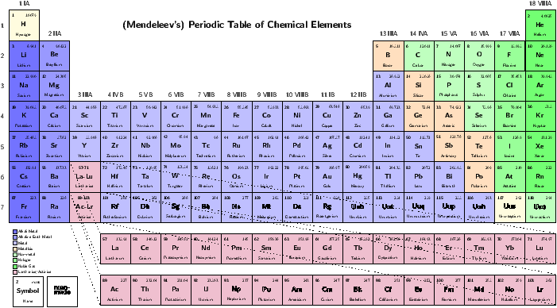

ضمیمه 19 – chap:SummaryInPersian، چکیدهی این مبحث را از دیدگاه یک ایرانی ارائه میکند.
That which exists in nature in multiples, we call poly-existentials. That which exists in nature in singular, we call mono-existentials. All material objects exist in singular and are mono-existentials. Ideas, information and knowledge exist in nature in multiples – not in singular. Ideas, Information and knowledge are poly-existentials. Much of our world is actually a mixture of mono-existentials and poly-existentials, which we call mixed-existentials.
In this document we analyze the topic of Intellectual Property (IP) from a new perspective. The topic of monopolistic ownership oriented restriction of poly-existentials and Western Intellectual Property Rights (IPR) are one and the same. Yet, the concept and terminology of poly-existentials has not appeared in prior discussions of this topic. This is the very first time that the concept and the word “poly-existentials” are being introduced.
The traditional perspective on Intellectual Property is that, it is debatable. Some good arguments have been made in its favor and some good arguments have been made opposing it. Some are for it and some are against it. It is perceived to be economically more profitable to be for it, than to be against it. So, in the West, a whole lot more people are in its favor.
The model of poly-existence makes it easy to prove that the concept of Intellectual Property is erroneous. This proof is based on logic that is rooted in nature of existence and nature of possession and the requirement for ownership to be in harmony with nature of possession and existence. Unlike other writings on this subject, we do not consider this as part of any debate. In this document we prove that the basic concepts of Intellectual Property are invalid.
The IPR regime is about extending the model and concept of ownership of mono-existentials to the realm of poly-existentials by creating artificial scarcity. This is against the nature of poly-existence.
Ownership of poly-existentials impacts their manner-of-existence towards being monopolistically controlled and towards becoming internally opaque. Monopolistic oriented restriction of poly-existentials has ramifications on autonomy and privacy of the individual and health of societies. Natural dynamics of Western IP restrictions result in reduced autonomy and privacy of the individual and result in transfer of more power to corporations and Corpocracy. Any digital ecosystem that is rooted in Western IPR puts humanity in danger. A moral alternative to the American proprietary digital ecosystem (Internet as we know it today) is called for.
The first part of this document is concerned with ontology of poly-existentials. We construct the “Poly-Existentials Reference Model” in order to analyze the nature of what IP restricts. Poly-existentials are naturally un-scarce and naturally multi-possessable and naturally un-territorial. Therefore poly-existentials are unownable. Western IP regime is about ownership (monopolistic restriction) of poly-existentials. The concept of poly-existence through the poly-existentials reference model makes the fraudulence of Western IPR regime clear and obvious.
In the second part of this document, we engage in discrediting of the IPR regime through debunking the arguments that have been put forward in its support and we address the false beliefs surrounding Western consensuses. We also put on the table the character of those who originated it and who are pushing it. Westerners are vested in their IPR regime. It is not in their interest to understand the invalidity of IPR. We point out that when a given society gets its fundamental ownership rules wrong, the consequences are severe. When most of the world gets its fundamental ownership rules wrong, the consequences are catastrophic.
The third part of this document is about solutions and cures. We advocate full rejection of the Western IPR regime. We then advance a specific replacement strategy which includes societal and global governance models that require halaal manner-of-existence of poly-existentials. We then propose construction of a complete ethics oriented digital ecosystem which has autonomy and privacy of the individual at its core. We then introduce a starting point for such a digital ecosystem called: The Libre-Halaal ByStar Digital Ecosystem. Finally we postulate a set of societal strategies that in theory can cure Eastern societies and do an economic number on Western IPR vulnerabilities.
This document is vast in scope and in ambition. And, this generally public version is just a beginning which should be considered a draft. The first and second part are complete enough to deserve scrutiny. The third part is incomplete but has enough material to convey its intent and direction. Throughout these three parts, our main goal is to underscore the importance of this topic and to agitate towards further discussions.
1.1 The Nature Of Poly-Existentials Makes Them Unownable
A thesis of this document is that poly-existentials are unownable. Poly-existentials cannot be personal property.
Our analysis revolves around the relationships among:
- Existence
- Possession
- Ownership
Existence and possession are aspects of nature, but ownership is a human construct. Ownership, as man made rules, can in theory be anything. In that sense, anything and everything is ownable. We then draw a distinction between “proper ownership rules” and “improper ownership rules”. We consider proper ownership rules as those which are in harmony with existence and possession aspects of nature and which result in enduring amelioration of society and humanity. An acknowledged recent Western improper ownership rule is Americans’ ownership rules for Africans as slaves. Existence of humans as equals makes them unownable. It is in this context that we consider poly-existentials as ownable or unownable.
To a certain extent, each society’s ownership rules reflect that society’s values and character. Intellectual Property as ownership rules represents the American and Western model for governance of poly-existentials. Since for Americans, IP is directly sourced from the U.S. Constitution and since analysis of ownership involves both the governed (poly-existentials) and the governor, the American character is on the table. We therefore need to fully consider it within our scope to analyze and understand why these people (Americans) have come up with these ownership rules (IP).
Ownership rules exisit to resolve conflicts and to improve order in society. Main ownability requirements are the following:
- Exclusive Possession – What is to be owned must be possessable by only one possessor at any given time.
- Scarcity – What is plentiful need not be owned.
- Territoriality – Assignment of ownership in a given place should not impact other ownerships in other places.
- Harmony with existence of the owned.
The nature of poly-existentials violates these requirements:
- Poly-existentials (e.g., ideas, formulas, knowledge) can be possessed by multiple possessors at the same time.
- Each poly-existential can easily be copied and can therefore be plentiful. Each poly-existential is not scarce.
- Each poly-existential can exist in multiple places at the sametime. Each poly-existential can be possessed by multiple possessors in different places at the same time. Poly-existentials are non-territorial.
- The concept of poly-existence (how the to be owned exists) as derived from nature leads to their ownership being un-natural.
Poly-existentials are therfore unownable.
Western Intellectual Property Rights regime is an umbrella misnomer to cover the following branches of US and Western laws:
- copyright
- patent
- trademark
Copyright, patent and trademark provide for ownership oriented monopolistic restrictions of poly-existentials. Each of these branches of Western law directly map to different forms of monopolistic restriction and ownership of different aspects of certain types of poly-existentials.
Since poly-existentials are unownable; copyright, patent and trademark laws as individual branches of law and collectively as Intellectual Property Rights regime are therefore invalid.
Ramifications of incorrect ownership laws can put societies and humanity at risk.
The context of mono-existence is inherently local. The context of poly-existence is inherently un-territorial, global and universal.
1.2 This Document is in Globish
This document is in Globish. It is not in conventional Anglo-American English.
See the document titled “Introducing Globish into Globish” [8] for a description of Globish. That document also includes references to other specific words and concepts relevant to this document. Briefly, Globish (mixture of Glob-al and Engl-ish) is the language that a Chinese may use to communicate with a Brazilian.
The intended audience for this document is all of humanity.
Some of the concepts developed in this document stand separate from American and Western values. Some of these concepts specifically reject American and Western values. Western readers need to pay extra attention, as many of their assumptions are likely not ours.
So-called Intellectual Property Rights (patent, copyright and trademark laws) are fundamentally Western concepts. They are primarily rooted in the American, English, French and European cultures. Much of our audience has not had these beliefs and should not permit these corrupt beliefs to enter their cultures. That segment of our audience that has patent and copyright traditions in their culture and their belief system need to recognize that these beliefs are by no means universal.
1.3 Relevant Globish Vocabulary
Intellectual Property Rights regime is a set of societal rules. IPR regime is a Western construct. The concepts and vocabulary of IPR are Western and are targeted towards justification, protections, promotion and propagation of the Western IPR regime.
The basis of analysis of this document is Eastern. Many of the concepts that we use to invalidate Western IPR regime are not rooted in Anglo-American English. Through out this document, there are also a number of important words and concepts that we use in their Globish sense and not in the Anglo-American English (Western) sense.
The concepts behind these words, to a large extent, have directed our analysis and as such are key to understanding this document. Recognizing the specific contexts for our use of these words is essential for understanding our exposition. Here we provide a short list of some of the key words and concepts that are essential for our exposition.
- Libre:
-
Libre is a substitute for the word free in English which distinguishes the freedom sense from the gratis sense. Libre in Globish refers to the sense of freedom in the word “free”. The other and dominant sense of the word free is gratis (free of charge). In the context of this document our use of Libre is in the scope of freedom from Western societal restrictions that come as a result of IPR regime’s restrictions. This scoping of Libre is different from FLOSS’s (Free and Libre Open Source Software) scope of the user’s freedom as it applies to Free Software. - Conviviality Of Tools
-
By conviviality we refer to the concept of “Tools for Conviviality” as Ivan Illich introduced it.In the document titled:
Introducing Convivial Into Globish
http://mohsen.banan.1.byname.net/PLPC/120037 — [3]
we introduce the term "Convivial" into Globish.
Briefly, in Illich’s words:
To the degree that an individual masters his tools, he can invest the world with his meaning; to the degree that he is mastered by his tools, the shape of the tool determines his own self-image. Convivial tools are those which give each person who uses them the greatest opportunity to enrich the environment with the fruits of his or her vision. Industrial tools deny this possibility to those who use them and they allow their designers to determine the meaning and expectations of others.
Western IPR model of poly-existentials leads to industriality of tools where the tool maker is more in charge.
The Libre-Halaal model of poly-existentials leads to conviviality of tools where the tool user is more in charge.
We expand on this in Section 14.2.3 – sec:ToolsForConviviality.
- Halaal and Haraam
- – «حلال و حرام»
In English, halaal and haraam are over simplified Orientalist adoptions that map onto “permitted” or “prohibited” and which come with islamophobia negative connotations.In Globish, philosophical halaal is “manifestation” of “moral sensibilities” relevant to a specific topic where “the set of actions” map to “right.”
We use the words halaal and haraam as vehicles for expression of ethics and morality as we have formally defined them in:
Introducing Halaal and Haraam into Globish
Based on Moral Philosophy of Abstract Halaal
And Defining The Libre-Halaal Label
معرفیِ دنیاییِ حلال و حرام
و تعریفِ حلالْ−وجودیِ چند وجودیها
http://mohsen.1.banan.byname.net/PLPC/120039 — [7]
A particular focus of this document is to identify halaal and haraam manner-of-existence of poly-existentials. We conclude that the Western IPR regime leads to the haraam manner-of-existence of poly-existentials.
We elaborate on this in Section ?? – chap:ProperGovernanceOfPoly-Existentials:HalaalAndHaraamMannerOfPoly-Existence.
- Libre-Halaal
-
Libre-Halaal is the label that we apply for the halaal manner-of-existence of poly-existentials. A necessary condition for conviviality of poly-existential tools is their Libre-Halaalness.In Section 4.2.2 – sec:TheLibre-HalaalLabel – we expand on this.
In Section 11.2 – sec:InSearchOfTheRightLabelForCorrectManner-Of-ExistenceOfSoftware – we describe why Libre-Halaal is superior to “Free Software”, “Open Source”, and other FLOSS attempts at labeling Halaal manner-of-existence of software (and other poly-existentials).
- East and West
-
East and West represent labels for spheres of consensus.Some of the important concepts that the Western sphere of consensus focuses on are: supremacy of markets, economics, competition, dominance, exploitation and freedoms of the individual and the corporation and separation of religion from governance.
Some of the important concepts that the Eastern sphere of consensus focuses on are: supremacy of family and society, social cohesion, societal harmony, ethics, morality and sanctity of speech and the intertwinedness of religion and governance.
The fundamental difference in perspective between East and West is in the context of individual and society. An Eastern Iranian may communicate this to a Western American with the following phrases: “The largest societal unit in America is the individual. The smallest societal unit in Iran is the family”
East and West have been engaged in “Models Wars”. The West considers its models as universal and has been imposing them on the East. Some Eastern societies have been resisting. Resisting the Western IPR regime is an important battle ground in these Models Wars.
- Orientalism
-
Orientalism is agenda driven definition of Eastern concepts, customs and characteristics by Westerners aimed at the West’s establishment of difference and superiority for the purpose of exploiting East and Easterners.Our use of the word “Orientalism” is in the context of Edward Saeid’s book titled “Orientalism” [29].
The history of Orientalism has led to a false belief by Westerners that the Western IPR regime is universal.
- West-toxication
- – «غرب زدگی»
West-toxication is a term that Iranians have created and use to denote pernicious Western influence that is to be rejected.West-toxication represents the impact of Orientalism on some Easterners which has led to their belief that Western model is superior to the Eastern model in almost all respects.
We use the word west-toxication in the context that Jalaal Al-Ahamad introduced it in his Gharbzadegi book in 1966 [23].
History of West-toxication has led some Easterners to believe that the Western IPR regime is universal, because it is Western.
We expand on this in Section 8.4 – sec:WesternIPRRegime:Aninstrumentofneo-colonialism.
- Americanism and Americanists
-
In English, Americanism is the self-congratulatory celebration of the likes of: free markets, rugged individualism, capitalism, the corporation, free speech, free Facebook friends, the national rifle association, market driven health care and TV advertised prescription drugs.In Globish, Americanism is the model of corporatized economic creatures existing in an industrial context. The Americanism model is focused on economic and industrial dominance. Americanism results into the core of the character of the Americanists to become that of morally bankrupt self-absorbed bullies. In that conext, with Americanists, everything is always just about money.
Because governance of poly-existentials are man made constructs within broader social and societal contexts, analysis of Americanism versus Eastern humanity oriented models needs to be an essential part of our discourse.
The Globish’s Americanism contrasts against the English’s Americanism in humanity’s context. Governance of poly-existentials in a humanity oriented model, naturally leads to the label of Libre-Halaal.
A key part of our analysis is to compare and contrast Americanism’s focus on self-toxication «خود زدگی» and economics versus the Eastern humanity oriented model of focusing on the greater good and halaal and haraam. Thus, we identify americanism as the root of the Western IPR problem. Furthermore, we recognize Americanism as a contagious disease and we recognize IPR as an agent for propagation of Americanism.
We expand on this in Section ?? – sec:Americanism:RootOfTheWesternIPRProblem.
- Unbounded Corporations – Corporatization – Western Corpocracy
-
When properly bounded, limited and controlled; there is nothing wrong with a group of people creating a legal entity called a corporation in order to generate economic profit for themselves.But society faces grave risks of harm when corporations are not properly bounded. Unbounded Corporations are a pillar of Americanism. In that model, in due course humans become corporotized economic creatures. The American/Western legal system then kicks in and formalizes the Western legal notions of “corporate personhood”. Americanism then amounts to a complete collection of economic creatures (people and corporations alike) where money fully rules and humanity is suppressed.
The scope of corporatization amongst Americanists is exceptional and spans all aspects of life and all professions. In Americanism, even academia, universities, medicine, medications, food, farming and agriculture are to become or are to be left in the control of large unbounded corporations.
By definition, corporations exist for the sole purpose of generating profit. The character of such a “corporate personhood” is then similar to that of a psychopath where empathy and remorse are impaired and egotistical traits rule.
It is inside of Americanism that the Western IPR regime has thrived. Copyright and patents have become instruments for amplification of power of corporations and dominance of corporations over individuals. After all is said and done, the overwhelming majority of copyright and patents are controlled by large, unbounded corporations.
We expand on this in Section ?? – sec:IPRRamifications:AmplificationOfPowerOfCorportaionsAndCorporate-Personhood.
- So-Called Western IPR Regime
-
The IPR regime was contrived to facilitate the Americanism goals of economic and industrial dominance by few and by corporations. Corporatized economic creatures (Americanists) have chosen intellectual property as a model for governance of poly-existentials in order to create un-natural exploitable environments. They have then hyped it up as legal and moral!In Anglo-American English, “Intellectual Property Rights (IPR)” has become revered and chic terminology which is often portrayed as moral, ethical and universal.
In Globish, we reject all of that. The entirety of what some call “Intellectual Property Rights” is a rigged misnomer. Western copyright and patent artificial laws are not about property or rights or intellectuality.
For this reason we usually prefix IPR with “Western” and “so-called.”
We expand on this in Section 7.3 – sec:So-CalledWesternIntellectualPropertyRights:ARiggedMisnomer.
Understanding of poly-existence plus the above concepts and words, very simply and naturally lead to the obvious recognition of fraudulence of the Western IPR regime. Yet, because it is not in the interest of many to recognize fraudulence of the Western IPR regime we need to apply more than just logic. Through out this document we further develop the above concepts for those who have difficulty putting aside their interests in favor of logic and reason. Many of the these concepts resonates in the East and are suppressed in the West.
These concepts and these words permit us to change the center of gravity of this topic from individualism and economics to ethics and harmony with nature.
1.4 This Is A Draft — Request For Feedback
The primary URL for this document is: http://mohsen.1.banan.byname.net/PLPC/120033. The pdf format is authoritative.
Distribution of this document is unrestricted. We encourage you to forward it to others.
Many of the concepts that we present in this document are non-conventional and perhaps new. This is the very first time that a categorization of the world with the labels of Mono-Existentials and Poly-Existentials is being introduced. And it is the first time that the Western IPR regime is being viewed as a mapping onto restriction of poly-existentials.
As such, some of what is being presented is in early stages of being understood. This document is evolving and should be considered a draft – we plan to follow up with further updates and enhancements. Yet, the core concepts have been adequately developed and our conclusions are correct. Therefore, this revision of the document can be envisaged ready for early considerations.
Additionally, our analysis has had to be very multi-disciplinary. So we have had to dabbled in chemistry, physics, biology, information theory, computer science, logic, philosophy, ethics, theology, sociology, law and economics. Clearly we are not experts in all of these fields.
We can benefit from your feedback. Please let us know your thoughts. You can send us your comments and criticisms via the URL http://mohsen.1.banan.byname.net/contact, or by email to plpc-120033@mohsen.1.banan.byname.net.
We are interested in having translations of this document in other languages. A summary in Persian (Farsi) is available in: http://mohsen.banan.1.byname.net/PLPC/120071. Please let us know if you wish to assist with translations of this document.
We thank you for your assistance.
1.5 Our Motivations And Our Purposes
For Writing This Document
We are software engineers. The Western IPR regime has crippled our profession by prohibiting collaboration and transferring more power to corporate businessmen. This has led to dominance of internally opaque software and internally opaque internet services. Internally opaque software and internally opaque internet services foster a competitive model which stifle engineering collaboration. Internally opaque software and internally opaque internet services in turn lead to deterioration of individual’s autonomy and privacy.
Our profession, software and internet engineering, has a responsibility to society and we have a responsibility to our profession. It is towards fulfillment of our responsibilities to our profession and our profession’s responsibility to society and humanity that we have prepared this document.
Because we have been close to writing of software and creation of internet services, we understand the ramifications of the Western IPR regime better than many others. Dynamics of the Western IPR regime are such that they put society and humanity at risk.
We have concluded that the Western IPR regime is a colossal mistake.
Let’s say that based on solid logic we could demonstrate that the bases for establishment of IPR regime is fundamentally wrong and that IPR regime results in serious harm to society and humanity. What impact would that have? Contemporary global mistakes often result in entrenched vested interests. Many powerful people and entities are deeply vested in Western IPR. Such deep economic interests often prevent people’s willingness to hear and follow basic logic.
The Western IPR regime is a sphere of consensus that can not be changed based on logic and reason alone. Therefore, the scope and purpose of this document can not be limited to logic and reason alone.
The consequences of the IPR Western ownership mistake are even more grave than the previous Western ownership mistake – that of slavery of Africans by Americans based on formal Western laws of ownership of human beings. This time ramifications of the mistake are broader than just America or the West, they put all of humanity in danger.
Ramifications and harm of the Western IPR regime are far broader than they are generally understood. Western IPR regime indirectly impacts the individual’s autonomy and privacy and distorts the relationship between individuals and corporation.
In this document we address much of what surrounds IPR. Our goal is to open the subject wide towards tangible results.
- We introduce the concept of poly-existentials and based on that we evaluate the validity of the Western IPR regime based on logic. Based on that analysis we conclude that all basis for establishment of Western IPR regime are invalid.
- It is clear that poly-existentials should not be owned and it is
clear that the Western IPR regime should be abolished. But
abolishment of IPR regime should not lead to ungoverned
poly-existence. Poly-existentials should be regarded as “public
goods” and as such deserve legal protection because of negative
externalities which arise if poly-existentials are not properly
governed.
We frame the question of correct governance of poly-existentials in their halaal and haraam manner-of-existence.
- We then recognize digital as the most potent form of poly-existentials and put forward concrete definitions for halaal manner-of-existence of software and internet Services and label them as Libre-Halaal.
- In a document titled:
Definition Of The Libre-Halaal Software Label
Defining Halaal Manner-Of-Existence Of Software
http://www.by-star.net/PLPC/180044 — [10]
and also at the web site:
http://www.halaalsoftware.org
we provide definitional criteria for halaal manner-of-existence of software.
- In a document titled:
Definition Of The Libre-Halaal Internet Services Label
Defining Halaal Manner-Of-Existence Of Internet Application Services
A non-proprietary model for delivery of Internet services
http://www.by-star.net/PLPC/180045 — [9]
and also at the web site:
http://www.libreservices.org
we provide definitional criteria for halaal manner-of-existence of internet services.
- We then debunk common arguments in favor of validity of the Western IPR Regime. We recognize and illustrate that it is not reasonable to expect that Americanists could be awakened. This disease can not be stopped in the West. Our hope is with the East.
- Our focus then shifts towards solutions. We propose a number of abstract cures towards replacing the current Western IPR traditions.
- Having confined ourselves with halaal
manner-of-existence of software and internet services,
we move towards creation of a complete parallel Libre-Halaal
digital ecosystem.
In a document titled:
The Libre-Halaal ByStar Digital Ecosystem
A Unified and Non-Proprietary Model For Autonomous Internet Services
A Moral Alternative To The Proprietary American Digital Ecosystem
http://www.by-star.net/PLPC/180016 — [11]
and also at the web site:
http://www.by-star.net
which is partially reproduced in Chapter 14 – chap:TangibleCure:TheLibre-HalaalByStarDigitalEcosystem –, we describe the contours of a cure.
- Equipped with a tangible initial Libre-Halaal digital ecosystem, we then turn our
attention to economics and business.
In Chapter 12 – chap:GlobalPoly-ExistentialCapitalism –, we analyze and distinguish dynamics of Mono-Existential Capitalism vs Poly-Existential Capitalism.
In a document titled:
The By* Federation of Autonomous Libre Services
An Inversion to Proprietary Internet Services Model
An Open Business Plan
http://www.by-star.net/PLPC/180014 — [17]
and also in the web site:
http://www.neda.com/strategicVision/businessPlan
we present an Open Business Plan towards making ByStar widespread.
- Our ultimate goal is to influence formulation of national
policies and adoption at societal level of halaal
manner-of-existence of poly-existentials in general and Libre-Halaal
Software and Libre-Halaal Internet Services in particular.
In the Western context in general and in the American context in particular, in this domain, at best such a goal is academic.
In the Eastern context in general and in the Iranian context in particular, with these understandings, we believe it is possible to move towards governance of poly-existentials based on their halaal manner-of-existence.
To this end, in Chapter 16 – chap:TheoreticalEasternSocietalCures –, we have proposed a set of software and internet services national policies for Iran that are equally applicable to other Eastern societies.
Each part of this document has a particular tone and a specific style. The parts that introduce the concept and terminology of nature of poly-existentials are scholarly, formal, logic based, and persuasion oriented.
The parts that deal with exposure of the Western IPR regime mistake are by choice inflammatory and aggressive. Our philosophical analysis is that nature of poly-existentials leads to the natural right to copy and the natural right to apply knowledge without any monopoly oriented restrictions. This in turn naturally leads to full rejection of the restrictive IPR regime. The context of poly-existentials is inherently universal. It is the responsibility of those who wish to restrict our (humans) natural rights, to make a case for their model. The burden of proof is on them not on us.
A meaningful case for IPR has never been made. So, where appropriate we mock and we ridicule the Western status quo. We frequently toy with the self-absorption and overly individualistic aspects of Western cultures. Logic and persuasion alone are ineffective against the entrenched Western IPR disease. Exposure of the Western IPR regime mistake also involves the clarification that IPR is a Western and mostly American mistake. As such our tone may come across as anti-American and anti-Western. Western readers need to recognize that the intended audience of this document is all of humanity and that the scope of this topic is all of humanity. The nature of this topic is inherently global.
The purpose and scope of this document is not limited to analysis of Western IPR disease. We also offer theoretical recipes for cures. The parts of this document that deal with the cure, occasionally go beyond persuasion and are prophetic. The cure part is broken into Western cures and Eastern cures – each with their own flavor.
Content of this document reflects our independent thoughts. We have not received any funding for producing this document. We have not written this document in the traditional context of Western IPR where the result of our work are expected to bring economic rewards. We have something to say and we want others to read it and discuss it – towards the progress of science and useful arts. Verbatim copying of this poly-existential is unrestricted. We believe that the collaborative model is the one which motivates real engineers, real scientists and real artists.
We are law abiding citizens. We underscore the corrupt nature of Western IPR regime, but we do not advocate illegal or unauthorized copying in applicable territory. We advocate the abolishment of Western IPR regime. In the mean time, we encourage authors and inventors to subject their work to non-restrictive copyright and no patents or non-restrictive (defensive) patents in applicable territories. We advocate full rejection of the Western IPR regime in territories where they may be under consideration.
The anti-Americanist tone and our focus on curing Eastern societies is not towards a market oriented agenda. It is reality and logic that has taken us there. In Appendix 20 – chap:AboutTheAuthor – we include our profile for those curious about the tone of this document.
1.6 The Libre-Halaal Manner-Of-Existence Of This Document
Not only is this document a Libre-Halaal poly-existential, but it has been produced, published and distributed by pure Libre-Halaal Software and Libre-Halaal Internet Services. In Appendix 22 – chap:Colophon –, we provide a summary of how purely Libre-Halaal convivial tools can produce results that surpass their Proprietary-Haraam competitors.
1.7 You, Your Choices And Your Responsibility
Our primary focus in this document is governance of poly-existentials. Therefore, both the governed (poly-existentials) and the governor (economic creatures vs humans) need to be subjects of our analysis. In the context of governorship, throughout this document, in parallel with the model of poly-existence, we draw a clear and explicit distinction between being an economic creature and being a human.
In a sense then, you are part of the governorship. Governance of poly-existentials by humans for humanity would be distinct and different from governance of poly-existentials by economic creatures for economic creatures. We have a choice. Ownership is a human construct. We are in charge.
Americanism as a model for self-toxicated economic creature existing in an industrial context has led to the creation of the artificial competition oriented Western Intellectual Property Rights regime. Humanism as a model for humans living in societies leads to the natural collaboration oriented Libre-Halaal poly-existential regime. Americanism vs Humanism lies at the center of the conflict for governance of manner-of-existence of poly-existentials.
Where do you fit in all of this? Are you a paticipant? Or are you just an observer? Are you an “Intellectual Worker”? Do you “own” any patents or copyright? Are you an economic creature or, are you a human? Do you have any responsibilities in these regards?
By an “Intellectual Worker”, we are referring to those involved in production, organization and propagation of poly-existentials. Professions related to: software, engineering, teaching, research, arts, journalism, medicine, pharmacy, plant biology, etc. – all involve production or propagation of poly-existentials. As a medical doctor, when you prescribe patented medications, you are propagating patents. As a software engineer working for the likes of Microsoft, when you write code, you are producing copyrighted material. Today, large parts of many societies are intellectual workers. Enlarging of numbers of intellectual workers throughout the world is a clear trend.
It is very convenient for intelectuall workers to assume the validity of IP and become accomplices. Status quo is often very profitable for intelectuall workers. It may well not be in your economic interest to understand or to advocate that the basic concept of Intellectual Propoerty Rights is wrong.
If you are an intellectual worker, you are a participant. And if you are not just an economic creature, as a human, you have responsibilities.
Your responsibilities start by being willing to understand – even when it may not be in your economic interest to understand.
It could well be the case that you, on your own, can not do much to impact the situation. But, collectively we can.
1.8 Our Invitations To You
The picture that we are drawing in this document is vast in scope and in ambition. Thus far, the entire formulation and development has been done by a very small team. Much of our work and much of our writing is in its early stages of evolution.
These efforts can only be significant if participation and usage is widespread and if collaborative development involves many. We have created many venues to facilitate collaboration. And now we ask you, to assist us in making this work widespread.
As a first step, we ask you to review what we have written and give us your critique. If you think our work has merit, we also ask you to help us in spreading the word. Please feel welcome to further distribute this document where appropriate.
We invite you to assist in the collaborative development of Libre-Halaal Software and Libre-Halaal Internet Services. And we encourage you to avoid use of all Proprietary-Haraam software, and Proprietary-Haraam internet services.
Beyond this important intellectual contribution, we also invite you to participate with action as appropriate in the context of your own professional domain and in your own societal context.
Our invitation to you spans three aspects of what we present in this document.
1.8.1 Invitations Towards Global Abolishment Of Western IPR Regime
In the context of our goal to demonstrate that Western IPR is a mistake, our intended audience is all of humanity.
We believe that after reading this document and based on the understanding of poly-existentials, any independent thinker would conclude that the Western IPR regime should be abolished. However, many are vested in the IPR regime and can not read this document as independent thinkers.
So, we have a battle in our hand. And we ask for your assistance.
Please distribute this document as widely as possible, particularly amongst regulatory entities, legislators and the press within your society.
1.8.2 Invitations Towards Global Adoption Of The Likes Of ByStar Libre-Halaal Digital Ecosystem
In Part III – part:Cure:AbolitionOfWesternIPRRegime –, we introduce the Libre-Halaal model as replacement for the Western IPR regime. We then say that our initial focus should be the creation of a Libre-Halaal Digital Ecosystem.
In Chapter 14, we then introduce:
The
Libre-Halaal ByStar Digital Ecosystem, as a moral and ethical alternative to the
proprietary American digital ecosystem. An overview of this is also
provided in [11], available on-line at:
http://www.by-star.net/PLPC/180016 and also at: http://www.by-star.net/.
We invite you to participate in propagation of ByStar.
Information for Joining ByStar is provided in Section 14.
If you are a qualified investor, we invite you to take a look at our Open Business Plan at http://www.neda.com/strategicVision/businessPlan. Consider ramifications of participating in something this huge and this proper!
1.8.3 Invitations Towards Eastern Societal Libre-Halaal Strategies
In Chapter 16 – chap:TheoreticalEasternSocietalCures –, we say that there is no hope for a societal cure for Western societies and that we should focus on Eastern societies. We then focus on Iran as a case study.
As an Easterner, we invite you to distribute this document widely amongst academics and policy makers of your Eastern societies.
As a Muslim, ask the opinion of your source of imitation about halaal manner-of-existence of poly-existentials.
In every possible way reject the current Western IPR regime which has brought us the current Western proprietary-haraam manner-of-existence of poly-existentials.
Part I |
Chapter 2 Nature Of Poly-Existenials
Here we categorize our world into two:
- Mono-Existentials
- Poly-Existentials
There are things in nature that exist in singular and there are things that exist in multiples.
That which exists in nature in singular, we call mono-existential. Examples of mono-existentials include: tangible physical objects, a pencil, land, Internet domain names, bandwidth. Chemistry and physics are the realm of mono-existentials.
That which exists in nature in multiples, we call poly-existential. Examples of poly-existentials include: knowledge, ideas, information, the digital entities.
This natural categorization then permits us to revisit the question of ownership of poly-existentials which simply maps to the Western Intellectual Property Rights (IPR) Regime. The topics of Western IPR and ownership and restriction of poly-existentials are one and the same.
Our analysis is from the perspective of the possessed. Traditional Western IPR analysis has always been from the perspective of owner/creator/author. The perspective of the possessed represents societal and human liberties.
This is the first introduction of the concept of poly-existentials which leads to a different way of looking and analyzing Western IPR regime. This duality of analysis based on the perspective of author/owner vs. the perspective of possessor/owned perspectives is similar to time domain analysis vs frequency domain analysis or the dual nature of light as particle or light as wave. They are different bases of analysis for the same thing. Results of correct analysis in each domain are equally valid and incorrect analysis in each domain are equally invalid.
There is ample historic precedence for our approach. In the 13th century Ibn-Sina «بو علی سینا» produced “Daneshnamh Alaei” «دانشنامه علایی», [30], in which he classified his world. Based on that classifications, he then used logic to conclude. Ibn-Sina’s work became a basis for much of the Western scholarly beginnings. In a sense, what we are doing here is extension of that type of classification and logic for the digital era.
2.1 Poly-Existentials Reference Model
In this chapter we begin to develope a reference model. Let’s call it the “Poly-Existentials Reference Model”. Our goal is to introduce a set of concepts and a terminology that can then be used to evaluate merits of Western Intellectual Property laws and to assist us to understand the proper governance model that is needed for poly-existentials. The poly-existentials reference model is independent and outside of the Western IP traditions. This reference model is based on nature. It reflects science, not beliefs, faith and opinions. This model is independent of societal consensus and is equally valid in the East and the West.
We then put the Western IPR model against the poly-existentials reference model and see that the two are in conflict. When nature and man made conventions conflict, it is the man made conventions that are wrong. The poly-existentials reference model permit us to prove that Western copyright and patent laws are invalid as any form of property. Such a proof is then no longer subject to any dispute because it is rooted in nature and logic – not beliefs and opinions.
We then conclude that the Western IPR model is erroneous. Based on that, we advocate that the Western IPR model should be abolished.
Such analysis needs to start with clear categorization of mono-existentials, poly-existentials and mixed-existentials.
2.2 Mono-Existence, Poly-Existence And Mixed-Existence
Examples of mono-existentials are:
- Material Mono-Existentials:
- (things, spoon, touchables)
- Non-Material Mono-Existentials:
- (spectrum, internet domain name, view)
- Rivalry Mono-Existentials:
- [economic term] (Rival Goods: spoon, spectrum)
- Non-Rivalry Mono-Existentials:
- [economic term] (Non-Rival Goods: air, fish in the ocean, view) – Non-Rivalry goods are often confused with poly-existentials – (e.g. Wikipedia and Jewish analysis has made that mistake).
- Public Mono-Existentials:
- [economic term] (Public Goods: roads, national parks)
Examples of poly-existentials are:
- Pure Poly-Existential:
- (recording/s, disclosed formula, disclosed idea, text, recipe, algorithm, knowledge)
- Digital Poly-Existential:
- (recording/s, formula, idea, text, recipe, software source, software binary)
- Poly-Existential Content:
- (mp3, book, cd, video, cookbook, software on a cd)
- Poly-Existential Service:
- (Google, By*, Facebook – Poly-Existential drived service – mono-existential aspect not dominant)
Examples of mixed-existentials are:
- Poly-Existential Product:
- (tivo, viagra, sauce-bechamel, Mixed-Existentials as poly-existential drived products)
We present the concept of “Expressed Formula” as the general form of “primary poly-existential”. The digital format presents a “pure poly-existential” form.
Poly-existentials and mono-existentials do mix. Sometimes the dimension of poly-existence is dominant and sometimes the dimension of mono-existence is dominant.
Much of our world is actually a mixture of mono-existentials and poly-existentials – mixed-existentials. In the case of mixed-existentials, the dominant aspect of poly-existence or mono-existence is sometimes clear. In such instances, we will refer to the mixed-existentials based on its dominant aspect.
Consider a book. A traditional book is mixed-existential. The paper and the ink are mono-existentials. But the content of the book (its information) is poly-existential. In the case of a book, clearly the dominant aspect is usually (not always) poly-existential. When you read a book, you are reading its content. A book can easily be digitized, in which case it becomes a pure poly-existential. But, if the book was a rare historic manuscript, then the dominant aspect could have been its mono-existential dimension.
In the case of a given factory generated spoon, the dominant aspect is usually the material spoon which is mono-existential and not poly-existential instructions supplied to the numerically controlled machine that produced that particular spoon.
2.3 Mono-existentials
Mono-existentials are bound by their location. At any give time they exisit in one and only one specific location. Material mono-existentials can be moved (transported) at physical speed.
2.3.1 Categories Of Mono-existentials
In the context of mono-existence versus poly-existence, all that is material is mono-existential. Some non-materials are also mono-existential.
We categorize mono-existentials in the following 4 categories.
- Nature’s Material Mono-Existentials
- Man Made Material Mono-Existentials
- Nature’s Non-Material Mono-Existentials
- Man Made Non-Material Mono-Existentials
In the following sections we describe each of these.
Nature’s Material Mono-Existentials
Anything material is mono-existential.
Matter is the stuff around us. Atoms and molecules are all composed of matter. Matter is anything that has mass and takes up space.
A substance is matter which has a specific composition and specific properties. Every pure element is a substance. Every pure compound is a substance. For example, iron is an element and hence is also a substance. All substances are mono-existentials.
Chemistry allows us to categorize material mono-existentials into: chemical elements, chemical compounds and organic and inorganic.
Chemical Elements
Each stable chemical element is a mono-existential. This is illustrated in Figure 2.1.

Our understanding of the periodic table, itself is a poly-existential.
Our understanding of the periodic table, allowed us to predict existence of elements in nature prior to having discovered them. Mono-existence of those undiscovered elements was independent of us. Our discovery created new poly-existentials. The mono-existential existed before being discovered.
"
Chemical Compounds
A compound is a substance formed when two or more chemical elements are chemically bonded together.
Chemical compounds form much of the matter that is around us.
Beyond basic physical chemistry and inorganic chemistry, when it comes to organic chemistry and bio-chemistry, at this time we are not adequately equipped to open those analysis. When it comes to DNA in particular, there are some poly-existence similar characteristics which again we are not prepared to address at this time.
Man Made Material Mono-Existentials
A whole lot of the stuff around us is man made.
Man made mono-existentials involve a manufacturing process. The manufacturing process is a poly-existential but what gets produced can have a dominant mono-existential characteristic. When mass produced, each is mono-existential.
If the manufacturing process is relatively simple (say cutting of a tree), then we would consider the result of the manufacturing process mono-existential because the poly-existential component of the end result is insignificant.
If the manufacturing process is complex (say building a gun) then we would consider the result of the manufacturing process a mixed-existentaial. See Section 2.5 – sec:Mixed-Existentials –, for details.
Strictly speaking one could take the position that all man made material results are mixed-existentials. There are no pure man made material mono-existentials.
Nature’s Non-Material Mono-Existentials
Beyond matter there are other experiencable things in nature.
There have been many attempts in putting all of our experiencable understandings of the universe into one equation.
Figure ?? is one such attempt. This equation is annotated by attribution of aspects of knowledge to primary contributors.
Figure 2.2: Unified Physics Equation With Inventors Labels
All such forces and all such phenomena is mono-existential. They are bound by time and place and exist in singular.
Forces such as gravity and electromagnetic forces are bounded by location. So, things such as radio broadcasting and spectrum are mono-existentials.
Figure ?? is another such attempt. This equation is annotated by subject matter labels.
Figure 2.3: Unified Physics Equation With Subject Matter Labels
The knowledge of such equations are poly-existentials.
Man Made Non-Material Mono-Existentials
Social structures and interactions often require uniqueness. As such, humans create non-material mono-existentials. Some examples of man made non-material mono-existentials are: domain names and national identification numbers such as American social security numbers.
2.3.2 Scarcity Of Mono-existentials
Mono-existentials can be scarce or plentiful. Scarcitity and plentifulness are relative concepts and depend on the environment and time. It is scarcity of mono-existentials that make them rivalry or non-rivalry.
Mono-Existentials Rivalry Goods
“Rivalry Goods” is an economic concept.
In economics, a “good” is said to be rivalrous or rival if its consumption by one consumer prevents simultaneous consumption by other consumers.
In general terms, almost all private goods are rivalrous.
A good can be placed along a continuum ranging from rivalrous to non-rivalrous.
Mono-Existentials Non-Rivalry Goods
“Non-Rivalry Goods” is an economic concept.
Non-rival goods may be consumed by one consumer without preventing simultaneous consumption by others. A good can be placed along a continuum ranging from rivalrous to non-rivalrous.
Many examples of non-rival goods are intangible.
Some broad examples of Non-Rivalry Goods are: air, fish in the ocean, view, roads, national parks, television broadcasts, wind and sunshine.
Non-Rivalry goods are often confused with poly-existentials (e.g. Wikipedia and Jewish IPR analysis make that mistake).
Introduction of the concept of poly-existentials fully eliminates this common confusion.
The concept of poly-existentials is a philosophical concept. The concept of Non-Rivalry Goods is an economic term. Basing economics as the primary basis for structuring human laws is wrong. Inclusion of IPR in the US constitution by businessmen (so-called founding fathers of America) is another example of the confusion which amounts to an attempt in creating rivalry goods from poly-existentials – based on artificial scarcity.
Goods that are both non-rival and non-excludable are called “public goods.” It is generally accepted by mainstream economists that the market mechanism will under-provide public goods, so these goods have to be produced by other means, including government provision. Poly-existentials are inherently public goods.
The Western IPR regime is the opposite of “Public Goods”. In the US constitution we have government provisions creating artificial scarcity against the public good.
2.4 Poly-Existentials
We present the concept of “Expressed Formula” as the general form of “primary poly-existential”. The digital format presents a “pure poly-existential” form. Unless expresses a formula is not a poly-existential.
Full emergence of digital technology in the middle of 20th century, has moved humanity into an arena where the dominance of mono-existentials ended. We now live is a world where poly-existentials impact nearly every aspect of life. Restrictions on poly-existentials has been harming nearly every aspect of life.
Pure poly-existentials are kept in some form of memory. poly-existentials are “remembered”, “retrieved” with memory. Memory relates to object permanence. While memory is usually material poly-existentials are always non-material. Memory can be human’s brain or hand written ink on a piece of paper, machine produced ink on paper (traditional books), digitized information on hard disk. The general form memory can functions as a minimal substrate and be the container of poly-existentials.
An animal can be the producer of the poly-existential and an animal’s memory can be the memory for a poly-existential. But, poly-existentials are for the most part result of human activity. Poly-existentials are often expected to be useful. The value of the poly-existentials come from the impact that they can have on human condition.
Poly-existentials can be re-instantiated. two copy of the Expressed Formula are two instances of the same formula. The mechanism that surround storage of the pure poly-existentials (e.g.; brain (human’s or animal’s), paper, digital memory) can facilitate copying, transmission and dissemination of the pure poly-existentials to varying degrees. The digital form in particular makes copying, transmission and dissemination of pure poly-existential extremely practical and as such the digital era has made understanding the nature of poly-existentials most critical.
Unlike mono-existentials, poly-existentials are not bound by location. At any given time multiple instances of the same poly-existential could be in different places. Unlike mono-existentials, poly-existentials can be transmitted or broadcasted over distances at the maximum theoretical speed of light. The digital form of poly-existentials permits for error-free and exact transmission and error-free and exact copying of poly-existentials. This ability to make exact transmission and exact copying of poly-existentials is a new human capability that occured in 20th centure. It is this new capability that has made the need for a poly-existential reference model more acute.
Expressed Formula is either for human consumption (idea, knowledge, software source code) or for machine consumption (binary software, paper tape for NC machines, Music CDs).
Propagation, replication, copying of poly-existentials is as simple as memory transfer. Restricting propagation of poly-existentials is counter to nature. New existence (instantiations) of poly-existentials have no impact on previous existence. Additional existence of poly-existentials can make them more useful. Monopolistic ownership oriented restriction of poly-existentials is counter to nature and creates harmful artificial scarcities. Monopolistic ownership oriented restriction of poly-existentials is morally wrong and should be abolished. Attribution of Expressed Formula to its producer is called for.
For mono-existentials possession and ownership is one-to-one. For poly-existentials. possession is many-to-many and therfore ownership is not possible.
2.4.1 Categories Of Poly-Existentials
Below we enumerate some categories of poly-existentials
- Data
- Information
- Content
- Knowledge
- Application Of Knowledge
- Code – Software
- Execution Of Code
- Remote Execution Of Code – Internet Services
- Productization Of Code
In Appendix 17 – chap:TaxonomyOfPoly-ExistentialsAndMixed-Existentials – , we present a starting point for identifying different types of poly-existentials and mixed-existentials.
2.4.2 Model Of Birth and Evolution Of Poly-Existentials
The moment of “divulging” is the moment of birth of poly-existentials. In the context of the concept of poly-existential as “expressed formula” we are drawing a distinction between a formula and an expressed formula. Divulging is expression of the formula.
The act of divulging of a poly-existential is that of putting the poly-existential in the possession of others without adequate measures for prevention of its further possession.
It is only prior to divulging that there can be ownership.
The following is a simple look at the stages of transformation of poly-existentials.
- Producing:
- A Ballet, Acting, Authorship, Human Activity.
- Divulging/Capturing:
- Can be by producer or others.
- Poly-existential:
- Moment of birth of poly-existential is the moment of divulging.
- Poly-existential Possessors:
- Any dissemination of the poly-existential may further result in independent and unrelated possessions.
When producers and divulgers are different and have different interest, the poly-existential is born as a “leak.”
-future
2.4.3 Private and Public Poly-Existentials
A poly-existential can be private poly-existential or public poly-existential. Private poly-existential is secret. Public poly-existential is knowledge. Knowledge is not ownable. Secret is inherently owned – unless divulged.
The “key” to most houses is a mixed-existential with a dominant poly-existential characteristic. The house key is usually marked as “do not duplicate.” Because the key should not be shared, it is a Private Poly-Existentials.
In the context of digital signatures (PKCS), the user’s secret key is Private Poly-Existentials and public key is Public Poly-Existentials.
Confidentiality Agreements are a form of explicit copy restriction which are fundamentally different from copyright law. Confidentiality Agreements are in the context of private poly-existentials, Western copyright laws are in the context of public poly-existentials. While we fully reject the Western copyright law and consider it un-natural. We regard confidentiality agreements as legitimate and natural – because they are explicit.
2.4.4 Human Work And Motivations Of Authors
Poly-existentials are result of human activity. There are typically two stages of human activity.
- Production of potential poly-existentials. (A Formula)
- Divulging (recording, dissemination, distribution) of the poly-existentials. (Expressing The Formula)
Human activity then results in creation of poly-existentials that are considered desirable or useful by some.
Economic models that can be used to organize human activity towards production and consumption and usage of poly-existentials involve motivating authors towards creation of more an better poly-existentials.
The economic models should be subservient to the nature of poly-existentials. By restricting natural propagation of poly-existentials Western IPR amounts to an unnatural economic model.
Western IPR regime amount to extending mono-existential economics to the realm of poly-existentials by restricting poly-existentials and creating artificial scarcity. Any economic model that is based on creation of artificial scarcity is unhealthy, vulnerable and challengable. In the aggregate, creation of artificial scarcity is counter to general human progress. It creates profits for a few at the cost of loss for many.
Human motivations are not always economically oriented. This is hard to understand for Americanists – economic creatures. Concepts such as Kamikaze, Martyrdom, and the actions of 911 perpetrators were not economically oriented. Human motivations to produce more and better poly-existentials need not always be economically oriented. The document that you are reading – a poly-existential available to all – is not being produced and distributed for economic motivations.
Because poly-existentials are copy-able, they thrives in a collaborative environment where they go through multiple derived work accumulations. It is unnatural for derived work from public poly-existential to be monopolistically restricted.
Because of possession and ownership differences, economic models for mono-existentials should be fundamentally different. In Chapter 12 – chap:GlobalPoly-ExistentialCapitalism –, we present the contours of an economic model residing in the Non-Proprietary and For-Profit quadrant.
2.4.5 Poly-Existentials As Artificial Rivalry Goods
Poly-Existentials are by nature non-rivalry goods.
By nature one consumption of poly-existentials does not prohibit another consumption. Poly-existentials by nature are “Public Goods”.
It is possible to turn poly-existentials into artificial rivalry goods. This amounts to an unnatural and purely economic activity.
That is what the Western IPR regime does. It creates artificial rivalry goods from poly-existentials through government provisions that restrict natural existence of poly-existentials and which violate basic human rights of: “Right To Copy” and “Right To Apply Knowledge”
The Western IPR regime is the opposite of “Public Goods”. In the US constitution we have government provisions creating artificial scarcity in the name of promoting public good.
Creation of artificial rivalry goods from poly-existentials have major side-effects which put civilization in danger. This is often what happens when man tries to violate basics of nature.
2.5 Mixed-Existentials
Pure poly-existentials and pure mono-existentials are very often mixed to form mixed-existentials.
With a mixed-existential, a poly-existential is instantiated in the substrata of a mono-existential.
Hence, a mixed-existential has a mono-existential component and a poly-existential component.
We expand on this in the context of an example.
2.5.1 Mixed-Existential Example: A Hypothetical Gun
We are using a hypothetical gun as an example because guns are relatively cohesive products and yet they can be relatively complex to build. Guns have also been subject of many Western IPR patents.
Consider a hypothetical gun, a hypothetical 3d-printer (or a hypothetical Numerical Controlled (NC) Machine) and some hypothetical 3d-printer-raw-meterial (or metal for the NC Machine).
The hypothetical gun is then the result of running the hypothetical gun-program on the hypothetical 3d-printer with the hypothetical 3d-printer-raw-meterial.
The hypothetical gun is then a mixture of the hypothetical gun-program (which is a poly-existential) and the hypothetical 3d-printer-raw-meterial (which is a mono-existential).
In the context of the hypothetical gun-program (poly-existentials) component of the hypothetical gun (mixed-existentials) there are two distinct aspects.
- The totality of the hypothetical gun-program.
- Applying one’s knowledge of the hypothetical gun-building-process to write one’s own hypothetical gun-program.
The Western IPR regime restricts one with copyright law.
The Western IPR regime restricts two with patent law.
This hypothetical gun (mixed-existential) represents the majority of man-made stuff that is around us (manufactured product). hypothetical 3d-printer represents the factory equivalent. hypothetical 3d-printer-raw-meterial represents the product’s raw material. hypothetical gun-program represents the specific manufacturing steps. Knowledge of hypothetical gun-building-process represents the knowledge of manufacturing process.
Through controlling the hypothetical gun-program (poly-existentials) and the hypothetical gun-building-process (poly-existentials) the Western IPR regime restricts the totality of hypothetical gun (mixed-existentials) which is the processed hypothetical 3d-printer-raw-meterial (mono-existentials). Hence, the Western IPR regime can restrict classes of mono-existentials and limit exisiting ownership of instances of mono-existentials.
2.5.2 Scarcity Of Mixed-Existentials
Scarcity of mixed-existentials could be based on their mono-existential component or their poly-existential component.
If the poly-existential component of a mixed-existential is not owned or restricted, then scarcity of the mixed-existential is same as its mono-existential component.
If the poly-existential component of a mixed-existential is restricted, then the mixed-existential is more scarce than its mono-existential component.
2.6 Possession Of Mono-Existencials, Poly-Existentials and Mixed-Existentials
Naturally, possession of mono-existentials and possession of poly-existentials work very differently. Possession of mono-existentials is one-to-one. Possession of poly-existentials is many-to-many.
Multi-possessablity is a universal aspect of nature of poly-existentials. Any law that prohibits multi-possessablity is counter to nature.
Here we first analyze possessibility of mono-existentials and possessibility of poly-existentials.
Based on that, we next analyze proper ownership assignments for mono-existentials and poly-existentials.
2.6.1 Natural Law of Mono-Possessability of Mono-Existentials
Possession is one-to-one for mono-existentials.
At any given time, each posessed has one and only one possessor. A given possession preempts any other possession.
Dis-association of this one-to-one relation can be immediately and tangibly disadvantageous to the possessor.
2.6.2 Natural Law of Multi-Possessability of Poly-Existentials
Here we enumerate some key attributes relating to possession of poly-existentials.
- It is an inherent characteristic of Poly-Existentials to be possessed by many at the same time over distances.
- Any new possession of a poly-existential does not impact other possessions of that poly-existential.
- Multi-possessibility is a universal aspect of nature of poly-existentials. Any law that prohibits multi-possessibility is counter to nature.
- Any agreement not to copy can only be made voluntarily and is only valid amongst explicitly agreeing parties. And can not extend to any other person that is not part of the agreement.
- Because copying is a universal human right, no entity is authorized to restrict copying other than in a voluntary manner.
- When a person possesses a poly-existential which is not subject to a voluntary not-to-copy agreement he has the freedom to copy.
2.6.3 Natural Law of Mono-Possessability of Mixed-Existentials
Mixed-existentials are processed mono-existentials and are therefore mono-possessabile.
2.7 Missing From Basic Human Rights:
The Natural Right To Copy and Apply Knowledge
Multi-possessibility of poly-existentials is part of nature.
The right to copy and the right to apply knowledge are basic natural human rights.
Yet the Western IPR model amounts to restriction of these rights and under Western dominance, these rights are missing from Western declarations.
2.7.1 The Natural Right To Copy
Missing from universal basic human rights is:
WHEREAS recognition of the inherent dignity and of the equal and inalienable rights of all members of the human family is the foundation of freedom, justice and peace in the world,We proclaim
- All human beings have a right to remember.
- Everyone has the right to share one’s memory with others who wish to share. We call this the natural right to copy.
The natural right to remember naturally includes the right to use available tools to better remember without undue restrictions.
The natural right to share one’s memory naturally includes the right to use available tools to disseminate information without undue restrictions.
These universal basic human rights lead to poly-existentials’ natural law to be copied, to be shared and to be transmitted without restrictions.
These universal basic human rights are in full conflict with Western Copyright laws.
Western IPR is in conflict with these universal human rights and natural law of poly-existentials.
2.7.2 The Natural Right To Apply Knowledge
Missing from universal basic human rights is:
WHEREAS recognition of the inherent dignity and of the equal and inalienable rights of all members of the human family is the foundation of freedom, justice and peace in the world,We proclaim
- All human beings have a right to learn.
- Everyone has the right to apply one’s knowledge without restrictions.
These universal basic human rights are in full conflict with Western Patent laws.
Western IPR is in conflict with these universal human rights and natural law of poly-existentials.
2.7.3 The Natural Right To Encrypt
Missing from universal basic human rights is:
WHEREAS recognition of the inherent dignity and of the equal and inalienable rights of all members of the human family is the foundation of freedom, justice and peace in the world,We proclaim
- All human beings have a right to encrypt relevant poly-existentials (digital entities) that they possess.
- Everyone has the right to encrypt their communications.
These universal basic human rights are impacted by the Western IPR.
2.8 Ownership Of Mono-Existencials, Poly-Existentials and Mixed-Existentials
Concepts of existence and possession are aspects of nature. Everything that we have presented in this chapter this far has been about analyzing aspects of nature. Such analysis is independent of society, culture and belief systems.
Concept of ownership is man made and is dependent on society, culture and belief systems. Ownership rules in one society can be very different from ownship rules in another society.
There are certain general aspects of proper ownership that span societies, cultures and religions. We will start by analyzing basic principles of ownership.
2.8.1 Ownability Criteria
Ownership rules exisit to resolve conflicts. Conflicts arise as a results of scarcity and adverse possession. Ownability requires exclusively possessablity. Ownability requires scarcity.
Since ownership is a form of man made law, it is limited to the territory where the law is applicable.
Exclusive Possessablity
Ownership rules exisit to resolve conflicts and as such are tied to possession of what is to be owned.
Tony Honoré puts it this way:
The right to possess, namely to have exclusive physical control of a thing, or to have such control as the nature of the thing admits, is the foundation on which the whole superstructure of ownership rests.
Mono-existentials and mixed-existentials are mono-possessable. Therefore, mono-existentials and mixed-existentials are ownable.
Poly-existentials are multi-possessable. Therefore, poly-existentials can not be owned. Western IP laws are about assigning ownership to multi-possessables (poly-existentials), as such Western IP laws are erroneous laws. They are erroneous because multiple possessions of a poly-existential does not lead to conflict and because they are counter to the nature of poly-existentials.
Proper ownership laws should not result in restricting general liberty. Ownership of a mono-existential restricts actions of only those who wish to interact with that particular mono-existential (a unique instance). Ownership of a poly-existential or ownership of the poly-existential component of a mixed-existential put blanket restrictions on liberty of all those who wish to interact with any instance (all instances) of that poly-existential or mixed-existential.
In the context of mixed-existentials and our hypothetical gun example in Section 2.5.1 – sec:Mixed-ExistentialExample:AHypotheticalGun –, Western IPR restricts everyone who wanted to make a hypothetical gun with their own labor, their own hypothetical 3d-printer and their own hypothetical 3d-printer-raw-meterial.
Note that assignment of ownership to the poly-existential component of a mixed-existential impacts the ownership of the mono-existential component of the mixed-existential. Hence, assignment of ownership to the poly-existential reduces and muddies mono-existential ownership.
Scarcity
Ownership rules exisit to resolve conflicts and as such are tied to the scarcity of what is to be owned. Natural scarcity is what gives rise to the need for property rules.
Only naturally scarce entities over which access control is possible are candidates for protection by property rights. Only mono-existentials (and mixed-existentials) are naturally scarce and rivalry. Poly-existentials are naturally non-scarce (naturally abundant) and non-rivalry. For poly-existentials, the only property rights oriented protection possible is that achievable through personal rights, i.e., explicit bilateral or multi-lateral contract.
Bouckaert, correctly notes:
Natural scarcity is that which follows from the relationship between man and nature. Scarcity is natural when it is possible to conceive of it before any human, institutional, contractual arrangement. Artificial scarcity, on the other hand, is the outcome of such arrangements. Artificial scarcity can hardly serve as a justification for the legal framework that causes that scarcity. Such an argument would be completely circular. On the contrary, artificial scarcity itself needs a justification.
Western IP laws create an artificial, unjustifiable scarcity.
Territoriality
Mono-existentials are bounded by territory. At any given time a mono-existential can only exist in a single place and is subject to a specific legal territory. At any given time a poly-existential can exist in a multiple places and therefore the poly-existential can not be subject of a specific legal territory.
In the next section we analyze common aspects of ownership with respect to possession and scarcity of mono-existencials, poly-existentials and mixed-existentials.
In the section after next we map Western IPR to ownership and monopoly and restrictions on poly-existentials and mixed existentials.
2.8.2 Ownership of Mono-Existentials
Since possession of mono-existentials is a one-to-one relationship, assignment of ownership is very simple. The owner is the legitimate possessor. Based on some criteria (e.g., homesteading) an owner is assigned to a mono-existential. Thereafter, only that owner is the legitimate possessor.
Some mono-existentials are scarce (rivalry goods). Some mono-existentials are not scarce (non-rivalry goods). Scarce mono-existentials are subject of proper ownership.
The concepts of theft and stealing are very clear. Theft is illegitimate possession. Theft is denial of possession to the owner.
Judaism, Christianity and Islam all consider stealing a sin.
The economic models that have been built around these are well established and enduring ownership laws are well established. We are devout mono-existential Capitalists – subject to societal health.
2.8.3 Ownership of Poly-Existentials
Possession of poly-existentials is many to many. A given poly-existential can have multiple possessors at the same time and in different places.
A new possession of a given poly-existential does not impact previous possessions.
Creation, transfer and dissemination of poly-existentials can be restricted. Such restrictions could be general restrictions or they could be monopolistic restrictions.
In the context of general poly-existential restrictions (in contrast to monopolistic ownership) consider the real situation with porn in Iran. The Iranian society has chosen to prohibit creation, transfer and dissemination of pornographic poly-existentials within its borders. Let’s also consider the hypothetical case of some society requiring that the manner-of-existence of any software that is to be made generally available should always be internally transparent (open-source) so that all users could have the option of knowing what the software that they are using is actually doing. Such general poly-existential restrictions are separate from ownership of poly-existentials.
In the context of monopolistic poly-existential restrictions consider the real situation of the Western copyright laws. A given entity is assigned to define its own monopolistic poly-existential restrictions for a given poly-existential. Such monopolistic poly-existential restrictions are sometimes called ownership of poly-existentials. See Section 2.9.2 – sec:MappingOfCopyrightToPoly-Existentials, for additional details.
Any poly-existential is inherently non-scarce. Assignment of ownership (monopolistic poly-existential restrictions) to a given poly-existential is counter to the nature of poly-existentials.
2.8.4 Ownership of Mixed-Existentials
Possession of mixed-existentials is a one-to-one relationship.
Assignment of ownership to a given mixed-existential based both on its mono-existential component and its poly-existential component results into inherent conflicts. In which case a mixed-existential is to be owned by both by its mono-existential component owner and also by its poly-existential component owner at the same time. In other words, assignment of ownership to the poly-existential component of a mixed-existential causes conflict – as opposed to revolve conflict (which is the purpose of ownership laws).
The Western patent model results into ownership conflicts.
See Section ?? – sec:MappingOfPatentLawToRestrictionOfMixed-ExistentialsAndPoly-Existentials, for more information.
2.9 Mapping Of Western Intelectual Property Rights To Poly-Existentials
Each and every aspect of the Western IPR directly map to restriction of one or more category of poly-existential.
The Western IPR is a recent umbrella misnomer to cover the following 4 branches of US and Western-laws.
- copyright
- patent
- trademark
- Secrecy (Confidentiality)
Each of these 4 branches are distinct and different.
Copyrights are public restrictions on verbatim (or close to verbatim) copying and partial copying of many types of poly-existentials including, books and code (software).
Patents are public restrictions on application of knowledge.
Trademarks are public restrictions on labeling and use of labels.
Secrecy are explicit bilateral or multilateral agreements about restricting copying (transfer, dissemination) of information and other forms of poly-existentials.
As such, it is clear that the subject of the entirety of the Western so-called Intellectual Property Rights are Poly-Existentials. Therefore, analysis of nature of poly-existentials is analysis of the Western so-called Intellectual Property Rights regime.
Copyright, patent and trademark are monopolistic owner restriction law that apply to subjects within a local jurisdiction without explicit agreement from the claimed subjects of that jurisdiction (territory).
Copyright, Patent and Trademark violate people’s basic human rights of copying and applying knowledge.
Ethics and morality of Copyright, Patent and Trademark as “property law” or otherwise have no track record in any major religions. There are no ethical and moral global consensus on validity or global applicability of Copyright, Patent and Trademark.
There is global general consensus on ethics and morality of property laws related to ownership of mono-existentials. All major religions fully recognize theft as denial of possession to the proper owner.
Any attempt to create parallels between ownership laws of mono-existentials and ownership laws of poly-existentials are a sham. In fact putting the word “property” inside of the “Intellectual Property Rights” is a huge fraud.
It is the simple perspective of mono-existential vs poly-existential that makes the mistakes and fraud of the Western “Intellectual Property Rights” so very obvious.
2.9.1 About Copyright Laws
This overview of copyright law has been compiled from various online resources.
Copyright are public restrictions on verbatim (or close to verbatim) copying and partial copying of many types of poly-existentials including, books and code (software).
Copyright believers claim that one of the most visible rights that the author of a work has, is the copyright over his work. Almost everything that is published, whether eletronically or not, is copyrighted. In general, a work is copyrighted when it is created, and it is not necessary to apply for copyright. Some countries may, however, give extra protection to works that are registered. In any case, when a work is copyrighted, others may not use or redistribute the work without the permission of the author.
Copyrights are considered "territorial rights", which means that they do not extend beyond the territory of a specific jurisdiction. While many aspects of national copyright laws have been standardized through international copyright agreements, copyright laws vary by country.
In the U.S.A., copyright is a right given to authors of “original works,” such as books, articles, movies, and computer programs. Copyright gives the exclusive right to reproduce the work, prepare derivative works, or to perform or present the work publicly. Copyrights protect only the form or expression of ideas, not the underlying ideas themselves. While a copyright may be registered to obtain legal advantages, a copyright need not be registered to exist. Rather, a copyright comes into existence automatically the moment the work is “fixed” in a “tangible medium of expression,” and lasts for the life of the author plus seventy years, or for a total of ninety-five years in cases in which the employer owns the copyright.
2.9.2 Mapping Of Copyright Law To Restriction Of Poly-Existentials
Copyright law is a form of monopolistic ownership oriented poly-existential restriction.
Under Western copyright laws, the creator of a given poly-existential (the copyrighted poly-existential) is granted a monopolistic ownership oriented restriction privilege that enables the grantee (copyright holder) to restrict all others within the jurisdiction of copyright law from copying the poly-existential or any mixed-existential whose poly-existential component is the copyrighted poly-existential.
2.9.3 About Patent Law
Patents are monopolistic ownership oriented laws which restrict the public on application of knowledge (poly-existentials).
A patent is the exclusive right to make, use or sell an invention in a country. In order to get this right, the inventor must apply for a patent at his patent office. Patents provide very powerful legal remedies against infringers, even against infringes who have developed the same invention completely independently.
A patent effectively grants the inventor a limited monopoly on the manufacture, use, or sale of the invention. However, a patent actually only grants to the patentee the right to exclude (i.e., to prevent others from practicing the patented invention); it does not actually grant to the patentee the right to use the patented invention.
In the U.S. not every innovation or discovery is patentable. Three categories of subject matter that are unpatentable are: “laws of nature, natural phenomena, and abstract ideas.” Reducing abstract ideas to some type of “practical application,” i.e., “a useful, concrete and tangible result,” is patentable, however. U.S. patents, last from the date of issuance until twenty years from the original filing date of the patent application.
Most countries have a “first-to-file” system for priority. The U.S. system is a “first-to-invent” system.
Under the World Trade Organization’s (WTO) TRIPS Agreement, patents should be available in WTO member states for any invention, in all fields of technology, provided they are new, involve an inventive step, and are capable of industrial application. Nevertheless, there are variations on what is patentable subject matter from country to country, even among WTO member states. TRIPS also provides that the term of protection available should be a minimum of twenty years.
2.9.4 Mapping Of Patent Law To Restriction Of Mixed-Existentials And Poly-Existentials
Western patent law assigns a given entity monopolistic ownership oriented rights to restrict all others (the public) from incorporating a given poly-existential (subject of the patent) in any mixed-existential whose poly-existential is the subject of the patent.
In the context of the patent laws, the restricted poly-existential is knowledge. The patent law then restricts the public to apply their own knowledge to their own mono-existential to become the substrate of mixed-existentials that they desire to create.
In the example of the hypothetical gun, the real owner of the hypothetical raw-material looses its real ownership rights over his/her hypothetical raw-material when he/she wants to mix it with the monopolistic poly-existential restrictions – even when the existence of such restrictions in not known to him/her.
In the case of patents, monopolistic poly-existential restrictions are allowed to interfere with the existing mono-existential real ownership.
2.9.5 About Trademark Law
Trademarks are public restrictions on labeling and use of labels.
A trademark is, broadly speaking, any mark that is used for indicating goods or services in commerce. Normally trademarks are words or an image (a logo), although occasionally colors or sounds can also be trademarks. Usually, it is necessary to register the mark with a local trademark office before it gains protection under trademark law. A trademark holder can forbid others from offering particular goods or services using the trademark or a confusingly similar sign. It is also often possible to act against use of the trademark which dilutes its reputation.
2.9.6 Mapping Of Trademark Law To Restriction Of Poly-Existentials
Trademark law amounts to grants of monopolistic poly-existential restrictions on names, symbols, marks and lables.
Trademark laws are not as problematic as copyright and patent. But, they are unnecessary. What they set to accomplish, can be accomplished by other means – particularly in this day and age.
Kinsella, in [26], puts it this way:
Suppose some Lachmannian changes the name on his failing hamburger chain from LachmannBurgers to Rothbard Burgers, which is already the name of another hamburger chain. I, as a consumer, am hungry for a RothbardBurger. I see one of the fake RothbardBurger joints run by the stealthy Lachmannian, and I buy a burger. Under current law, Rothbard, the “owner” of the RothbardBurgers trademark, can prevent the Lachmannian from using the mark RothbardBurgers to sell burgers because it is “confusingly similar” to his own trademark. That is, it is likely to mislead consumers as to the true source of the goods purchased. The law, then, gives a right to the trademark holder against the trademark infringer.In my view, it is the consumers whose rights are violated, not the trademark holder’s. In the foregoing example, I (the consumer) thought I was buying a RothbardBurger, but instead got a crummy LachmannBurger with its weird kaleidoscopic sauce. I should have a right to sue the Lachmannian for fraud and breach of contract (not to mention intentional infliction of emotional distress and misrepresentation of praxeological truths). However, it is difficult to see how this act of fraud, perpetrated by the Lachmannian on me, violates Rothbard’s rights. The Lachmannian’s actions do not physically invade Rothbard’s property. He does not even convince others to do this; at most, he may be said to convince third parties to take an action within their rights, namely, to buy a burger from the Lachmannian instead of Rothbard.
Western Trademark laws are unnecessary.
2.9.7 About Trade Secret Law (Confidentiality/Secrecy)
A trade secret is a formula, practice, process, design, instrument, pattern, commercial method, or compilation of information not generally known or reasonably ascertainable by others by which a business can obtain an economic advantage over competitors or customers. In some jurisdictions, such secrets are referred to as "confidential information".
Trade secrets are often protected by explicit bilateral or multilateral contracts (agreements) about restricting copying (transfer, dissemination) of information and other forms of poly-existentials.
2.9.8 Mapping Of Trade Secret Law To Restriction Of Poly-Existentials
Trade secret laws are ordinary bilateral or multi-lateral contracts that relate to voluntary restriction of poly-existentials. Trade secrets don’t involve grants of monopoly restrictions.
There is nothing wrong with this at all. Applying contract law involves explicit agreed upon restrictions between parties who choose to be restricted.
However, the nature of poly-existentials renders such agreements limited.
Limitations Of Contract Law On Poly-Existentials
A possessor of a given poly-existential may be able to contractually obligate his purchasers not to copy the poly-existential, but he can not prevent third parties from publishing and selling the poly-existential, unless some explicit contract prohibits this action.
Third parties, then, who are not parties to the contract and are not in privity with the contractual obligor and obligee, are not bound by the contractual relationship.
For this reason, although a creator of a poly-existential (say an innovator) can use contract law to stop specified individuals from freely using his ideas, it is difficult to use standard contract law to prevent third parties from using ideas they glean from others.
2.10 Fraudulence Of The Western IPR Regime
The poly-existential reference model that we presented in this section makes it clear that:
- The subject of patent, copyright and trademark are poly-existentials.
- Poly-existentials are multi-possessable and therefore unownable.
- Poly-existentials are inherently non-scarce and therefore unownable.
- Poly-existentials are inherently not-territorial and therefore unownable.
Mono-possession and scarcity are fundamental requirements for property and ownership. The underlying subjects of patent, copyright and trademark are poly-existentials. That which is to be patented, copyrighted and trademarked are unownable and therefore can not be considered property of any sort.
Ownership of poly-existentials in the form of monopolized restriction of poly-existentials and their consideration as any from of property is erroneous and counter to nature.
Therefore, patent, copyright and trademark individually and under the collective label of Intellectual Property are fraudulent. The fraud is that of applying property and ownership to poly-existentials which are inherently not ownable.
Having established that patent, copyright and trademark are not any form of property, we now consider them as societal regulations.
Patent, copyright and trademark in general and patent and copyright in particular are local laws that result in grants of monopoly privileges for restriction of poly-existentials.
These restrictions result in scarcity of poly-existentials which are otherwise inherently non-scarce. Patent, copyright and trademark are local laws that result in creation of artificial scarcity.
The purpose of patent and copyright laws in creating artificial scarcity is towards the goal of “promoting the progress of science and useful arts” by providing exclusive rights to creators. This amounts to the assumption that by making a particular useful poly-existential scarce it is possible to create an unnatural environment that is superior for creation of more useful poly-existentials. This in turn is based on the assumption that a forced competitive model is superior to the natural collaborative model for progressing science and useful arts. Both of these assumptions were unproven at the time that patent and copyright laws were instituted. We now know that both of these assumptions are wrong.
It is impossible to “prove” a negative – that IP does not have the direct positive economic and innovative effect often claimed. But there is also no conclusive evidence that Western patent and copyright laws have had the direct economic effect often claimed. There is also no conclusive evidence that patent and copyright laws increase incentives for innovation. There are many indications that patent and copyright laws hamper innovation.
2.11 Ramifications Of The Western IPR Fraud
After more than 200 years of being in practice in the West, there is no empirical evidence that confirm success of Western IPR in accomplishing its intended goal. However, the harm of Western IPR in the form of restricting natural rights of others is concrete and evident.
Patent and copyright laws are hostile to liberty. Patent and copyright monopolies interfere with the freedom of others. They prevent others to use their own knowledge, their own bodies and their own justly acquired mono-existential properties as they relate to the specific poly-existentials that patent and copyright restrict. Secondary effects of patent and copyright laws result in reduction of autonomy and privacy of individuals.
Grants of patent and copyright monopoly in the wealth maximization utilitarian model end up damaging market foundations. Creation of artificial scarcity for poly-existentials towards mimicking the market process governing mono-existentials results in weakening ownership of mono-existentials. The very same legal foundation from which markets begin.
Patent and copyright laws are in conflict with nature, They do not serve the ideal intended purpose of societal regulations, i.e. to balance rights equitably among conflicting constituencies. On the contrary, it has the effect of enriching a minority of powerful vested interests, to the very great detriment of society at large. The detrimental effects include the obstruction of engineering creativity, a distortion of the competitive business environment, and denial of the benefits thereof to the public.
In practice, natural dynamics of Western IP restrictions result in transfer of power and autonomy away from individuals and to corporations and Corpocracy.
Patent and copyright are laws that have severe harmful ramifications which are not generally understood. In the context of software and internet (digitals – pure poly-existentials), Western patent and copyright laws have directed manner-of-existence of software and internet services to become internally opaque. As a result we don’t usually know what the software or internet service that we are using is doing. This in turn has been eroding our autonomy and privacy. And that trend is continuing.
The natural global and universal nature of poly-existentials has required the Western IPR regime pushers to present patent and copyright laws as universal and global. In other words a local ownership mistake is well on its way to becoming a global ownership mistake.
The Western so-called Intelectual Propoerty Rights regime has put humanity in danger.
Chapter 3 Digital Poly-Existence
3.1 Digital: A Practical Pure Form Of Poly-Existentials
Sometime in the 20th century humanity entered the digital era.
Full emergence of digital technology in late 20th century and early 21st century has moved humanity into an arena where the dominance of mono-existentials ended. We now live is a world where poly-existentials impact nearly every aspect of life.
Digital as a practical pure form of poly-existentials permits us to use, apply and produce more potent poly-existentials far more easily.
The aspect of “digital” that we are focusing on in this section is not digital technology or specific digital capabilities. We are concerned with the meaning and ramifications of “being digital”. Our focus is digital as applied math.
Perhaps the most clear moment for our entry into the digital era can be considered the understanding of digital capabilities by the likes of Nyquist and Shannon. Based on that knowledge, we became equipped to convert most information into digital, transfer and broadcast poly-existentials over large distances and store and reproduce exact copies of information.
We can point to event that established the discipline of information theory and the digital era, as the publication of Claude E. Shannon’s classic paper "A Mathematical Theory of Communication" in July and October of 1948. By then basic physical laws of the digital world were generally understood.
3.2 Basic Physical Laws Of The Digital World
In this section we discuss the basic laws of the digital world that govern data and information (poly-existentials).
3.2.1 Digitization – Perfect Poly-Existential Reconstruction
It is possible to convert some of what we can sense (e.g., sound and images) into digital form.
Such transformation involves sampling.
Sampling theorem says:
A signal can be completely reconstructed from its samples taken at a sampling frequency F, if it contains no frequencies higher than F/2:
fmax<fNyquist=F/2; i.e. F>2fmax.
This equation is referred to as the Nyquist condition for perfect signal reconstruction.
The lowest sampling frequency F at which the signal can be sampled without losing any information must be higher than twice the maximum frequency contained in the signal; i.e., F>2fmax, otherwise aliasing or folding will occur and the original signal cannot be perfectly reconstructed.
Human perception is limited, therefore achieving perfect capturing in digital form is possible.
For example the maximum frequency that we can hear is 20KHz and sampling at above 40KHz is very feasible. So, audio can reliably become perfect lossless digital audio which can be digitally encoded, transported, distributed and encrypted.
3.2.2 Encoding Of Information Content
In 1944, Shannon for the first time introduced the qualitative and quantitative model of communication as a statistical process underlying information theory, opening with the assertion that:
"The fundamental problem of communication is that of reproducing at one point, either exactly or approximately, a message selected at another point."
With it came the ideas of:
- the information entropy and redundancy of a source, and its relevance through the source coding theorem;
- the mutual information, and the channel capacity of a noisy channel, including the promise of perfect loss-free communication given by the noisy-channel coding theorem;
- the bit—a new way of seeing the most fundamental unit of information.
In information theory, systems are modeled by a transmitter, channel, and receiver. The transmitter produces messages that are sent through the channel. The channel modifies the message in some way. The receiver attempts to infer which message was sent. In this context, entropy is the expected value (average) of the information contained in each message.
Based on the probability mass function of each source symbol to be communicated, the Shannon entropy H, in units of bits (per symbol), is given by equations the like of:
| H = − |
| pi log2 pi (bits per symbol) |
So, at that point the basics of how information can be packed inside of the digital world were understood.
3.2.3 Transfer and Transmition Of Digitals
Digital entities can be reliably and perfectly transmitted over distances through imperfect and noisy channels.
In information theory, the Shannon–Hartley theorem tells the maximum rate at which information can be transmitted over a communications channel of a specified bandwidth in the presence of noise.
By 1948, theorems and equations such as:
| ⟨ ⟨ | v, ej | ⟩ ⟩ | , | ⟨ ⟨ | v,x | ⟩ ⟩ | ) ≤ 0.5 log(1 + SNR) |
expressed our understandings of transmission of digital entities.
We then built on this physical layer understanding and added say six more layers to create the Internet.
And we now have a global network on which digitals can be transmitted, often without knowing borders.
3.2.4 Cryptography, Encryption And Information Confidentiality
Storage and transfer of digital entities can be in the clear or can be made confidential.
Cryptography, the use of codes and ciphers to protect secrets, began thousands of years ago. Methods of encryption that use pen and paper were used to limit poly-existence of information.
In parallel with our entry into the digital era, roughly in the 1970s secure cryptography which until then was largely the preserve of governments became a generally available tool. Two events have since brought it squarely into the public domain: the creation of a public encryption standards like DES, and the invention of public-key cryptography systems (PKCS). By the 1980s, internationally proposed standards such as X.509 included all necessary knowledge to secure digital information.
Nature believes in encryption. It is natural to encrypt.
It is easier to encrypt information than it is to decrypt it.
And we have the necessary knowledge to make digital entities private and to make our human communications and human interactions autonomous and private. So, our privacy can be preserved.
3.3 Human Structures For The Digital World
We can use this natural property to create the laws for a human universe which preserve autonomy and privacy of the individual in the digital era.
Nature permits us to do that. Encryption is in harmony with nature. It is our responsibility not to loose our autonomy and privacy.
The likes of Julian Assange, put it like this:
The universe, our physical universe, has that property that makes it possible for an individual or a group of individuals to reliably, automatically, even without knowing, encipher something, so that all the resources and all the political will of the strongest superpower on earth may not decipher it. And the paths of encipherment between people can mesh together to create regions free from the coercive force of the outer state. Free from mass interception. Free from state control.In this way, people can oppose their will to that of a fully mobilized superpower and win. Encryption is an embodiment of the laws of physics, and it does not listen to the bluster of states, even transnational surveillance dystopias.
It isn’t obvious that the world had to work this way. But somehow the universe smiles on encryption.
Cryptography is the ultimate form of non-violent direct action.
Strong cryptography means that corporations, states and corpocracy, even by exercising unlimited violence, cannot violate the intent of individuals to keep secrets from them.As corporations and states merge with the internet and the future of our civilization and humanity becomes the future of digital entities and the internet, we must redefine power relationships.
If we do not, the universality of poly-existentials, digital entities and the internet will merge global humanity into one giant grid of mass surveillance and mass control.
Our task is to secure autonomy, self-determination and privacy where we can, to hold back the coming dystopia where we cannot, and if all else fails, to accelerate its self-destruction.
Western IPR regime takes dynamics of power and the future of the digital world and us towards stronger corporations, stronger states and a more dominant corpocracy.
Rejection of the Western IPR regime outside of the West and abolishment of Western IPR regime can take dynamics of power towards preservation of human autonomy.
Nature is on our side. Basic physical laws of the digital world permit preservation of humanity.
Chapter 4 Proper Governance Of Poly-Existentials:
Halaal And Haraam Manner Of Poly-Existence
Our analysis in the previous chapters makes it clear that poly-existential should not be owned (subjected to monopolistic restrictions). We have demonstrated that monopolistic ownership oriented restriction of poly-existentials is wrong.
With the question of ownership of poly-existentials aside, we now focus on the question of proper of governance of poly-existentials.
Poly-existentials should be regarded as “public goods” and as such deserve legal protection because of negative externalities which arise if poly-existentials are not properly governed.
One of our challenges here is that of terminology. The concepts of “public goods”, “commons”, “targedy of the commons”, etc are all rooted in the realm of mono-existentials but have occasionally been extended to poly-existentials without the needed recognitions. Hence, use of the existing terminology for analysis of proper governance of poly-existentials rapidly becomes disorderly.
The types of needed legal protections are dependent on the type of poly-existentials and are to be rooted in the health of professions that correspond to the poly-existential. All of this is to be towards health of society and humanity.
The most basic needed legal protections of poly-existentials is for their manner-of-existence. Because manner-of-existence of poly-existentials is inherently universal and global, it is this most basic aspect of poly-existentials that should eventually be subjected to global governance (legal protections).
Hence, we set the stage for moving towards global definitions and labellings of halaal (ethically correct) manner-of-existence of poly-existentials.
4.1 Manner-Of-Existence Of Poly-Existentials
There are three fundamental aspects to poly-existentials:
- Manner-of-existence of Poly-Existentials
- Capabilities (functionality) of Poly-Existentials
- Usage of Poly-Existentials
By poly-existential capabilities, we mean what the poly-existential is built to accomplish, for good or ill. Examples of software poly-existential built for ill might be spying, tracking, invasion of privacy.
By poly-existential usage, we mean how the poly-existential is used, regardless of its intended purpose. For example a video player software could be used to watch news or to watch porn.
Regarding the functionality and usage of software and Internet services, a sovereign state can and should exercise its own moral sovereignty and define halaal on its own terms. And so praise and applause to the great firewall of China, and the great firewall of Iran. Clearly, Las Vegas porn should stay in Las Vegas and should remain haraam in Ghom.
Consideration of what constitutes right and wrong with regard to capabilities and usage is primarily the domain of ethicists. And these rights and wrongs need not be global in scope.
But in contrast to functionality and usage, the definition of halaal manner of existence of poly-existentials in general and software and internet services in particular are best dealt with in the global context.
The topic of this section is manner-of-existence of poly-existentials. By “manner-of-existence” of poly-existentials we mean everything relating to how the poly-existential exists within society. This includes but is not limited to:
- Is possession of the poly-existentials restricted by local law?
- Is possession of the poly-existentials restricted by other methods?
- Is the poly-existentials assigned to an owner?
- Is the poly-existentials attributed to its true author?
- Is copying the poly-existentials restricted by local law?
- Is copying the poly-existentials restricted by other methods?
- Is use of the poly-existentials restricted by local law?
- Is use of the poly-existentials restricted by other methods?
- Is the poly-existentials internally transparent?
- Is the poly-existentials modifiable and enhanceable?
Global or societal rule governing manner-of-existence poly-existentials can be broadly categorized into the following three:
- Proprietary (owned) and monopolistically restricted manner-of-existence of Poly-Existentials:
- This is exemplified by the Western IPR Regime.
- Law Less Poly-Existentials:
- Many societies allow governance of poly-existentials to be purely based on the nature of poly-existentials and have no laws governing manner-of-existence of poly-existentials.
- Halaal manner-of-existence Poly-Existentials:
- Where for each form of poly-existentials a set of requirements for the “right” manner-of-existence of the poly-existential is recognized. By “right” here we really mean “halaal”.
4.2 Halaal Poly-Existence and Haraam Poly-Existence
Therefore, we need to introduce the sensitive and potent word “Halaal.”
In a sister document titled:
Introducing Halaal and Haraam into Globish
Based on Moral Philosophy of Abstract Halaal
And Defining The Libre-Halaal Label
معرفیِ دنیاییِ حلال و حرام
و تعریفِ حلالْ−وجودیِ چند وجودیها
we precisely define what we mean by “Halaal” and “Haraam”.
Briefly, philosophical halaal is “manifestation” of “moral sensibilities” relevant to a specific topic where “the set of actions” map to “right.” And, philosophical haraam is “manifestation” of “moral sensibilities” relevant to a specific topic where “the set of actions” map to “wrong.”
4.2.1 Uses Of Halaal As A Label
In the context of poly-existence, the primary question then becomes: What is the “right” manner-of-existence of a poly-existential? But then, what do we mean by “right”? Are “moral” or “ethical” better words for the label that we need. Unfortunately English does not have the right word for the label that is needed here.
“Halaal” is the right word and label that we are looking for.
What makes for Halaal or Haraam manner-of-existence of poly-existentials directly affects and involves professions.
We put forward that for each form of poly-existential, the manner-of-existence that permit professions to safeguard society and humanity are the halaal manner-of-existence for that poly-existential.
4.2.2 The Libre-Halaal Label
As a title for halaal manner-of-existence of poly-existentials we introduce the “Libre-Halaal” label.
In the “Libre-Halaal” label, Libre indicates that:
- The scope of consideration of Halaal is manner-of-existence of poly-existentials.
- We reject the Western IPR regime. That the natural right to copy and the natural right to apply knowledge are the basis of our ideology.
In the “Libre-Halaal” label, Halaal indicates that:
- We are rooted in philosophy, ethics and morality — Not just economics.
- For each form of poly-existential, the manner-of-existence that permit
professions to safeguard society and humanity are the
halaal manner-of-existence for that poly-existential.
There are two reasons for this:
- A: Professions have responsibility to society.
- B: When poly-existentials are man made tools, the halaalness requirement should empower conviviality of tools.
By conviviality we refer to the concept of “Tools for Conviviality” as Ivan Illich introduced it.
In the document titled:
Introducing Convivial Into Globish
http://mohsen.banan.1.byname.net/PLPC/120037 — [3]
we introduce the term "Convivial" into Globish.
Briefly, in Illich’s words:
Tools are intrinsic to social relationships. An individual relates himself in action to his society through the use of tools that he actively masters, or by which he is passively acted upon.To the degree that he masters his tools, he can invest the world with his meaning; to the degree that he is mastered by his tools, the shape of the tool determines his own self-image. Convivial tools are those which give each person who uses them the greatest opportunity to enrich the environment with the fruits of his or her vision. Industrial tools deny this possibility to those who use them and they allow their designers to determine the meaning and expectations of others. Most tools today cannot be used in a convivial fashion.
The dynamics of the Western IPR regime are such that they produce industrial tools.
In a sense, tools are extension of human behavior.
Conviviality of tools involves their manner-of-existence, capabilities of the tools, their broader environment and their usage context. The dimension of manner-of-existence of poly-existential tools (their Libre-Halaalness) is necessary but not sufficient to make the tools convivial.
In the context of our own profession (software and internet engineering), we build on this and provide definitional criteria for Libre-Halaal Software and Libre-Halaal Internet Services.
4.3 Ramifications Of Manner-Of-Existence Of Poly-Existentials On Professions
We put our finger on Western IPR Regime and label it a central sin of our time because it impacts many professions and many aspects of life. Western IPR regime is the source of much that becomes haraam.
Each profession has a responsibility to society and humanity towards protecting a certain aspect of life. In order to fulfill these responsibilities, professions need and require certain moral understandings and agreements from society.
Here we are using the term “profession” in the way it is understood in the East.
The notion of a “profession” in the West consists of training and the acquisition of specialized skills, to perform specialized work, to create monetary income. The responsibility of a profession towards society at large does not factor significantly in this. Western society is mostly, if not totally, economically driven. The Western model of economically driven individuals existing within an industrial context considers only money and self-interest. Such broader concepts as society, profession, responsibility and respect are very weak in the Western model.
In the East the word “profession” carries a greater meaning. It includes the Western meaning of a specialized skill set to perform work of value to others. But it also includes an agenda of trust and responsibility. The professional person is entrusted by society to maintain guardianship over an important aspect of life. Based on proper execution of this responsibility, the profession is respected.
The primary author of this essay, attests that: for him as an engineer it is only in Iran that he is called “Mr. Engineer Banan.” That has never happened to him in America, Canada, England, France, or anywhere else in his travels throughout the Western world.
So it is in this Eastern sense that we are here speaking of “professional responsibility.”
Today, professions know less borders. And these certain moral understandings need to now be certain global moral understandings and agreements from humanity. Such global moral agreements can well take the form of halaal and haraam declarations.
Subject-matter knowledge and application of subject-matter knowledge is at the core of professions. The profession’s subject-matter knowledge is often tied to something that is a basic societal need. Farmers and Food, Doctors and Medication, Software-Engineers and Software are some examples. Restriction of knowledge and restriction of application of knowledge through patents amounts to crippling of professions. That crippling of professions in turn makes the manner-of-existence of the thing that the profession is responsible for, a haraam manner-of-existence.
4.3.1 Role of Professions in Declaring Halaal and Haraam
The rapid pace of technology has created an environment where the need for halaal/haraam declarations is more urgent.
Because the profession is often closest to the source of the harm and because the profession is sometimes best positioned to understand the harm, the profession should sometimes blow the whistle before the ethicists, theologians, philosophers, sociologists and legislators get to it. Often, by the time that the legislators get to it, it is too late.
The halaal manner-of-existence of what is at the base and core of a profession therefore needs protection. For example:
- Halaal Manner Of Existence Of Medication
- is fundamental to the profession of Medicine.
- Halaal Manner Of Existence Of Food
- is fundamental to Farmers.
- Halaal Manner Of Existence Of Knowledge
- is fundamental to Academics.
- Halaal Manner Of Existence Of Digitals
- is fundamental to the profession of Software Engineering.
Here we briefly consider, “Medicine and Doctors”, “Food and Farmers” and “Knowledge and Academics” as three examples. We then focus on our own profession (Software Engineering) to move towards defining halaal-manner-of-existence of software.
Medication and Doctors
The fact that patented medication in the West restricts healing has ramifications for the profession of medicine in Brazil, in Iran, in China and everywhere. In the Western patent model, the knowledge of the cure for an illness is at hand, but applying that knowledge to produce the medication is restricted by the patent regime and the businessman who holds that patent (a monopoly). And the patient has to suffer and perhaps die, unless he is rich enough and he conforms to the Western so-called Intellectual Property Rights economic regime that demands payment to the patent holder who is in control of his cure. In many cases, the cost of a patented medication is almost entirely the cost of the patent. The cost of the ingredients and the cost of making the drug are often a very small fraction of what the patent holder demands for the patent.
In America, the profession of medicine has fully failed society. The American doctor has become quite comfortable being an economic creature existing in an industrial context. The “Patient” has become the “Client”. The American “Doctor” has become the “Service Provider”. And in that “Client”–”Provider” model, the services and goods being exchanged for money is called “Health Care”. In that model, of course there is no place for respect that Society owes its Doctors.
The nature of the profession of medicine is unique and making it be subservient to the economic model damages society and endangers humanity. In America the profession of medicine is fully subservient to economics. This is fully manifest in an exceptionally American phenomena: Prescription Drug Advertising. On national TV, the holder of patents for prescription drugs directly advertises to the public the availability of their goods. The business-man dangles the cure in front of the patient and tells the customer to demand that good from his service provider. That much for the end of the Doctor-Patient relationship! The ugliness of this inhumanity goes straight over the heads of American individualistic economic creatures.
The profession of medicine and Doctors everywhere should do what the American service provider does not comprehend: start with demanding that society, government and moral leaders declare:
Patents for Medications are Haraam.
It is only after the powerful patent based pharmaceutical industry is contained, that Medicine may have a chance to be a profession.
Food and Farmers
The fact that American agro-business has terminated the American farmer (see Food Inc., [25].) has ramifications for the Brazilian, Iranian and Chinese farmers. A main instrument of American agro-business in terminating the American farmer were patented chemicals and patented organisms. Separate from the American economic model, Brazilian, Iranian and Chinese farmers should put on the table the question of what makes for global halaal agriculture and what makes for global halaal food. Are patented GMOs (Genetically Modified Organisms) haraam? Is patented food haraam?
Farmers everywhere should do what the American farmer failed to do: demand that society, government and moral leaders declare:
Patents for Food are Haraam.
Knowledge And Academics
Academics play an important role in the well being of the society. Their role falls into two broad categories:
- Teaching – dissemination of knowledge
- Research – discovery and production of knowledge
Teaching prospers when copying is not restricted by the Western copyright regime.
Research prospers when application of knowledge is not restricted by the Western patent regime.
The existence of the patent and copyright debate may be understandable in the industry but not in academia. Pursuit of knowledge is in conflict with ownership of knowledge. Being in favor of patents and participating in IPR regime is in conflict with being an academic.
Yet, American Academia loves copyright and patents. There is no shortage of so-called American teachers that compete in producing copyright restricted text books and lecture notes. There is no shortage of so-called American researchers that keeps restricting application of knowledge with patents.
The process that has made the American economic model the American societal model has corrupted both teaching and research.
Academics everywhere should do what the American academic has failed to do: demand that society, government and moral leaders declare:
Patents And Copyrighted Information Are Haraam.
Digitals And Software Engineers
In section 4.5 we focus on the “Halaal Manner Of Existence Of Software”. There, in addition to providing a formal definition for the halaal manner of existence of software, we put forward a roadmap for realizing it.
Software is a special form of poly-existential that has the most potential for demonstrating the erroneous fundamentals of Western intellectual property rights regime. Software is of essential use. Software is purely digital. Under the halaal manner of existence of software, development of software can be very collaborative and global. Software is inherently cumulative.
The model that we present towards safeguarding the software engineering profession can be mimicked by other professions.
4.4 Manner-Of-Existence of Digitals – Halaal and Haraam Digital Existence
At that point in mid 20th century, one could say that the basic physical laws of the digital world were understood. But, what Western technocrats the likes of: Hartley, Nyquist, Landauer, and Shannon; did not pay much attention to is the question of “Halaal manner-of-existence of digital beings”.
Without proper understanding of Halaal manner-of-existence of Information, Software and Internet Services, humanity is doomed. With Haraam manner-of-existence, digital beings and the physical laws of the digital world would be leashed towards harming humanity.
For as long as the manner-of-existence of Information, Software and Internet Services are Proprietary-Haraam, there is nothing no one can do. The natural dynamics are towards destruction of humanity.
In the case of digital ecosystems, the Proprietary-Haraam poly-existence model unleashes certain dynamics which result in:
- Amplification Of The Power Of Corporation
- Diminishing Of Role and Importance Of Professions In Society
- Loss Of The Individual’s Autonomy
- Loss Of The Individual’s Privacy
Net cumulative and aggregate result of the above is destruction of civilization and humanity.
With Proprietary-Haraam poly-existence model as the underlying basis of any digital ecosystem, that ecosystem will harm humanity.
Only with Libre-Halaal poly-existence model as the underlying basis for a digital ecosystem, we may have a chance to rescue humanity.
At a minimum we need to properly establish:
- Halaal manner-of-existence of Software
- Halaal manner-of-existence of Information
- Halaal manner-of-existence of Internet Services
These writings are towards that.
We happen to be living at a rare inflection point of technological environment. We witnessed the beginning of information age. It is at this very beginning that our actions and thoughts have most impact. Later the disease will be easier to notice but harder to stop.
4.5 Uses Of Halaal and Haraam By Software Engineering Profession
As software engineers, our focus has been one form of poly-existentials and halaal manner of existence of that poly-existential. That of: halaal manner of existence of software and halaal manner of existence of Internet services.
Software and Internet services are now common, everyday aspects of life, globally. This demands a common set of understandings and agreements regarding their manner of existence.
Regarding the functionality and usage of software and Internet services, a sovereign state can and should exercise its own moral sovereignty and define halaal on its own terms. And so praise and applause to the great firewall of China, and the great firewall of Iran. Clearly, Las Vegas porn should stay in Las Vegas and should remain haraam in Ghom.
But in contrast to functionality and usage, the definition of halaal manner of existence of software and Internet services is best dealt with in the global context.
4.6 The Manner of Existence of Software
Manner-of-existence of software impacts societal and social structures and autonomy and privacy of the individual.
Today there are two models for the manner-of-existence of software.
-
The Proprietary Software Model.
This model is exemplified by Microsoft Windows. It is based on a competitive development model, and dominated by American companies. It is protected and rooted in the corrupt Western so-called Intellectual Property Rights regime, in particular the twin ownership mechanisms of patent and copyright. It is opaque and prevents software users from knowing what their software is doing. Therefore, the user can not trust the software. Its distribution is controlled by its producer.
- The Non-Proprietary Software Model.
This model is exemplified by Debian GNU/Linux. It is based on a collaborative development model where software engineers worldwide work collectively to move the software forward. It rejects the corrupt Western so-called Intellectual Property Rights regime of patent and copyright. It is internally transparent and permits the Software Engineering profession to verify the software. Therefore, the user can trust the software. Its distribution is unrestricted.
Though it is not part of popular cultural awareness, there is currently a titanic battle taking place between these two competing ideologies. This is a to-the-death battle, from which there can eventually emerge only a single winner.
The software battle is part of a broader ideological contest, about ownership models for poly-existentials in general (software, but also including literature, music, images, movies, etc.) in the digital era.
The result of this battle has broader ramifications for individuals and society – which impact autonomy, privacy, freedom, and social interaction. The model that any given society chooses for the manner-of-existence of software (and more broadly digital constructs and poly-existentials) impacts social and societal behaviors and shapes what people become.
The scope of usage of the “Libre-Halaal” label is the entirety of the domain of poly-existentials. The digital domain as a form of poly-existentials is of particular interest to us as software engineers.
Libre-Halaal Software in particular is of importance in that software is controller of all that is digital. Key attributes of Libre-Halaal Software are that its usage and copying are unrestricted and it is perpetually internally transparent and modifiable.
We want to move towards defining the halaal manner-of-existence of Software and the halaal manner-of-existence of Internet Services and halaal manner-of-existence of Digital Ecosystems. As such we provide our definitions for use of the labels Libre-Halaal for Software, Internet Services and Digital Ecosystems in [5].
The Free Software and Open Source movements and their combination the Free and open-source software (F/OSS, FOSS) or free/libre/open-source software (FLOSS) have been attempting to address this labeling challenge. Because their philosophical and moral analysis is shallow, all of their labels are problematic in a number of respects.
The FLOSS movement lacks deep recognition of IPR regime being just Western and does not call for full abolishment of the IPR regime. The FLOSS movement lacks deep recognition of the place of software as a special form of digital poly-existential. The FLOSS movement lacks deep recognition of importance of morality and role of software engineering profession in formulation of definitions and labels.
But since we have the “Libre” label in common, we use the “Libre-Halaal” label when operating in Western authority. Where our rejection of the copyright regime is through FLOSS copyleft licensing. And where we wish to express common cause with our FLOSS brothers and sisters.
4.6.1 Software and Internet Services as Natural Primary Focus
We are software engineers. Our profession, the Software Engineering profession, is hindered by the Western so-called Intellectual Property Rights (IPR) regime. As engineers instead of being able to freely collaborate, we are enticed to compete. Instead of collectively inventing and innovating towards the good of society, the Western IPR model pushes us to individually reinvent.
Software and Internet Services have become an integral and critical component of societal functioning, and the consequences for humanity are enormous. Of fundamental importance in this regard is what we will call the manner of existence of software.
We present the Halaal manner of existence of software and Internet services in:
“Defining Halaal Software and Defining Halaal
Internet Services” [5]
– available on-line at:
http://www.bycontent.net/PLPC/120041
.
The Western IPR regime adversely impacts our ability to produce Libre-Halaal software and Internet services.
It is for this reason that we are writing this paper. While poly-existentials are far broader than software, we emphasis software in this presentation for two reasons. First, we are software engineers. Second, the collaborative and cumulative and usage orientation of software (as a poly-existential) permits us to demonstrate the natural power of poly-existentials in contrast to Western so-called Intellectual Property Rights (IPR) regime. This of course is demonstrated in success of the Libre-Halaal GNU/Linux in contrast to the proprietary MS Windows.
4.6.2 Libre-Halaal Software – Halaal Manner-of-Existence of Software
So, with the stakes that high, what is the halaal (“right”) manner-of-existence of software?
We put forward that for each form of poly-existential, the manner-of-existence that permit Professions to safeguard society and humanity are the halaal manner-of-existence for that poly-existential.
The following criteria are required for halaal manner-of-existence of software, to allow the Software Engineering profession to fulfill its responsibility to society and humanity.
We use the label “Libre-Halaal Software” to convey “Halaal Manner of Existence of Software”.
Software is Libre-Halaal Software if it has all of the following attributes:
- Halaal Criterion 1 – Unrestricted Multi-Possessablity. There are no restrictions in possessing the software by anyone who wishes to possess it – There are no restrictions in copying and redistributing copies.
- Halaal Criterion 2 – Unrestricted Usage. There are no restrictions for using (running) the software.
- Halaal Criterion 3 – Internal Transparency. The source code of the software is available to all software engineers to examine the software and study how it works. Unless software is internal transparent, the software can not be trusted.
- Halaal Criterion 4 – Modifiability. Software engineers must be able to modify the software, re-install the modified version and use the modified version without restrictions. The available source code of the software permits software engineers to change and enhancement it.
- Halaal Criterion 5 – Proper Authorship Attribution. The authorship of the software is not misrepresented.
Additionally, the software engineering profession requires from software engineers that the perpetuity of all of the above be applied to all public modifications of the software. In other words, any modification or enhancement that is generally offered as software or service forever shall also have all of the above attributes. Perpetual internal transparency is a key requirement.
In a document titled:
Definition Of The Libre-Halaal Software Label
Defining Halaal Manner-Of-Existence Of Software
http://www.by-star.net/PLPC/180044 — [10]
http://www.halaalsoftware.org
we provide definitional criteria for Libre-Halaal manner-of-existence of software.
Based on that definition, the manner-of-existence of proprietary software such as Microsoft Windows is haraam.
Based on that definition, the manner-of-existence of libre software such as Debian GNU/Linux is halaal.
4.6.3 Libre-Halaal Internet Services:
Halaal Manner-Of-Existence of Internet Services
In a document titled:
Definition Of The Libre-Halaal Internet Services Label
Defining Halaal Manner-Of-Existence Of Internet Application Services
A non-proprietary model for delivery of Internet services
http://www.by-star.net/PLPC/180045 — [9]
http://www.libreservices.org
we provide definitional criteria for halaal manner-of-existence of Internet services.
The following criteria are required for Internet Services to be considered Halaal, and so to allow the Software Engineering and Internet Engineering professions to fulfill their responsibility to society and humanity:
- Every software component included in the service must be Libre-Halaal software.
- The software for the entire service must be Libre-Halaal software. The entire primary source code for the entire service must be available to all software engineers, so that the entire service can be reproduced.
- All protocols used by the service must be transparent and unrestricted.
Based on the above definition manner-of-existence of Facebook is haraam, Google is haraam, Yahoo is haraam, MSN is haraam, and many others.
It accomplishes little to label something as haraam, when a halaal alternative is not offered.
See Chapter 14 – chap:TangibleCure:TheLibre-HalaalByStarDigitalEcosystem, for details.
4.7 Overview Of Digital Ecosystems
Our use of the term “Digital Ecosystem” is very broad and includes inter-related software, systems, services, content and societal frameworks including: philosophical, moral, societal, social, economic, business and legal practices – that shape it and are shaped by it.
Here we describe digital ecosystems in four parts.
- Ideology – Societal Frameworks:
-
Digital Ecosystems exist within societal frameworks. Digital Ecosystems are shaped by societal norms and Digital Ecosystems shape people and society.A very important aspect of societal framework which has immediate impact on shape of digital ecosystems are laws and models governing poly-existentials. Societal Agreements governing all that is digital (and more broadly poly-existentials) in the West is based on the IP regime. This has shaped the entirety of Western Digital Ecosystems.
- Software and Usage Environments:
-
Software is the digital form that controls other digital forms. As such, it is the foundation of digital ecosystems. - Internet Services:
-
Internet Services consist of software execution accessed through a network. The fact that as such, software may no longer be in the immediate possession of the user, Internet Services are a distinct part of digital ecosystems. - Information and Content:
-
A primary purpose of digital ecosystems is to facilitate production and communication of information and content. In addition to the content itself, facilities and rules governing production, publication and access to content are a distinct part of digital ecosystems.
4.8 Manner-Of-Existence Of Digital Ecosystems
We then recognize two basic manner-of-existence of digital ecosystems.
- Proprietary Digital Ecosystems:
- Governed by laws and models for poly-existentials
which are:
- Rooted in the Western patent regime
- Rooted in the Western copyright regime
- Are internally opaque
- Libre-Halaal Digital Ecosystems:
- Governed by laws and models for poly-existentials
which are:
- Consider knowledge as unownable and fully rejects the Western patent regime
- Considers the right to copy a basic human right and fully rejects the Western copyright regime
- Are required to be internally transparent
We expand on this in Chapter 14 – chap:TangibleCure:TheLibre-HalaalByStarDigitalEcosystem.
Part II |
Chapter 5 Dynamics Of The Western IPR Mistake
5.1 About Dynamics Of Unrecognized Global Mistakes
There are many things for which right and wrong are very real. When right and wrong can be reached based on logic, they are absolute. Such rights and wrongs are not a matter of opinion, personal, societal or global beliefs.
It is not unusual for global beliefs to be wrong and counter to basic logic. By “global beliefs” or “societal beliefs” we mean spheres of consensus that are global or societal in scope. People are often born into such wrong global/societal beliefs and ordinary people are often unable to follow correct basic logic when they have been brainwashed from birth.
In due course some unrecognized societal mistakes can be recognized and understood. When looked at in historic terms, they become obvious.
Such historic global and societal mistakes include:
- Earth is center of universe
- Earth is flat
- American ownership rules for African humans
But when we are in the middle of contemporary societal global mistakes, clear vision is often hard to come by. So, there are some global and societal mistakes that remain unrecognized by masses and societies.
Unrecognized global mistakes in due course become faith.
As Hellman puts it:
Faith-based reasoning led the Inquisition to hold fast to a complex and convoluted Ptolemaic model of the universe rather than accept the simpler explanation proffered by Copernicus.
Faith is not necessarily true, no matter how firmly held.
Some examples of such contemporary global and societal fundamental mistakes include:
- Western Intellectual Property Rights is legitimate and universal
- Global warming is not real or is not serious
By “global fundamental mistakes” we mean the types of mistakes that put all of us in danger. Some global mistakes can, in due course, put humanity in danger. The Western Intellectual Property Rights Regime is one such example.
Some global mistakes are not very harmful – they result in sub-optimum societal/global human environments. “Ill Conception of The Metric System” and “Backwards-ness Of Internet Domain Notation” are some such examples.
Contemporary global mistakes often result in entrenched vested interests. Such deep economic interests often prevent people’s willingness to hear and follow basic logic.
In all cases, it is good to follow basic logic and understand these basic global mistakes.
Those for whom recognition of falsehood of such global/societal beliefs is difficult, can profit from remembering the history of American slavery of Africans. We expand on this in Section 6 – chap:OwnershipMistakes:WesternSlaveryAndTheWesternIPRRegime.
5.2 Historical Genesis And Evolution Of Intellectual Property
Intellectual property originated in grants of monopoly from the state and received its legitimacy from that source, the public debate over its legitimacy shifted radically in the late Eighteenth Century.
The history of Copyright, Patent and Trademark predates by a great deal the collective misnomer of Intelectual Property. See Section 7.3 – sec:So-CalledWesternIntellectualPropertyRights:ARiggedMisnomer –, for more information.
Here we provide a brief summary of the history of Copyright, Patent, Trademark and IP.
5.2.1 History Of Trademark Law
In Section 2.9.5 – sec:AboutTrademarkLaw –, we provide an overview of trademark law.
History of trademark is generally very Western.
In trademark treatises it is usually reported that blacksmiths who made swords in the Roman Empire are thought of as being the first users of trademarks. The first trademark legislation was passed by the Parliament of England under the reign of King Henry III in 1266, which required all bakers to use a distinctive mark for the bread they sold.
The first modern trademark laws emerged in the late 19th century. In France the first comprehensive trademark system in the world was passed into law in 1857. England and The U.S. followed suite shortly after that.
5.2.2 History Of Copyright Law
In Section 2.9.1 – sec:AboutCopyrightLaws –, we provide an overview of copyright law.
History of copyright law is generally very Western.
Copyright came about with the invention of the printing press and with wider literacy. As a legal concept, its origins in Britain were from a reaction to printers’ monopolies at the beginning of the 18th century. The English Parliament was concerned about the unregulated copying of books and passed the Licensing of the Press Act 1662, which established a register of licensed books and required a copy to be deposited with the Stationers’ Company, essentially continuing the licensing of material that had long been in effect.
The Copyright Clause of the United States Constitution (1787) authorized copyright legislation.
The 1886 Berne Convention first established recognition of copyrights among sovereign nations, rather than merely bilaterally. Under the Berne Convention, copyrights for creative works do not have to be asserted or declared, as they are automatically in force at creation: an author need not "register" or "apply for" a copyright in countries adhering to the Berne Convention. As soon as a work is "fixed", that is, written or recorded on some physical medium, its author is automatically entitled to all copyrights in the work, and to any derivative works unless and until the author explicitly disclaims them, or until the copyright expires. The Berne Convention also resulted in foreign authors being treated equivalently to domestic authors, in any country signed onto the Convention. The UK signed the Berne Convention in 1887 but did not implement large parts of it until 100 years later with the passage of the Copyright, Designs and Patents Act of 1988. Specially, for educational and scientific research purposes, the Berne Convention provides the developing countries issue compulsory licenses for the translation or reproduction of copyrighted works within the limits prescribed by the Convention. This was a special provision that had been added at the time of 1971 revision of the Convention, because of the strong demands of the developing countries. The United States did not sign the Berne Convention until 1989.
Iran is a non-signatory to WTO (Western Trade Organization) copyright laws.
5.2.3 History Of Patent Law
In Section 2.9.3 – sec:AboutPatentLaw –, we provide an overview of patent law.
History of patent law is generally very Western.
Patents were systematically granted in Venice as of 1450, where they issued a decree by which new and inventive devices had to be communicated to the Republic in order to obtain legal protection against potential infringers. The period of protection was 10 years. As Venetians emigrated, they sought similar patent protection in their new homes. This led to the diffusion of patent systems to other countries.
By the 16th century, the English Crown would habitually abuse the granting of letters patent for monopolies. After public outcry, King James I of England (VI of Scotland) was forced to revoke all existing monopolies and declare that they were only to be used for "projects of new invention". This was incorporated into the Statute of Monopolies (1624) in which Parliament restricted the Crown’s power explicitly so that the King could only issue letters patent to the inventors or introducers of original inventions for a fixed number of years. The Statute became the foundation for later developments in patent law in England and elsewhere. James Puckle’s 1718 early autocannon was one of the first inventions required to provide a specification for a patent.
Important developments in patent law emerged during the 18th century through a slow process of judicial interpretation of the law. During the reign of Queen Anne, patent applications were required to supply a complete specification of the principles of operation of the invention for public access. Legal battles around the 1796 patent taken out by James Watt for his steam engine, established the principles that patents could be issued for improvements of an already existing machine and that ideas or principles without specific practical application could also legally be patented. Influenced by the philosophy of John Locke, the granting of patents began to be viewed as a form of intellectual property right, rather than simply the obtaining of economic privilege.
The English legal system became the foundation for patent law in countries with a common law heritage, including the United States, New Zealand and Australia. In the Thirteen Colonies, inventors could obtain patents through petition to a given colony’s legislature. In 1641, Samuel Winslow was granted the first patent in North America by the Massachusetts General Court for a new process for making salt.
The modern French patent system was created during the Revolution in 1791. Patents were granted without examination since inventor’s right was considered as a natural one.
The first Patent Act of the U.S. Congress was passed on April 10, 1790, titled "An Act to promote the progress of useful Arts". The first patent was granted on July 31, 1790,
5.2.4 History Of Intellectual Property
The term Intellectual Property is an after thought. The history of trademark, copyright and patent were well established before the very first introduction of the term “Intellectual Property”.
The first known use of the term intellectual property dates to 1769, when a piece published in the Monthly Review used the phrase. The first clear example of modern usage goes back as early as 1808, when it was used as a heading title in a collection of essays.
The German equivalent was used with the founding of the North German Confederation whose constitution granted legislative power over the protection of intellectual property (Schutz des geistigen Eigentums) to the confederation. When the administrative secretariats established by the Paris Convention (1883) and the Berne Convention (1886) merged in 1893, they located in Berne, and also adopted the term intellectual property in their new combined title, the United International Bureaux for the Protection of Intellectual Property.
The organization subsequently relocated to Geneva in 1960, and was succeeded in 1967 with the establishment of the World Intellectual Property Organization (WIPO) by treaty as an agency of the United Nations. According to Lemley, it was only at this point that the term really began to be used in the United States (which had not been a party to the Berne Convention), and it did not enter popular usage there until passage of the Bayh-Dole Act in 1980.
5.3 Multi-Disciplinary Discrediting Of The Western So-Called IPR Regime
Westerners adopted the IPR regime without much understanding and logic.
To take away those most basic natural human rights of “Applying Knowledge” and “Copying” demands solid logic and proof on the side of those who want to take away these rights. Those who believe in the Western IPR regime need to convince those who reject it. Not the other way around.
In the last 200 years, a colossal mistake has been made by Westerners. Ownership and capitalism were extended into the realm of poly-existentials, creating Intellectual Property Rights.
Many generations have been born into this mistake and now the mistake has become default truth for many Westerners.
So, to deal with Western IPR in the West we need more than logic. Below, we address some of the entrenched fallacies associated with the Western IPR regime.
To those that are not born into the IPR mistake or who can think for themselves, the simple logic of “Nature Of Poly-Existentials” that we presented above would be more than sufficient. The conclusion is obvious and simple: The Western IPR Regime should be abolished.
But, it is naive to imagine that sound logic and correct philosophy can be the basis for abolishment of the Western IPR Regime.
This is because of a number of a reasons, including:
- Intellectual Property Rights regime is now an integral part of Western cultures. Even after it becomes obvious that the Western intellectual property rights regime is corrupt, economic interests will keep it in place. In many ways this parallels the history of Slavery in America.
- Western societies are primarily economically driven. Correct philosophy, harmony with nature, logic, and Halaal and Haraam; generally (if not always) remain fringe concepts for Westerners.
- The Proprietary model is fully entrenched. And the course for using the proprietary model for internal and external exploitation is already fully charted.
As with any other social structure with the benefactors being in power, and the victims seeing the structure as normal, it is very difficult to change the status quo. Those promoting the Intellectual Property Rights Regime have a vested interest in maintaining the system and will do so at all cost. Abolishment of the Western IPR Regime must begin with bringing a level of understanding of the exploitation and conflict with nature of the IPR to those being disadvantaged by the system.
Calling for abolishment of the Western IPR regime is reasonable. But in practical terms we should recognize that it won’t be abolished. So, in parallel for that call we should work on cures to this Western disease.
Our exposition in this part is polemic. This is not a debate. Nature is against the Western IPR regime and we are on the side of nature.
Chapter 6 Ownership Mistakes: Western Slavery And The Western IPR Regime
Horrible things happen when a society gets its ownership rules wrong.
For the Anglo-American culture, a recent acknowledged ownership mistake is slavery of Africans in America.
The Anglo-American culture is in the midst of making another ownership mistake: That of the ownership of poly-existentials. This time things are more subtle and more difficult to understand, as the victims and oppressors are less obvious.
The Western so-called Intellectual Property Rights (IPR) regime (Western copyright and patent law) is a sin of our time, the same way that Western slavery was a sin of the West’s previous generations.
6.1 Parallels Between Western Slavery And The Western IPR Regime
The parallel that we draw here is in the context of distorted or proper “ownership rules” – not cruelty or kindness. When we use the words “Slave” and “Slavery”, we are purely focused on the property and ownership aspect of a human by another human.
American/Western slavery of Africans is rooted in the American belief of white superiority and black inferiority. Based on that belief Americans/Westerners could then regard blacks as subhuman and therefore “ownable”. And, the revered United States Constitutional Convention could at most get to The Three-Fifths Compromise. Atrocities and involuntary servitude are then derivatives of ownership. It is the notion of ownership laws that should be the focus.
In the case of slavery of Africans in America, the primary common thought is the cruelty exercised by White Americans/Europeans against Black Africans. That cruelty and racism was cemented through the distortion of Laws of Ownership. Thus, even though in the case of slavery, cruelty and racism are commonly viewed as dominant; it is really the distortion of Laws of Ownership which should be viewed as the causal mistake. In the context of parallels between western slavery and the western IPR regime, our focus is distortion of ownership rules first and the cruelty that it cultivates second. In the case of the Western IPR regime, the cruelty is not as immediately visible. Yet it is very real as well. In fact, we will argue that the harm of the Western IPR regime will be far greater than that of slavery – as the victims are more numerous and that recognition of the cruelty is latent.
To understand our point, in the context of slavery of Africans in America; the reader should view distortion of ownership rules primary and cruelty and racism as secondary. Needless to say exploitation of some by some-others, in the form of economic justifications (that are full of externalities), is what drives that distortion of ownership rules which then results in enduring cruelty and injustice.
In this section we focus on some parallels between Western slavery And Western intellectual property rights regime.
We draw these parallels to show that the harm and dangers of Western IPR ownership mistake surpass the previous Western ownership mistake (Western Slavery).
Slavery had been practiced all over the world for thousands of years, but never before had so many people from one continent been transported to another against their will. American’s formality and form of ownership was unique. The current size and make up of American prisons are also very unique and exceptional. When we speak of “Western Slavery”, it is this particular form of ownership and slavery that we are pointing to.
It is not savagery and lack of humanity of American society that is the point we wish to make in this section. We provide these example to draw attention to long term ramifications of Western ownership mistakes in general and the current Western IPR regime mistake in particular. American Slavery is the previous now well understood Western ownership mistake.
Below we go through various aspects of these colossal Western mistakes that have obvious parallels and similarities.
6.2 Things That Should Not Be Owned
Both Western Slavery and Western IPR regime are about owning what should not be owned.
This obvious simple concept is not one that you arrive to through business and economics. It is based on basic philosophy, logic, ethics and respect for nature.
6.2.1 Ownership Of Human Beings
Western Slavery was about very formal ownership of human beings. Despite full formality, Western Slavery was without regard for ramifications of interbreeding with what you own. And the question of ownership of your own child.
Today, a First Lady of America, Michelle Obama, has no comment about her own genealogy. At the age of six, Melvinia, who was Michelle Obama’s great-great-great grandmother, was passed on as property (valued at $475 ) to Paterson’s daughter and son-in-law - Christianne and Henry Shields - after his death in 1852. Some years later, when she was still a teenager, she gave birth to a boy, Dolphus T Shields. Dolphus was recorded in the census as "mulatto" - denoting one white and one black parent. The identity of the father is not known, though the fact that his surname was Shields suggests he may have been a member of the family that owned Melvinia.
In the 19th century, in America, human beings were formally owned. Interbreeding with one’s property was common place and the master’s own child became property again. On this scale and in this form, all of this is exceptionally American.
So, now in the 21st century, for the very first time we have the descendants of a salve as America’s First Lady. The ancestors of the President himself, Barack Obama, do not seem to have been slaves. Americans have not yet chosen a descendant of their slaves as President.
Note here that the modern term “African-American” is quite confusing. Both Michelle Obama and Barack Obama are called African-Americans. Barack Obama is a descendant of Africans who chose to become American. Just like the Irish-Americans (say John F. Kennedy). Michelle Obama is a descendant of African slaves. Michelle Obama and her ancestors did not have much of a choice for becoming American.
6.2.2 Ownership Of Poly-Existentials
Assignment of ownership to what exists in nature in multiples (poly-existentials) is in conflict with nature and violates nature. That sort of fundamental violation of nature tears the fabric of humanity.
6.3 Short Term Economic Benefits
Both Western slavery and Western IPR regime have managed to produce benefits to a select few. Consider the following as anecdotes:
6.3.1 Slaves And The Cotton Economy
The rise of "King Cotton" as the defining feature of southern life revitalized slavery. The promise of cotton profits encouraged a spectacular rise in the direct importation of African slaves in the late 18th century and early 19th century. 250,000 new slaves arrived in the United States from 1787 to 1808, a number equal to the entire slave importation of the colonial period.
Cotton also contributed to the national economy. The crop comprised more than half the total value of domestic exports in the period 1815-1860, and in 1860, earnings from cotton paid for 60 percent of all imports. Cotton also built up domestic capital, attracted foreign investment, and contributed to the industrial growth. In the early 1800s, northeastern merchants began channeling commercial profits into industrial production of cloth (using cotton).
So, much American prosperity was built on the back of African slaves. In that economic process, Americans destroyed an entire continent and an entire people (cultures, languages, customs, etc.).
Economics is inherently full of externalities.
6.3.2 Viagra Patents and Pfizer
In the American economic model, the single most revealing measure of an innovation’s economic value is the market’s response to it. On this measure, Viagra offers a striking example: Sales of the drug grew very rapidly after launch, and those of its competitors fell dramatically.
All of Viagra profits are anchored in a set of patents.
The target for Viagra is the 50 year old man who is having trouble and is very willing to pay for his trouble.
So, we can see how the Western patent system, has focused innovation and creativity amongst drug makers to exactly where the money is.
But what about the real patient, the sick, who has to pay for the artificial scarcity that the patent system creates?
Economics is inherently full of externalities.
6.4 Long Term Economic Costs
With economics you usually have to worry about two things. First is externality and second is short term benefits vs long term costs.
These economic considerations apply to both Western Slavery and Western IPR regime.
6.4.1 Descendant Of Slaves and the Make Up Of The US Prison System
Today descendants of Africans made slaves, 1, who Anglo-American culture now labels the African-American men, are close to 14% of the population of men in the U.S.
Today, male descendants of Africans made slaves, represent close to 40% of America’s prison population.
With respect to female descendants of Africans made slaves, consider this 2: Black moms across the US are three and a half times more likely to die in childbirth than white Americans.
All of this is uniquely and exceptionally American.
So, to the old masters, the descendants of Africans made slaves have now become less economically attractive.
6.4.2 Never Ending Patent Wars and Aggregate Costs Of Artificial Scarcity
Many have come to conclude that patents are stifling innovation.
“patent assertion entities,” better known as patent trolls, whose business model consists of holding many low-quality patents and suing infringers, real or otherwise. The trolls threatened to sue more than 100,000 companies in 2012. Some seem like little more than extortion rackets. They prey on smaller businesses by claiming, for example, that a jewelry boutique is violating a patent every time it scans a document. One study concludes that defendants paid $29 billion in 2011 to trolls, four times what they paid in 2005.
Patents have now become a lawyers’ game.
6.5 When Mistakes Become So Very Chic
A common characteristic of sin of the time is that it becomes common and desirable.
6.5.1 Holding Slaves Was Fashionable Then
The more slaves you had, the more powerful you appeared.
Lawyers specializing in legalities of Slavery were very well paid.
Many of the American presidents of that era were slave owners.
6.5.2 Holding Patents and Copyright Is Fashionable Now
Holding patents and copyright is viewed today as prestigious. Even academics put the list of their patents on their resumes and their web sites.
Lawyers specializing in legalities of IPR are very well paid now.
Many of the American presidents of this era are copyright holders. Much of President Obama’s net worth is through his copyrighted books. Even, Bush Junior, recognized how he can cash his shares through the Western IPR regime.
As engineers, we don’t hold neither patents nor restrictive copyrights. Instead, we offer our services as Patent Assassins and collaborate in legal defense against patent assertions. That is not considered chic, we know!
6.6 America’s Founding Fathers and the US Constitution
Many Americans take the US constitution very seriously and regard “America’s Founding Fathers” as reverend.
The US Constitution has been exceptionally wrong both with respect to Slavery and IPR.
These catastrophic mistakes of the US Constitution are fundamentally rooted in the economic nature of this document. Above all, US Constitution is a business plan – by the business-man for the business-man. “Freedom” is included in that business plan as a business ingredient. Individual Freedom in due course will be extended to include Corporate Freedom. Freedom of the weak is viewed as a source of income.
The American two layers model of law and economics is very simple. And in that simple two layered model, one important purpose of law is to accommodate economics. People are viewed as economic creatures. And society is the collection of economic creatures and their economic dynamics. A very simple and effective business plan.
Human beings born into this colossal American business plan – The US Constitution –, in no time become economic creatures. They become Americanized.
To pay lip service to any remaining human needs of economic creatures, individualistic freedom becomes the main pillar of American morality. Conveniently, the US Constitution and the American economic model celebrates individual freedoms. Based on those individualistic freedoms, the sophisticated American corporation is then well positioned to manipulate the naive American individual – that simple economic creature. With that form of American morality in place, the American corporation then demands those individualistic freedoms for itself. The American model then amounts to a complete collection of economic creatures (people and corporations alike). Should such a collection be called a society? What is American society?
Humans are to be first right and wrong (halaal and haraam) oriented and only after that, they should be economically oriented. Right and wrong are often orthogonal to economics and profit, as externality is an inherent characteristic of economics.
The notion of focusing on right and wrong instead of economics is generally foreign to Americans.
6.6.1 Slavery And The US Constitution
Slavery is seen in the US Constitution in a few key places.
The first is in the Enumeration Clause, where representatives are apportioned. Each state is given a number of representatives based on its population - in that population, slaves, called "other persons," are counted as three-fifths of a whole person. This compromise was hard-fought, with Northerners wishing that slaves, legally property, be uncounted, much as mules and horses are uncounted. Southerners, however, well aware of the high proportion of slaves to the total population in their states, wanted them counted as whole persons despite their legal status. The three-fifths number was a ratio used by the Congress in contemporary legislation and was agreed upon with little debate.
In Article 1, Section 9, Congress is limited, expressly, from prohibiting the "Importation" of slaves, before 1808. The slave trade was a bone of contention for many, with some who supported slavery abhorring the slave trade. The 1808 date, a compromise of 20 years, allowed the slave trade to continue, but placed a date-certain on its survival.
The Fugitive Slave Clause is the last mention. In it, a problem that slave states had with extradition of escaped slaves was resolved. The laws of one state, the clause says, cannot excuse a person from "Service or Labour" in another state. The clause expressly requires that the state in which an escapee is found deliver the slave to the state he escaped from "on Claim of the Party."
So, here we have America’s founding fathers, speaking of how all men are created equal during the day and then banging their slaves at night. And who knows who is to own the results of all that banging – their own children.
So, now early in the 21st century, some African American are seeking to prove a genetic link to James Madison.
This of course provides a window for understanding the character of America’s founding fathers – and by extension a window to the character of American society.
6.6.2 Copyright And Patents In The US Constitution
US Constitution Article I, Section 8, Clause 8, reads:
The Congress shall have power ...
To promote the progress of science and useful arts, by securing for limited times to authors and inventors the exclusive right to their respective writings and discoveries;
The heart of the mistake of the authors of the US Constitution is that writings and discoveries of authors and inventors are poly-existentials.
Restricting poly-existential by grants of exclusive right in fact hinders progress of science and useful arts.
In other words, lack of understanding of America’s founding fathers as to how science and useful arts progress has now become a disease –even more grave than slavery – that the American society has to live with.
6.7 Role And Place Of Religions
Both Slavery and IPR are questions of ownership.
Questions of ownership are proper domain of religions.
6.7.1 Slavery In Christianity Vs. Slavery In Islam
To recognize the part played by the Christian churches in the slave trade one may consider the following anecdotes. Many priests themselves carried on slave-trading, especially in Angola, and many others owned slaves in the Americas. The only reason the Catholic church give for its action was that it was trying to save African souls by baptizing the slaves. The Protestants were worse, for they did not even make it clear that they accepted that the Africans had a soul. Instead, they supported the view that the African slave was a piece of property like a furniture or a domestic animal. There is no part of the history of Christian church which was more disgraceful than its support of the Atlantic slave-trade.
When ships loaded with human cargo sailed from Christian countries to Western hemisphere, Christian priests used to bless the ship in the name of Almighty and admonish the slaves to be obedient. It never entered into their minds to admonish the masters to be kind to the slaves.
Islam’s historical record with respect to slavery is much cleaner than Christianity’s record.
Malcolm X said that Islam was the "true religion of black mankind" and that Christianity was "the white man’s religion" that had been imposed upon African Americans by their slave-masters.
In a Christian country, Cassius Marcellus Clay, Jr., chose to become Muhammad Ali.
Islam’s approach to the question of slavery was more philosophical, ethical and societal. And less economic.
6.7.2 IPR In Christianity Vs. IPR In Islam
For the most part Christianity has been silent on the question of IPR.
Islam on the other hand, and Shiite tradition in particular, has been quite explicit in rejecting the Western IPR regime.
Imam Khomeini’s Fatwa in particular is succinct in declaring the fundamental invalidity of Western Copyright and Patent law.
For a description of the basis for rejection of the Intellectual Property Rights regime by Iranian ethicists, see Iran’s Theological Research on Intellectual Property Rights [20].
The Christian clergy needs to wake up. Similar to slavery, the Western Intellectual Property Rights is a critical ownership topic that needs to be directly addressed by the Church based on morality and theology – not economics.
6.8 Core Of The Character Of The Origin – Americans and Westerners
Without any doubt Slavery in general as it was practiced by all throughout history is very different from American Slavery as it was practiced in the last 500 years.
There must be something very unique and exceptional about the American character that has produced these results.
6.8.1 Core Of The American Character In The 18th Century
– Slavery
With a snap shot of the American society in the late 18th century we make the following observations:
- A strong belief in extreme individualism
- A strong belief in business and economics leading to raw capitalism and supremacy of markets
- A strong belief in American exceptionalism and moral superiority
6.8.2 Core Of The American Character In The 21st Century
– Intelectual Property
The American characteristic have really not changed much over time. If anything the inhuman side of those characteristic have simply grown.
With a snap shot of the American society in the 21st century we make the following observations:
- A strong belief in extreme individualism
- A strong belief in raw capitalism and supremacy of economics and markets
- A strong belief in American exceptionalism and moral superiority
- A strong belief in freedom of corporations and the unbound power of corporations
- A strong belief in the American right for imperialism and neo-colonialism
Above all, copyright and patents have become a vehicle for accumulation and concentration of wealth and power in Corporations.
The American model is in fact very simple. It is that of economic creatures existing in an industrial context governed by raw capitalism and a legal system whose purpose is to protect that economic model. There is a big distance between this American model and humanity.
It is very natural for all of that to progress to the point where much of the rest of the world views the core of the American character as that of a morally bankrupt self-absorbed bully.
As an imperialist and neo-colonialist strategy, Americans are now imposing the Western Intellectual Property regime as the universal regime.
With respect to IPR, should the rest of the world subscribe to the American model or should it be rejected it in full?
Does the rest of the world want to be like Americans?
Do other societies want to end up where the American society is today?
6.9 End Of Western Slavery Vs. End Of Western IPR
6.9.1 End Of American Slavery
Too many slave children of slave masters, started to tear the society apart.
For many generations, male slave masters were banging their female slaves. That produced many children of slave masters whom by American definition of ownership were not their children but their property. This accumulated to the point where the numbers got out of hand.
There was no other way but to end it. And even then, there was a war.
American Slavery did not end because American Masters were persuaded or because they understood any mistake.
And after its end, the magnitude of its real harm and the significance, the scope and the scale of this mistake has never been recognized and acknowledged by the Westerners. The crimes were never acknowledged. The criminals were never punished and the victims were never recognized and compensated. The African holocaust has never been acknowledged by Americans and Westerners.
Those are part of cost and consequences of the previous American ownership mistake.
6.9.2 End Of American IPR
American IPR is now the basis of much of the American economy (which in this case is same as American society).
American presidents can’t wait to get out of the office, have a book written and receive their copyright royalties. That is entrenched at a very high level and very widely.
Through Western IPR more and more power and capital is being concentrated in Western corporations. Corpocracy is the model that rules America.
American IPR regime will not end because Americans would be persuaded. American IPR regime will not end because Americans would understand their mistake.
Cost and consequences of the IPR mistakes are far greater than the previous American ownership mistakes. With IPR, the scope of the damage is not limited to any locality. Another holocaust is in the making. This time it is our souls – not our bodies – that are being gradually exterminated and the scope of the extermination is global.
Humanity is at risk.
Chapter 7 Debunking The Myth Of Western IPR Regime
Western IPR regime has been in place for over 200 years and has produced a set of economical and societal results.
From a human perspective, these results are generally very negative. But Westerners portray the results as very positive. They point to their exploitative economic success as proof and require that their model be considered universal. They do so by propagating various myth.
In this section we identify such myth and debunk each of them with logic and truth.
To view the Western IPR Regime as any sort of authoritative law or enduring order is unreasonable.
It has been in practice for a very short period of time (about 200 years) and the scope of its territoriality is primarily the western world.
While the self-congratulating Westerners may consider their IPR Regime as some basis, the rest of the world more reasonably views the Western IPR Regime as an experiment.
The results of the past 200 years of this experiment have made it clear that despite the hype, it is a failed experiment.
7.1 Westerners Own Recognition Of Fallacies Of The Western IPR Regime
Some in the West have recognized the fraudulence of Intellectual Property Rights and have pointed out some of the problems.
The Western IPR debate amounts to an individual’s rightful claim to the product of his labor vs undeserved monopoly privilege granted by government. In the Western perspective two important principles are to be balanced as legal protection of intangible works butts up against free expression and exchange of ideas.
Our Eastern perspective is simple and crisp. The “Poly-Existentials Reference Model” that we developed in Chapter 2 – chap:NatureOfPoly-Existenials, permits us to prove that poly-existentials are unownable (through grants of monopoly privileges) and therefore the Western IPR regime should be abolished. There is no need to debate anything.
Some notable examples of Western cases against Western IPR are:
- What is Property?
- by Boudewijn Bouckaert, [22].
Bouckaert correctly points out that scarcity is a fundamental requirement for property rules. The subjects of IP (poly-existentials) are inherently not scarce and therefore IP is un-needed and invalid.Bouckaert also debunks various arguments that have been put forward to justify IP.
We summarize and include some of his thoughts and his text in this chapter.
- Are Patents And Copyrights Morally Justified? The Philosophy Of Property Rights And Ideal Objects
- by Tom G. Palmer, [28].
Palmer introduces the concept of “Ideal Objects” in the context of IP analysis. Ideal Objects are similar or perhaps equivalent to pure Poly-Existentials. He refers to Mono-Existentials as Tangible Objects, Material Objects and Physical Objects.Palmer, however, fails to fully build the complete model that is needed to surround poly-existentials and does not focus on multi-possessibility and un-territoriality. He also does not acknowledge that the scope of mono-existentials is broader than that of matter. We had fully developed the poly-existential reference model presented in Chapter 2 – chap:NatureOfPoly-Existenials –, prior to reading [28]. Our model of poly-existentials is independent of Palmer’s ideal objects.
Equipped with the concept of “Ideal Objects”, Palmer is able to easily and comfortably debunk various arguments that have been put forward to justify IP.
We summarize and include some of his thoughts and his text in this chapter.
- Against Intellectual Property
- by Brian Martin, [27].
https://mises.org/library/against-intellectual-property-0
Martin also correctly debunks various arguments that have been put forward to justify IP. We also use some of his thoughts and text. - Against Intellectual Property
- by N. Stephan Kinsell, [26].
http://www.uow.edu.au/~bmartin/pubs/98il/
Kinsell builds on [22] with respect to scarcity and on [28] with respect to “Ideal Objects”. For the most part he covers the same thoughts that Bouckaert and Palmer had covered but sometimes more clearly.We summarize and include some of his thoughts and his text in this chapter as well.
- Does intellectual property lead to economic growth? Insights from a novel IP dataset
- by E. Richard Gold, Jean-Frédéric Morin, Erica Shadeed, [24].
Gold et al. point out that causality of IP on economic growth remains indeterminable and the placebo effects of IP are to be taken seriously.We summarize and include some of their thoughts and their text in this chapter
- Against Intellectual Monopoly
- by Michele Boldrin and David K. Levine, [21].
Boldrin and Levine examine both the evidence and the theory of IP. They conclude that creators’ property rights can be well protected in the absence of intellectual property, and that IP does not increase either innovation or creation. Intellectual property is an unnecessary evil.
These Western analysis have a number of things in common. They all amount to symptoms analysis and do not go to the root of the problem. They do not explicitly and strongly call for the abolition of IPR. They also do not move towards the right solutions – Halaalness of manner-of-existence of poly-existentials. And in the current Western environment where very powerful entities are in control of economy, legislation and Western society, such opposition amounts to academic naggings. In this document, we want to do more than that.
Nevertheless, it is clear that even in the West there is a large size awareness of the notion that the IPR regime is a grave mistake. Many Westerners have reached the correct conclusion that: there is no such thing as a right to own intangible ideas and, therefore, the whole regime of grants of monopoly is an unjust and outdated political construct that should be tossed aside.
Yet these Western awarenesses are not profound. As Demings puts it:
“A system cannot understand itself. The transformation requires a view from outside.”
The profound understanding of the fraudulence of the Western IPR regime needed to come from Easterners. The Poly-Existentials Reference Model represents the Eastern perspctive of focusing on the society (through the possessed) and not the indiviual (through the artificial owner).
In the next sections, we point to various failures of the IPR experiment and focus on the aspects of the IPR regime that impact our profession – software and internet engineering.
7.2 Promoting Creativity and Innovation: IP Is A Failed Experiment
According to the US department of commerce
http://www.uspto.gov/news/publications/copyrightgreenpaper.pdf:
Copyright law in the United States is founded on the Constitutional goal of “promoting the Progress of Science and useful Arts” by providing exclusive rights to creators. Protection by copyright law gives creators incentives to produce new works and distribute them to the public. In doing so, the law strikes a number of important balances in delineating what can be protected and what cannot, determining what uses are permitted without a license, and establishing appropriate enforcement mechanisms to combat piracy, so that all stakeholders benefit from the protection afforded by copyright.
So, the American model is based on the assumption that by restricting and assigning ownership to useful poly-existentials, you can create a competitive environment which is superior (in economic and societal terms) to the natural collaborative environment of multi-possessablity of poly-existentials.
This of course is pure theory. There was no proof of this theory when the US Constitution was written. So, at best IPR in the US Constitution was an experiment. It is a failed experiment in that there is now absolute total proof that, for poly-existentials, the natural collaborative model is superior to the American competitive model.
We present the proof in the domain of software in the general context of “Proprietary Software” vs. “Non-Proprietary Software” and in the specific context of “Microsoft Windows” vs. “Debian GNU/Linux”.
So, according to the American model of US Constitution, software engineers would not produce good new code unless they can restrict their code with American copyright law. Indeed Bill Gates and Microsoft created world’s largest virus the American way – based on the US Constitution. But, how about Debian GNU/Linux? Why did software engineers built that? Why do Debian GNU/Linux software engineers choose to reject the American model of US Constitution? How did they manage to collaborate on such huge scale to stand against the American giant – Microsoft?
The mere fact that Debian GNU/Linux exists demonstrates that the American model of IPR in the US Constitution is a failed experiment.
In terms of functionality let’s say that Debian GNU/Linux is as good as Microsoft Windows – in fact it is superior.
In terms of usage, today, the overwhelming majority of internet infrastructure and internet application services use Linux.
But that is not the whole picture. Separate from functionality, there is the question of manner-of-existence of software and its ramifications for users and society.
There are two basic manner-of-existence of software.
- Proprietary-Haraam Software:
- Governed by Western IPR laws and models which:
- Are restricted by the Western patent regime
- Are restricted by the Western copyright regime
- Are internally opaque
- Libre-Halaal (Non-Proprietary) Software:
- Governed by Libre-Halaal laws and models of poly-existentials
which:
- Are Libre-Halaal poly-existentials which are not restricted by the Western patent regime
- Are Libre-Halaal poly-existentials which are not restricted by the Western copyright regime
- Are required to be internally transparent
In practice, today there are two established models for the manner-of-existence of software.
-
The Proprietary-Haraam Software Model.
This model is exemplified by Microsoft Windows. It is based on a competitive development model, and dominated by American companies. It is protected and rooted in the corrupt Western so-called Intellectual Property Rights regime, in particular the twin ownership mechanisms of patent and copyright. It is opaque and prevents software users from knowing what their software is doing. Its distribution is controlled by its producer.
- The Libre-Halaal (Non-Proprietary) Software Model.
This model is exemplified by Debian GNU/Linux. It is based on a collaborative development model where software engineers worldwide work collectively to move the software forward. It rejects the corrupt Western so-called Intellectual Property Rights regime of patent and copyright. It considers the right to copy and the right to apply knowledge as basic human rights. It is internally transparent and permits software users through the software engineering profession to know exactly what their software is doing. Its distribution is unrestricted.
Understanding the net societal ramifications of these models is simple: The opaque and proprietary Microsoft Windows is counter to user interests in terms of autonomy, privacy and conviviality. The transparent and collaborative Debian GNU/Linux supports user interests in terms of autonomy, privacy and conviviality.
The above is the concrete result of 30 years of experimentation where the American model of US Constitution have been supporting the likes of Microsoft.
Imagine where we could be if this failed experiment was recognized for what it is and the US government were to support the unimagined winner – the likes of Debian GNU/Linux.
The notion that copyright and patent law in the American model of US Constitution are promoting creativity and innovation and fostering aggregate economic growth is a total fallacy.
The net result comparisons of Western IPR model of the Proprietary-Haraam software vs the Libre-Halaal (Non-Proprietary) software model in the context of humanity makes it clear that the Western IPR regime is a failed experiment.
7.3 So-Called Western Intellectual Property Rights: A Rigged Misnomer
The term Intellectual Property Rights is a fashionable collective label for patents, copyright, and trademarks. These are all branches of Western law for restricting poly-existentials.
The widespread use of the term “intellectual property” became “chic” following the 1967 founding of the World “Intellectual Property” Organization (WIPO). The “W” in WIPO is fraudulent. It really stands for “West” and WIPO really represents the pushers of copyrights, patents, and trademarks.
In Section 5.2 – sec:HistoricalGenesisAndEvolutionOfIntellectualProperty –, we mentioned that history of copyright, patents and trademarks predates the notion of intellectual property. The notion of intellectual property was added later towards a particular agenda.
Palmer in [28] notes:
Intellectual property originated in grants of monopoly from the state and received its legitimacy from that source. the public debate over its legitimacy shifted radically in the late Eighteenth Century. As Fritz Machlup and Edith Penrose note, "those who started using the word property in connection with inventions had a very definite purpose in mind: they wanted to substitute a word with a respectable connotation, ’property,’ for a word that had an unpleasant ring, ’privilege.’"
The switch and shift in the popular conception of patents and copyrights to property of any sort is a trick that we wish to call on.
Let’s take IPR letter by letter and see how the whole thing is a rigged Misnomer.
7.3.1 Intellectual
The general term “Intellectual Property Rights” is meant to appear chic, fashionable and wholesome. The word “Intellectual” is part of that scheme.
Copyright law applies as much to an academic paper as it applies to a pornographic movie or a pornographic photo.
Now, what is that is Intellectual about porn?
The Copyright aspect of IPR is with regard to act of copying not about what is being copied.
Intellectual Property Rights regime pushers think that by calling it “Intellectual” it becomes Intellectual.
The term “Intellectual” in IPR has been put there to facilitate the usual Western marketing agenda.
7.3.2 Property
The word “Property” in “Intellectual Property Rights” has been deliberately put there to mis-lead.
Western copyright, patent and trademark laws are restrictive machineries only applicable to poly-existentials. Property only has a meaningful context with mono-existentials.
The term “property” suggests considerations of copyright, patents and trademarks similar to how we think of property rights for mono-existentials (material things). Anyone familiar with both physical property law and copyright law, patent law, and trademark law knows that the two models are not philosophically compatible.
The term “Property” in IPR has been put there to facilitate the usual Western marketing agenda.
7.3.3 Rights
The term “Rights” in IPR has been deliberately put there as an attempt to legitimize what is inherently illegitimate.
Western copyright, patent and trademark laws from their very beginning were at most an experiment. They amount to restricting natural rights of many in favor of artificial rights of few.
When the Rights that are granted conflict with nature, the whole thing is a sham.
7.3.4 Recognize IPR As A Misnomer – Consider Alternative Names
Since Intellectual Property Rights is a rigged misnomer towards a particular agenda, we should reject it – not use it.
But by now the Intellectual Property Rights (IPR) label has become pervasive.
Through out this document and elsewhere, we usually qualify it with Western as Western Intellectual Property Rights regime. This clarifies that we are dealing with something that is non-universal and that Intellectual Property Rights involves Western propaganda.
Additionally, we sometimes qualify it with “So-Called”. “The So-Called Western Intellectual Property Rights” then communicates our recognition of IPR as a rigged misnomer and also our rejection of this label.
Sometimes we prefix IPR with Western and also postfix IPR with “regime”, resulting into “Western IPR Regime”, indicating that we are dealing with a West imposed agenda driven set of rules.
Where applicable we simply avoid the IPR term and explicitly refer to the relevant branch of law: copyright, patent, trademark or secrecy.
7.4 Copying Is Neither Theft Nor Piracy – Copying Is Copying
There is universal consensus on what theft is and what theft is not. All Ibrahimic religions include “Thou shalt not steal”.
In the model of mono-existentials and poly-existentials that we described above “theft is denial of possession to the owner.” Theft only applies to mono-existentials. Theft does not apply to poly-existentials. If I copy yours, you still have yours. I just have one more.
Large American corporations individually and collectively in the form of associations have been engaging in propaganda towards creating harsh and negative connotations for unauthorized copying.
For example, the Motion Picture Association of America (MPAA) says:
What is "piracy?"Piracy is theft and includes the unauthorized copying, distribution, performance or other use of copyrighted materials. With regard to film and television, the term primarily relates to downloading, uploading, linking to, or otherwise providing access to unauthorized copies of movies, television shows or other copyrighted content on the Internet and making and/or selling unauthorized copies of DVDs and Blue Ray discs. You can learn more about different forms of intellectual property theft ...
Now, what Motion Picture Association of America (MPAA) is doing is completely unethical. People at MPAA – and anyone who attempts to equate copying with piracy or theft – should be ashamed of themselves.
Piracy is typically an act of robbery or criminal violence at sea. Piracy has nothing to do with Unauthorized Copying. Even in the silly American legal system, punishment for Piracy is very different from Unauthorized Copying.
Theft does not apply to poly-existentials. Even in the silly American legal system, punishment for Theft is very different from Unauthorized Copying.
In very simple terms, the following song: http://questioncopyright.org/minute_memes/copying_is_not_theft says it.
The lyrics are:
Copying is not theft.
Stealing a thing leaves one less left.
Copying it makes one thing more;
that’s what copying’s for.
Copying is not theft.
If I copy yours you have it too.
One for me and one for you.
That’s what copies can do.
If I steal your bicycle you have to take the bus,
but if I just copy it there’s one for each of us!
Making more of a thing, that is what we call "copying",
Sharing ideas with everyone.
That’s why copying is FUN!
We should not permit the likes of MPAA to define words for us. Any time that you hear anyone use the word “Theft” or “Piracy” in the context that MPAA wants to define these, let them know that we reject their vocabulary.
7.5 Falacy: Copyright Law Restricts Plagiarism
Martin, in [27], puts it this way:
Many intellectual workers fear being plagiarised and many of them think that intellectual property provides protection against this. After all, without copyright, why couldn’t someone put their name on your essay and publish it? Actually, copyright provides very little protection against plagiarism. So-called “moral rights” of authors to be credited are backed by law in many countries but are an extremely cumbersome way of dealing with plagiarism. Plagiarism means using the ideas of others without adequate acknowledgment. There are several types of plagiarism. One is plagiarism of ideas: someone takes your original idea and, using different expression, presents it as their own. Copyright provides no protection at all against this form of plagiarism. Another type of plagiarism is word-for-word plagiarism, where someone takes the words you’ve written—a book, an essay, a few paragraphs or even just a sentence—and, with or without minor modifications, presents them as their own. This sort of plagiarism is covered by copyright—assuming that you hold the copyright. In many cases, copyright is held by the publisher, not the author.In practice, plagiarism goes on all the time, in various ways and degrees, and copyright law is hardly ever used against it. The most effective challenge to plagiarism is not legal action but publicity. At least among authors, plagiarism is widely condemned. For this reason, and because they seek to give credit where it’s due, most writers do take care to avoid plagiarising. There is an even more fundamental reason why copyright provides no protection against plagiarism: the most common sort of plagiarism is built into social hierarchies. Government and corporate reports are released under the names of top bureaucrats who did not write them; politicians and corporate executives give speeches written by underlings. These are examples of a pervasive misrepresentation of authorship in which powerful figures gain credit for the work of subordinates. Copyright, if it has any effect at all, reinforces rather than challenges this sort of institutionalised plagiarism.
To frame this in concrete terms, consider the following real case:
WASHINGTON, Sept. 17, 1987 — Senator Joseph R. Biden Jr., fighting to salvage his Presidential campaign, today acknowledged ”a mistake” in his youth, when he plagiarized a law review article for a paper he wrote in his first year at law school. Mr. Biden insisted, however, that he had done nothing ”malevolent,” that he had simply misunderstood the need to cite sources carefully. And he asserted that another controversy, concerning recent reports of his using material from others’ speeches without attribution, was ”much ado about nothing.”
Note that there is no mention of copyright anywhere in Biden’s case. What Biden had done never caused any harm or challenge to anyone’s copyright monopoly.
7.6 Fallacy: Western IPR Regime Is Universal
Poly-existentials are global and universal in their nature, but monopolistic restriction of poly-existentials in the form of Western IPR regime is not universal and should not become global.
Many societies fully reject the basic concept of patents and copyright. Yet, the Western Intellectual Property ownership regime is portrayed by Westerners as universal and global.
Replicability and multi-possessablity of poly-existentials knows no boarders. Therefore unless universal, any national laws of ownership of poly-existentials result into diminishing intersocietal relations.
Poly-existence is global in nature, therefore, Western IPR is extraterritorial. The Western IPR regime has become an instrument of neo-colonialism in the era of global trade. West is issuing its currency and is forcing East to accept it. The “W” in WIPO stands for West not the World.
Outside of the Western model of mostly economic analysis of merits of IPR, there are other considerations.
For Iranians for example, acceptance or rejection of merits of Western Intellectual Property Rights Regime, above all, is a moral and ethical question. Not a business or economics question.
In the American/Western utilitarian model, the maximand is usually wealth. In the Iranian/Eastern utilitarian model, the goal can usually be characterized as “justice-as-order” – where societal health and justice can be considered the maximand. In the Iranian/Eastern model the perspective is that of no particular maximand but the creation of an overarching order and environment in which people can either individually or through collaboration realize their desired ends with clarities that permit resolution of conflicts over resources.
For a description of the basis for rejection of the Intellectual Property Rights regime by Iranian ethicists, see Iran’s Theological Research on Intellectual Property Rights [20].
Imam Khomeini’s Fatwa in particular is succinct in declaring the fundamental invalidity of Western Copyright and Patent law.
Iran is a non-signatory to WTO (Western Trade Organization) copyright laws, but crisp full rejection of the concept of Copyright and Patent as was explicitly stated by Imam Khomeini has not been asserted again.
Moving towards a society based on halaal manner-of-existence of software requires crisp declarations that fully invalidate western intellectual property rights regime. See, www.halaalsoftware.org for an initial formulation.
Western IPR Regime is very American and very Western. Portraying Western IPR Regime as anything other than limited local law is a fallacy.
Today’s Internet has been shaped by American values. And this is the root cause of the problem. In particular, the American Internet model is based on:
- Supremacy of business and economics – Leaving no room for societal, social, philosophical or moral considerations.
- Errant American copyright and patent law sourced from the US Constitution – Ramification of such grave ownership mistakes are complex and long lasting. But, they can be even more harmful than the previous American ownership mistake – American slavery.
- Elimination or marginalization of role of Professions (Internet Engineering) in society.
- Corpocracy – Where collaboration of Corporation and Government results in manipulation and control of the People.
- Over emphasis of individualism and personal freedom – out of balance against mass manipulation of individuals by corporations and health of society and humanity.
Internet has become an instrument to exploit other societies and cultures.
Patents and copyright are Western constructs. Even if they were to be a fit for Western societies, they can be total misfit to other societies.
They have been promoted as a universal concept, They are not. Patents and copyright have been pushed on other societies through globalization, neocolonialism and ... Swallowing the IPR regime has become price of entry into the likes of worldbank. Many West-Toxicated Japanese, Chinese, Indian, Iranians, etc have taken IPR at face value.
Sharing of knowledge, ideas, poetry, music, etc. are more dominant in many Eastern societies.
7.7 Does Intellectual Property Lead To Economic Growth?
Gold et al. in [24], note:
While policymakers often make bold claims as to the positive impact of intellectual property (IP) rights on both developed and developing country economies, the empirical literature is more ambiguous. IP rights have both incentive and inhibitory effects that are difficult to isolate in the abstract and are dependent on economic context.
As Eastern nations economically grow, the West pushes the Western IPR regime in the name of an agent for growth into their economies. So, natural economic growth and IP become intertwined.
Gold et al. in [24], further note:
Finally, we examined and compared the effect of increased formal IP levels on growth and vice versa. We found that growth has a greater effect on IP than IP on growth, further supporting the idea that politics and belief, rather than direct economic effect, explain the virtuous cycle between IP and growth.
Gold et al. cite a large number of studies which can neither prove nor disprove that IP directly causes economic growth.
7.8 IP Rituals: Formal IP vs Practiced IP vs Enforced IP
Usually, theory and practice are different both in theory and in practice. This also applies to IP, both in theory and as practiced.
In the conext of any society/country there are three measures for a country’s IP protections.
- Formal IP:
- IP protection according to its explicit IP laws
- Practiced IP:
- IP related activities as actually practiced
- Enforced IP:
- IP protection according to if/how it is enforced
In the West in general and in America in particular, IP rituals typically goes like this:
- Some guy comes up with an idea.
- He runs his idea by seed investors and gets some money at which time he becomes more of a formal entrepreneur.
- They then apply for patents.
- With the application for the patents in their hand, they then go to some Venture Capitalists (VCs) to get more money.
- If they get more money they then move their idea forward.
- Sometimes the venture is successful and sometimes it is not.
Very often their patents ends up being of no use. Many patents are hardly ever enforced.
In the above IP rituals, note that patents and VCs are directly linked. Entrepreneurs apply for the patents, because VCs require it. Without VCs, patents are usually useless because without the VC’s money, a real entrepreneur could not (would not) enforce his patents – as he is not a troll. Patents are an integral part of the VC game.
Another common IP ritual in America is that of patent trolls. The troll company obtains the rights to one or more patents in order to profit by means of licensing or litigation, rather than by producing its own goods or services.
And sometimes patents are actually used in fights amongst companies.
All of these have costs. And we are somehow to believe that in the aggregate these costs are all worth it – because the abstract unproven and theoretical invention incentives make up for the costs.
In Eastern countries, when Formal IP has been established, Practiced IP is often just for foreign investors’ comfort and Enforced IP is there just like unused weapons.
In the end, a great deal of potential harm remains dormant – just like unused weapons.
Unused weapons accumulate. And at some point, there will be patent wars just so that unused patent weapons are used. These patent wars will likely not be limited to inter-corporation battles. We may well see patent wars between countries.
7.9 On IP Placibos And Self-Fulfilling Prophecies
Gold et al. in [24] note:
The underlying intuition of a placebo, or self-fulfilling prophecy, is well described by Merton as follows: “A false definition of the situation evoking behavior which makes the originally false conception come true”. The danger with these situations is that they lead to strong claims that are false. As Merton explains, “the prophet will cite the actual course of events as proof that he was right from the beginning”. In other words, the defining characteristic of a placebo is that it is the very consequences of the belief that make reality conform to the initial belief and that believers “fail to understand how their own belief has helped to construct that reality”. The economics literature has its own treatment of placebos and self-fulfilling prophecies. These arise in economies presenting multiple potential equilibria in which untested expectations non-trivially determine the equilibrium into which they eventually fall. These expectations “are unrelated to the preferences, endowments or production set of any individual, and yet come to influence the forecast and actions of economic decision-makers” . We can regard economic outcomes as the sum of two distinct effects: (i) direct (structural) effects and (ii) indirect (behavioral) effects. A growth model with strong indirect effects would exhibit placebo characteristics. Where different groups of individuals hold beliefs based on distinct yet false conceptions – such as one group believing in the effect of sunspots and another in those of “moonspots” – each will find “factual” support for their beliefs, leading to increased faith (and, hence, stability) in the false belief.A policymaker who knows that economic growth is driven by indirect, rather than direct, effects of IP has greater room to increase growth by exerting influence on individuals’ beliefs and behavior rather than through increasing levels of IP protection. For example, she could focus on changing beliefs – through education – or on inducing the same behavior through other means at a lower cost. Yu suggests that a self-fulfilling prophecy lay in China’s decision to embrace higher levels of IP protection (facially, at least) in the late 1970s after it opened its markets to foreign trade. He argues that while this increased protection had no direct effect on growth, inevitably some sectors and regions would see economic growth after (but not causally related to) the change. Observers then wrongly attributed this growth to the direct effect of IP and called for even greater levels of IP protection. “And,” Yu notes, “the cycle would repeat itself”. Our theory generalizes and adds precision to Yu’s suggestion. It holds that IP as written in formal laws – rather than how these laws operate in practice – has less of a direct role in influencing growth than thought. Instead, a group of foreign investors, believing (even if falsely) that IP always drives growth, invest in countries that adopt these laws without necessarily engaging the IP system itself (e.g. by actually obtaining, defending, and licensing IP rights). There are various reasons why such actors may hold these beliefs even in the absence of direct economic effects, ranging from the symbolic – higher levels of IP protection signal a pro-investor policy environment – to the mystical – that IP will inevitably lead the country to higher rates of growth. In the end, the result is the same: actors’ faith in the growth effects of increased IP protection drives investment and thus leads to growth despite the absence of direct causality.
Gold et al. in [24] conclude that:
[The presented results] are consistent with the placebo theory that states that a belief in the positive effects of increases in levels of IP protection on growth drive both formal IP and investments made in an economy.
What Gold et al. fail to recognize is that their analogy between IP and placebo is off in one very important respect. With respect to the placebo effect, they make it clear that IP is unnecessary – and they are correct in that regard. However, the placebo is designed to be harmless, but IP is harmful and evil.
Economists should note that economic analysis is always full of externalities. And this economic placebo causes a great deal of societal harm.
7.10 IP As Unnecessary Evil
Even though IP does not have any economic and inventive effect, its negative societal impacts are very real.
In the previous section we focussed on pointing out that IP is unnecessary. It acts as a placebo in the context of self-fulfilling prophecies. If it had been just that, we could have lived with it.
But the net impact of IP on society and humanity is very negative. IP is hostile to liberty – the credit side of IP is ownership and its debit side is freedom. IP weakens real and tangible property. Indirectly, IP empowers the corporation and enslaves the individual. Indirectly, IP erodes autonomy and privacy.
IP is unnecessary evil.
7.11 Mistaken Justifications For Ownership Of Poly-Existentials
Arguments for and against has been presented in various scholarly work some of which we reproduce below.
7.11.1 Burden Of Proof Is On Those Who Advocate Intellectual Property
The laws of ownership of mono-existentials are well established and hardly disputed.
Western IP as laws of ownership of poly-existentials on the other hand is very controversial and disputed. It is for this reason that we needed to create the “Poly-Existential Reference Model” to demonstrate invalidity of IP laws.
Credibility of ownership laws for mono-existentials and for poly-existentials are very different.
Bouckaert, in [22] points to this:
... reveals one remarkable characteristic in the evolution of continental legal doctrine: its rather "spontaneous" and international character. By spontaneous I mean that the evolution toward a relative consensus about the property concept was not organized from a single center. It was neither the product of a brilliant Lycurgean legislator or the outcome of the action of an organized social group. The growing consensus about the property concept evolved from a dialogue among learned jurists from different parts of the European continent. This dialogue was an ongoing intellectual process lasting several centuries. The jurists of France, the Netherlands, Spain, Germany, and Italy consulted foreign texts, commented on them, and gradually refined their theoretical approach. Although this spontaneous origin of the property concept does not provide a conclusive argument for its rightness, it reveals at least its intersubjective and intertemporal character. The least we can say is that the property theory of the continental legal tradition passed through a test of a multitude of critical insights of learned and experienced legal scholars. For this reason, it is legitimate to assign to such a gradually evolved theory a presumption of rightness and to charge its opponents with the burden of proof about the contrary.
From the perspective of religions as well, there is universal concensus on ownership of mono-existentials and what theft is and what theft is not. All Ibrahimic religions (and other major religions) include “Thou shalt not steal”. Additionaly, Eastern perspective in ownership of mono-existentials is same as the Western perspective.
Therefore with regard to the existing laws of ownership of mono-existentials we start with the presumption of rightness and assign the burden of proof about the contrary to the opponents.
Bouckaert, in [22], further elaborates:
With regard to the debate on intellectual property, the question arises whether this presumption of rightness by tradition can be extended to this kind of property. Is it possible to allot intellectual property the same traditional weight as corporeal property goods? The history of the origin of the several kinds of intellectual property on the continent suggests a negative answer to this question. The origin of intellectual property rights has its historical roots in deliberate interventions by political authorities rather than in the spontaneously evolved continental legal tradition.
There is nothing approaching the notion of IP in any of the Ibrahimic religions (or any other major religion). Additionaly, Eastern perspective in ownership of poly-existentials differs greatly from the Western IP perspective.
Therefore with regard to the existing Western IP laws we should start with the presumption that poly-existentials should not be owned and assign the burden of proof about the contrary to the opponents.
Furthermore, IP laws amounts to taking away basic natural rights of people. The burden of proof should be on those who wish to take away such basic natural rights.
Additionally, sharing poly-existentials still allows the original possessor to use them. Therefore, the burden of proof should lie on those who argue for intellectual property.
In the following sections, after debunking arguments in favor of IP, we reiterate that we have not been persuaded and that they have failed in fulfilling the burden of proof.
7.11.2 Debunking The Labor Theory Of Property
Many defenses of intellectual property rights are grounded in the natural law right to the fruit of one’s labor. Just as one has a right to the crops one plants, so one has a right to the ideas one generates and the art one produces.
For mono-existentials, the fruit of one’s labor is a mono-existential which is ownable. It is the work product that may be ownable (property) not the work (labor).
That is not the case with poly-existentials. Neither labor nor poly-existentials is ownable.
Further, IP’s claimed protection of labor is problematic in a number of ways. Some of which we describe in the following sections.
IP Arbitrarily Protects Some Labor But Not Other
The types of labor that is protected by IP are arbitrary.
Kinsella, in [26] points to this:
One problem with the [labor-based or] creation-based approach is that it almost invariably protects only certain types of creations— unless, that is, every single useful idea one comes up with is subject to ownership (more on this below). But the distinction between the protectable and the unprotectable is necessarily arbitrary. For example, philosophical or mathematical or scientific truths cannot be protected under current law on the grounds that commerce and social intercourse would grind to a halt were every new phrase, philosophical truth, and the like considered the exclusive property of its creator. For this reason, patents can be obtained only for so-called “practical applications” of ideas, but not for more abstract or theoretical ideas. Rand agrees with this disparate treatment, in attempting to distinguish between an unpatentable discovery and a patentable invention. She argues that a “scientific or philosophical discovery, which identifies a law of nature, a principle or a fact of reality not previously known” is not created by the discoverer. But the distinction between creation and discovery is not clearcut or rigorous. Nor is it clear why such a distinction, even if clear, is ethically relevant in defining property rights. No one creates matter; they just manipulate and grapple with it according to physical laws. In this sense, no one really creates anything. They merely rearrange matter into new arrangements and patterns. An engineer who invents a new mousetrap has rearranged existing parts to provide a function not previously performed. Others who learn of this new arrangement can now also make an improved mousetrap. Yet the mousetrap merely follows laws of nature. The inventor did not invent the matter out of which the mousetrap is made, nor the facts and laws exploited to make it work....
Both the inventor and the theoretical scientist engage in creative mental effort to produce useful, new ideas. Yet one is rewarded, and the other is not. In one recent case, the inventor of a new way to calculate a number representing the shortest path between two points – an extremely useful technique – was not given patent protection because this was “merely” a mathematical algorithm. But it is arbitrary and unfair to reward more practical inventors and entertainment providers, such as the engineer and songwriter, and to leave more theoretical science and math researchers and philosophers unrewarded. The distinction is inherently vague, arbitrary, and unjust.
IP Protection Of Labor Can Be Undercut/Spoiled
Furthermore, even with Western IPR in play, the view that labor should result in ownership is not the case. Consider what Leggett argued, in the case of authorship,
Two authors, without concert or intercommunion, may describe the same incidents, in language so nearly identical that the two books, for all purposes of sale, shall be the same. Yet one writer may make a free gift of his production to the public, may throw it open in common; and then what becomes of the other’s right of property?"
The same argument can be extended, of course, to inventions.
We Are Not Persuaded
Both Palmer and Kinsella further discredit merits of “The Labor Theory Of Property Argument” in [28] and [26].
The labor theory of property argument in favor of IP has not persuaded us. The labor theory of property argument in favor of IP is a farce.
We too are not persuaded that such arguments justify us limiting our natural rights to copy and to apply knowledge. Hence, the Western IPR regime remains erroneous and invalid.
7.11.3 Debunking The Length Of Time Adjustment Argument
Some believe that Western IP regime is generally correct and it just needs to be adjusted with regard to the term of the protection to be less restrictive to better balance rights vs liberties.
This is an arbitrary argument. Adopting any limited term for IP rights, requires arbitrary rules.
For example, in the US, patents last for twenty years from the filing date, while copyrights last, in the case of individual authors, for seventy years past the author’s death. No one can seriously maintain that nineteen years for a patent is too short, and twenty-one years too long.
How are we going to be adjusting the term of the protection? Who will be deciding those? Why would they be any better or worse than any other durations?
One problem with any of these approaches to validating IP is that it necessarily involves arbitrary distinctions with respect to what classes of creations (labor) deserve protection, and concerning the length of the term of the protection.
The absurdity of the basic IP argument becomes more clear by widening the scope of IP, and by lengthening its duration to avoid making such arbitrary distinctions.
Kinsella, in [26] addresses this:
And by extending the term of patents and copyrights to infinity, subsequent generations would be choked by ever-growing restraints on their own use of property. No one would be able to manufacture—or even use—a light bulb without getting permission from Edison’s heirs....
Such unbounded ideal rights would pose a serious threat to tangible-property rights, and would threaten to overwhelm them. All use of tangible property would by now be impossible, as every conceivable use of property, every single action, would be bound to infringe upon one of the millions of past, accreted IP rights, and the human race would die of starvation.
...
The remaining advocates of IP all qualify their endorsement by limiting the scope and/or terms of IP rights, thus adopting the ethically arbitrary distinctions noted above.
Consider this “Time Limit Adjustment Argument” in the context of the parallels with slavery that we described earlier. Imagine of an argument that would have gone like this: “slavery is fine, we just need to threat the slaves better and keep them as slaves for not as long.”
The time limit adjustment argument is obviously ridiculous.
We Are Not Persuaded
The length of time adjustment argument in favor of IP has not persuaded us. The length of time adjustment argument in favor of IP is a farce.
We too are not persuaded that such arguments justify us limiting our natural rights to copy and to apply knowledge. Hence, the Western IPR regime remains erroneous and invalid.
7.11.4 Debunking The Utilitarian Argument
Advocates of IP often justify it on utilitarian grounds. Utilitarians hold that the “end” of encouraging more innovation and creativity justifies the seemingly immoral “means” of restricting the freedom of individuals to use their physical property as they see fit.
This would be based on the assumption that wealth or utility could be maximized by adopting certain legal rules. Unless this assumption is proved correct no conclusions are of any consequence. In fact we believe that this assumption is false.
But for now, let us suppose that it is correct.
Kinsella, in [26] addresses this:
Even then, this does not show that these rules are justified. For example, one could argue that net utility is enhanced by redistributing half of the wealth of society’s richest one percent to its poorest ten percent. But even if stealing some of A’s property and giving it to B increases B’s welfare “more” than it diminishes A’s (if such a comparison could, somehow, be made), this does not establish that the theft of A’s property is justified. Wealth maximization is not the goal of law; rather, the goal is justice—giving each man his due. Even if overall wealth is increased due to IP laws, it does not follow that this allegedly desirable result justifies the unethical violation of some individuals’ rights to use their own property as they see fit....
It is debatable whether copyrights and patents really are necessary to encourage the production of creative works and inventions, or that the incremental gains in innovation outweigh the immense costs of an IP system.
Econometric studies do not conclusively show net gains in wealth. Perhaps there would even be more innovation if there were no patent laws; maybe more money for research and development (R&D) would be available if it were not being spent on patents and lawsuits. It is possible that companies would have an even greater incentive to innovate if they could not rely on a near twenty-year monopoly.
...
It is not clear that society is better off with relatively more practical invention and relatively less theoretical research and development.
...
We must remember that when we advocate certain rights and laws, and inquire into their legitimacy, we are inquiring into the legitimacy and ethics of the use of force. To ask whether a law should be enacted or exist is to ask: is it proper to use force against certain people in certain circumstances? It is no wonder that this question is not really addressed by analysis of wealth maximization.
Utilitarian analysis is thoroughly confused and bankrupt: talk about increasing the size of the pie is methodologically flawed; there is no clear evidence that the pie increases with IP rights. Further, pie growth does not justify the use of force against the otherwise legitimate property of others. For these reasons, utilitarian IP defenses are unpersuasive.
We Are Not Persuaded
Both Palmer and Kinsella further discredit merits of “Utilitarian IP Argument” in [28] and [26].
The utilitarian argument in favor of IP has not persuaded us. The utilitarian argument in favor of IP is a farce.
We too are not persuaded that such arguments justify us limiting our natural rights to copy and to apply knowledge. Hence, the Western IPR regime remains erroneous and invalid.
7.11.5 Debunking The Reserved Rights Argument
Recognizing the limitations of contract law on poly-existentials that we outlined in Section 2.9.8 and recognizing that restricting the poly-existential component of mixed-existential imposes on its mono-existential component, some IP advocates shift from a purely contractual approach to a “reservation of rights” approach in which property rights in mono-existentials tangible resources are seen as a divisible bundle of rights.
Kinsela in [26] describes this in some detail:
For example, under the standard bundle-of-rights view, a landowner can sell the mineral estate to an oil company while retaining all rights to the surface, except for an easement (servitude) granting passage to a neighbor and a life estate (usufruct) granting use of the surface estate to his mother. Drawing on the bundle-of-rights notion, the “reservation of rights” approach holds that a type of “private” IP can be privately generated by creatively “reserving rights” to reproduce tangible items sold to purchasers. Rothbard, for example, argues that one can grant conditional “ownership” (of “knowledge”) to another, while “retaining the ownership power to disseminate the knowledge of the invention.” Or, Brown, the inventor of an improved mousetrap, can stamp it “copyright” and thereby sell the right to each mousetrap except for the right to reproduce it. Like the real rights accompanying statutory IP, such “reservations” allegedly bind everyone, not just those who have contracted with the original seller. Thus, third parties who become aware of, purchase, or otherwise come into possession of the restricted item also cannot reproduce it—not because they have entered into a contract with Brown, but because “no one can acquire a greater property title in something than has already been given away or sold.” In other words, the third party acquires a tangible thing—a book or a mousetrap, say—but it is somehow “missing” the “right-to-copy” part of the bundle of rights that “normally” constitutes all rights to the thing. Or, the third party acquires “ownership” of information, from a person who did not own the information and, thus, was not entitled to transmit it to others.
The implications of such a view are troubling. Palmer in [28] writes:
The separation and retention of the right to copy from the bundle of rights that we call property is problematic. Could one reserve the right, for example, to remember something? Suppose that I wrote a book and offered it to you to read, but I had retained one right: the right to remember it. Would I be justified in taking you to court if I could prove that you had remembered the name of the lead character in the book?
Both Palmer and Kinsella further discredit merits of “Reserved Rights Argument” in [28] and [26].
We Are Not Persuaded
The reserved rights argument has not persuaded us. The reserved rights argument is a farce.
We too are not persuaded that such arguments justify us limiting our natural rights to copy and to apply knowledge. Hence, the Western IPR regime remains erroneous and invalid.
Chapter 8 Ramifications Of The Western IPR Mistake
8.1 IPR Ramifications:
Amplification Of Power Of Corportaions And Corporate-Personhood
Ramifications of Intellectual Property Rights (IPR) ownership mistake are very grave. They put humanity in danger.
In an abstract sense, the victim is the poly-existential which is being restricted. More tangibly, it is the people who suffer from the artificial scarcity of the poly-existential.
This artificial scarcity takes the form of the ill person whose life depends on the medication whose patent holder makes it unaffordable; of Indian farmers to whom access to their most versatile resource, the neem tree, is being restricted by chemical companies’ patents; and of all the people who want to share digital literature or music or art or software who are unable to because of restrictive laws surrounding ownership of poly-existentials.
Thus, all of humanity is victimized and oppressed by the scarcity created by patent and copyright holders.
It is in humanity’s interest to abolish the Western IPR regime.
Widespread adoption of IPR in America and in the West has created certain environments and certain trends which have already destroyed many human institutions in Western societies.
Such destructions are often not pure ramifications of the IPR regime. The IPR regime is being used by Corporations to destroy individuals and professions.
In this model, IPR has become a vehicle for concentration of wealth and power in corporations.
8.2 The Paralyzing Effects Of Western IPR On Health Of Professions
Each profession has a responsibility to society towards protecting a certain aspect of life.
Here we are using the term “profession” in the way it is understood in the East.
The notion of a “profession” in the West consists of training and the acquisition of specialized skills, to perform specialized work, to create monetary income. The responsibility of a profession towards society at large does not factor significantly in this. Western society is mostly, if not totally, economically driven. The Western model of economically driven individuals existing within an industrial context considers only money and self-interest. Such broader concepts as society, profession, responsibility and respect are very weak in the Western model.
In the East the word “profession” carries a greater meaning. It includes the Western meaning of a specialized skill set to perform work of value to others. But it also includes an agenda of trust and responsibility. The professional person is entrusted by society to maintain guardianship over an important aspect of life. Based on proper execution of this responsibility, the profession is respected.
The primary author of this essay, attests that: for him as an engineer it is only in Iran that he is called “Mr. Engineer Banan.” That has never happened to him in America, Canada, England, France, or anywhere else in his travels throughout the Western world.
So it is in this Eastern sense that we are here speaking of “professional responsibility.”
An indirect consequence of the Western IPR regime is empowerment of Financiers, Corporations and Corpocracy.
An indirect consequence of the Western IPR regime is detriment of Professions, society and individual.
A particularly powerful tool of business to dominate and crush professions is the so called Intellectual Property regime. The recognition that by rejecting Patents, Copyrights and the norms of trade secrecy many professions can protect themselves against business dominance is badly absent in most professions.
Journalism can be more productive and resistant to business corruption by rejecting copyright and adopting copyleft. Pharmaceutical, Bio-Medicine and Medicine can be more productive and resistant to business corruption by rejecting patents and adopting the patent-free model.
The software engineering profession has already demonstrated how by adopting the copyleft and patent-free models it can resist dominance by business. GNU/Linux has stood up against the Microsoft monopoly.
The principles of the software engineering profession’s collaborative model can be reapplied to many other professions.
In essence the solution is in properly defining poly-existential capitalism.
Consider the Software Engineering profession, which is hindered by the Western so-called Intellectual Property Rights (IPR) regime. As engineers instead of being able to freely collaborate, we are enticed to compete. Instead of collectively inventing and innovating towards the good of society, the Western IPR model pushes us to individually reinvent.
Software and Internet Services have become an integral and critical component of societal functioning, and the consequences for humanity are enormous. Of fundamental importance in this regard is what we will call the manner of existence of software.
We present the Halaal manner of existence of software and Internet services in:
“Defining Halaal Software and Defining Halaal
Internet Services” [5]
– available on-line at:
http://www.bycontent.net/PLPC/120041http://www.bycontent.net/PLPC/120041
.
The Western IPR regime adversely impacts our ability to produce Libre-Halaal software and Internet services.
It is for this reason that we are writing this paper. While poly-existentials are far broader than software, we emphasis software in this presentation for two reasons. First, we are software engineers. Second, the collaborative and cumulative and usage orientation of software (as a poly-existential) permits us to demonstrate the natural power of poly-existentials in contrast to Western so-called Intellectual Property Rights (IPR) regime. This of course is demonstrated in success of the Libre-Halaal GNU/Linux in contrast to the proprietary MS Windows.
8.3 Loss of Autonomy and Privacy
The dynamics and the environment that Western patents and copyright have created naturally leads to creation of proprietary software and proprietary internet services.
In the Proprietary American Digital Ecosystem (Internet Application Services as they exist today), the individual’s autonomy and privacy are being crushed. A deal has been made. Users free-of-charge get: email, calendar, address book, content publication, and Facebook friends. In return, American corporations get: semantic analysis of email, spying with consent, traffic, logs and trail analysis and behavior cross referencing.
A new currency has been created. The user’s autonomy and privacy is now the implicit Internet currency. For now, the established business model is that of translation of the individual’s privacy into targeted advertising. That business model will naturally grow in scope. The debit side of this new currency is civilization and humanity.
Today, the world is largely unaware of this. The public is completely oblivious to the perils of the proprietary Internet model, and happily entrusts its personal data, its privacy, its freedoms and its civil liberties to proprietary business interests. And the people whose responsibility it is to safeguard the public interest – government, and the engineering profession – are asleep at the wheel.
The existing proprietary digital ecosystem is well on its way towards the destruction of humanity. Under immediate threat of destruction are the privacy of the individual, and the autonomy of the individual.
Loss of autonomy and privacy are symptoms of the basic model of the Proprietary American Digital Ecosystem. At societal level, autonomy and privacy can not be preserved just with new technology. There are no band-aid technical solutions.
8.4 Western IPR Regime: An instrument of neo-colonialism
Westerners have been exploiting their fake so-called intellectual assets (copyrights and patents) as an instrument to dominate other peoples and cultures.
Poly-existence is global in nature, therefore, Western IPR is extraterritorial. The Western IPR regime has become an instrument of neo-colonialism in the era of global trade. West is issuing its currency and is forcing East to accept it. The “W” in WIPO stands for West not the World.
Outside of the Western model of mostly economic analysis of merits of IPR, there are other considerations.
For Iranians for example, acceptance or rejection of merits of Western Intellectual Property Rights Regime, above all, is a moral and ethical question. Not a business or economics question.
For a description of the basis for rejection of the Intellectual Property Rights regime by Iranian ethicists, see Iran’s Theological Research on Intellectual Property Rights [20].
Imam Khomeini’s Fatwa in particular is succinct in declaring the fundamental invalidity of Western Copyright and Patent law.
Iran is a non-signatory to WTO (Western Trade Organization) copyright laws, but crisp full rejection of the concept of Copyright and Patent as was explicitly stated by Imam Khomeini has not been asserted again.
Moving towards a society based on halaal manner-of-existence of software requires crisp declarations that fully invalidate western intellectual property rights regime. See, www.halaalsoftware.org for an initial formulation.
Western IPR Regime is very American and very Western. Portraying Western IPR Regime as anything other than limited local law is a fallacy.
This exploitation starts by demanding that Western IPR be considered universal. Most forms of umbrella economic relationship with the West demands recognition of the Western values of copyrights and patents.
The exploited economically weaker nations are then subjected to these flawed beliefs through West-Toxication at societal level and through economic strong-arming.
The net result is that the exploited is now forced to recognize West’s fake currencies of Patents and Copyrights which the Westerner has plenty of and in which the exploited is poor.
Americans/Westerners are imposing these mistaken views on the East.
Chapter 9 Americanism: Root Of The IPR Mistake
To better understand the Western IPR regime we may profit from better understanding the culture of those who created and who are promoting IPR. We label the ideology of those who created and are promoting IPR, “Americanism”. Our use of Americanism is not as a nationality label, it is a character type and belief system label.
By Americanism, we are referring to a particular established model of economic creatures existing in an industrial context. We will refer to the American spheres of consensus that we describe in this section which has shaped the core of American character as "The Proprietary American Regime" – and sometimes just "The American Regime" or “Americanism”. We refer to the model as Americanism and we call those who believe in and exercise this model “Americanists”. We draw a clear distinction between being an American National and being Americanist. It is the belief system and not Americans as individuals that we are referring to – while recognizing that the core of character of most American individuals shapes the American Regime and is shaped by it. Furthermore, the belief system that we call Americanism physically and geographically spans far further than the United States of America. Many through out the world have been inflicted by this disease and are “Americanized”.
9.1 Americanism And The Economics Of IPR
Western IPR assumes that human beings are essentially economic creatures and that if they are not economically rewarded they will not engage as much in activities that progress science and useful arts. Western IPR regime assumes that human beings are competition oriented and collaborative values are inferior to competition for advancement of science and useful arts.
Economics is the study of what people do when nothing more important than money is at stake. Even though twenty first century planet earth is too primitive to be generally governed by anything but economics, there are variations for the place of economics in societies. Western IPR is fully rooted in economics. The Western IPR regime was created and is being promoted in this American context.
To the extent that it can be considered a culture, the American culture understands this – and is proud of it. In the movie “Killing Them Softly”, the actor Brad Pitt, in a key scene, puts it like this:
“This guy [Obama] wants to tell me we are living in a comunity. Don’t make me laugh. I’m living in America and in America you are on your own.
America is not a country. America is just a business.
Now, just [.......] pay me.
It is in this pure business sense that Wester Intellectual Property exists.
Right and wrong are often orthogonal to economics and profit, as externality is an inherent characteristic of economics. In the spirit of combating west-toxication «غرب زدگی», [23], Imam Khomeini, captured this difference in a short crisp sentence: “basis of everything for the donkey too is its economics” – «الاغ هم زیربنای همه چیزش اقتصادش است». 1 Our model for humanity is inherently complex and intertwines: religion, morality, ethics, economics, business, law, language, culture, society and nature. Western IPR regime is not rooted in harmony with nature, morality or ethics.
To pay lip service to any remaining human needs of economic creatures, individualism and individualistic freedom becomes the main pillar of Western morality. Conveniently, the Western economics model celebrates individual freedoms. Based on those individualistic freedoms, the sophisticated Western corporation is then well positioned to manipulate the naive Western individual. With that form of Western morality in place, the Western corporation then demands those individualistic freedoms for itself. The American/Western legal system then kicks in and formalizes the Western legal notions of “corporate personhood”. The Western model then amounts to a complete collection of economic creatures (people and corporations alike). Should such a collection be called a society? What is Western society? It is inside of this model that the Western IPR regime has thrived.
9.2 Proprietary Americanist Values
The concepts and laws of IPR has been shaped by proprietary American values. And this is the root cause of the problem. In particular, the proprietary American model is based on:
- Supremacy of business and economics – Leaving no room for societal, social, philosophical or moral considerations in the base fabric of society.
- Unbounded Corporations. The Corporation, an entity whose sole purpose is to generate profit is permitted to do all that it pleases and in many respects is considered equivalent with human individuals. This model reduces humans to the level of Corporations – greed driven psychopaths.
- Elimination or marginalization of role of professions (Internet Engineering) in society.
- Corpocracy – Where collaboration of Corporation and Government results in manipulation and control of the People.
- Extreme Individualism – Rampant Self-Toxication At Epidemic Levels. Stressing personal freedoms, out of balance against significance of health of society and humanity, play well into manipulation of individuals by corporations.
- Uses of IPR as an instrument to exploit other societies and cultures. Based on American Exceptionalism.
These dynamics are such that proprietary American model puts not just America, but the entirety of human civilization in danger.
The American model is being portrayed to the world as universal. It is not. There is more to the world than the American regime. The American regime has produced well understood results for other crucial aspects of life that the civilized world has fully rejected. Much of the world wishes to be separate from the American regime.
Americanism is inherently exploitative. It often results into short term prosperity for its practitioners at a cost to others. Sometimes the practitioners don’t recognize that they are also the others.
Consider how Americans eat. The American “Food Inc.” model has turned the American farmer into instruments of agro-business machinery of patented economic processes. Partaking food by humans has been turned into manipulation of the economic creatures by the business. Human beings have been turned into economic creatures existing in an industrial context for the purpose of the business of consuming food. Obesity is prevalent amongst the poor in America.
Consider how Americans take care of their sick. Health and medicine has been fully subjected to capitalism. Everyone for himself. The doctor-patient relationship has become a fully economic transaction. Insurance business has been placed on the top and the patient at the very bottom while the American doctor has become nothing more than a tool of business. The rich think that this works very well for them. In the aggregate, it is a miserable failure. For example, Cuba with a fraction of resources produces infant mortality rate results that compare very well against the American Regime’s. The obvious human model of universal health care which is practiced through out the civilized world is considered nasty socialism in America.
Consider how Americans view prescription medications. The Anglo-American culture permits advertising of prescription drugs on Television. Nowhere else in the world is this permitted. The exclusive producer of the patented medication is permitted to dangle the cure in front of the sick in public – and hardly any American recognizes this as a clear sign for the road to end of civilization and humanity. The profession of medicine is by-passed by the business where the sick is encouraged to tell the doctor what to do.
Consider how Americans consider university education. The average American graduate comes out $35K in debt. The American higher education system is for the rich and the indebted. The purpose of education has become preparation for economic activity. American academia has been fully corporatized. In the American model, learning too has become a purely economic activity.
Consider how Americans view their guns. When extreme individualism is at the center, ridiculous arguments for ridiculous freedoms become the norm. The distance from there, to “going postal”, “Columbine”, “Sandy Hook”, etc. is very little. American savagery is truly exceptional!
Consider how Americans view relations with other societies. America’s short history points to exploitation, colonialism, dominance and imperialism as clear trends. The natives are now concentrated in reservations. The African continent has been destroyed and the African languages and cultures were bulldozed into oblivion. Descendants of those African slaves are now a majority in American prisons. The use of the atomic bomb, the ultimate weapon of mass destruction, was initiated by Americans. The CIA’s clandestine coups to manipulate and exploit Iranians, Arabs, South-Americans, etc. are celebrated and glamorized through the American Hollywood. The patterns of Vietnam, Iraq, Afghanistan, Libya and Syria point to the inability of Americans to listen, understand and learn.
Much of the civilized world has looked at these American models and has fully rejected them.
When Americans try to impose their models for mono-existentials on others, rejections of these American models by the rest of the world, often takes the form of: “Yankee Go Home”, “Go To Hell Yankee” and “Death To America” chants followed by physical rejection and separation. And that has kind of worked for some – e.g., the 1979 Iranian Revolution.
But rejection of Americanist models for poly-existentials is more complicated.
9.3 Recidivism Patterns Of Americanist Offenses
It is naive to imagine that sound logic and advocation of morality, ethics and philosophy can stop the exploitative patterns and offenses that Americanists have established as a pattern.
The Americanists don’t believe in repentance. They have never acknowledged and apologized for the genocide of the natives, the destruction of Africa and its cultures and languages or any other of their atrocities. The concept of the need for reparations for the damages that they have caused is foreign to Americanists. The notion of reviewing their actions and feeling contrition or regret for past wrongs is not part of Americanism.
If it was to be left to the Americanists, there is every reason to expect that the above mentioned self-toxications, bullying, destruction and uncivilized patterns of exploitation will be repeated.
Given these trends, should the world accept the American regime’s model of IPR for poly-existence and poly-existentials which Americanists propagate in the form of so-called Intellectual Property as tools for continued exploitations?
9.4 Exclusion Of Americanism From Human Oriented Poly-Existentials Governance
The Japanese/Brazilian/Iranian/Chinese/French/Cuban/Indian/Russian/etc models for food, medicine, university education and guns are distinctly different from the American model. Much of the civilized world looks at the American model and sees a purely economically oriented savage model. This of course is very different from what Americans see when they look in the mirror. This degree of self-absorption and these extremes of American monocultures of the mind are genuinely exceptional.
Unlike, food, guns and medicine (mono-existentials) which are inherently local, the inherent poly-existential nature of IPR restriction is global. Adoption of the purely proprietary American model of IPR puts civilization and humanity in danger.
Rejection of the American proprietary model of the Internet is far more complicated than rejecting the local American models of food, medicine, guns, etc. Slogans and chants are ineffective and complete physical separation is impractical. A large segment of the planet has already come to recognize that the greatest threat to humanity is Americanism. It is wholly wrong to allow the Proprietary American IPR to become a propagation vehicle for Americanism. It should not be permitted.
The Americanist’s Intelectual Property Rights model of governance of poly-existentials is rooted in extreme individualism and self-toxication. Instead we want to adopt a human oriented model for governance of poly-existentials.
Saadi, «سعدی» , has well expressed this distinction between self-toxicated economic creatures and humans:
2
Human beings are members of a whole
In creation of one essence and soul
If one member is afflicted with pain
Other members uneasy will remain
If you have no sympathy for human pain
The name of human you cannot retain
بنی آدم اعضای یک پیکرند
که در آفرینش ز یک گوهرند
چو عضوی به درد آورد روزگار
دگر عضوها را نماند قرار
تو کز محنت دیگران بی غمی
نشاید که نامت نهند آدمی
It is in the context of a human model for governance of poly-existentials that we are fully rejecting The Americanist’s Intelectual Property Rights model.
Our Anti-American tone here is not against Americans as individuals. American individuals who disagree with our root cause analysis, may continue their use and support of their proprietary model.
The cure that we offer in the next part is for all of humanity and is equally applicable to Americanists and American Nationals who recognize the disease.
- 1
- These are Imam Khomeini’s exact words from his September 8, 1979 speech – This sentence is often mis-quoted as “economics is for the donkey” – «اقتصاد مال خره».
Part III |
Chapter 10 Dynamics Of Informative, Academic, Promulgative, Tangible and Theoretical Cures
The purpose of writing this document has not been just to analyze the IPR problem. Proposing and analyzing solutions are an equally important aspect of this document.
What can be done? By Whom? How?
For any of the proposed solutions to be significant, solutions need to be at societal level and exposition of concepts in this document are geared towards establishing societal relationships.
We view the Western so-called IPR Regime as a disease. It is a sick way of thinking and a sick way of behaving that becomes an inherent condition. It is abnormal in that it is against nature of poly-existentials. This disease can spread from one society to the next. It is like alcoholism, it brings short term pleasure but long term despair. Not just for the alcoholic but for all concerned.
We therefore label our effort to restore societal behavior to its normal condition (Libre-Halaal Poly-Existentials) not a solution to a problem but a cure for the disease.
In context of cures, there are 3 dimensions of scope that need to be recognized:
- What types of poly-existentials (corresponding/mapping to professions) should be initial primary focuses? By types of poly-existentials we are referring to digitals, software, internet services, knowledge in general, knowledge of medications, etc.
- Which societies should we focus on? Eastern cures are inherently different from what may be applicable to the West. Furthermore, in the IPR context economic interests of East and West are different. It is possible for the Libre-Halaal model to do an economic number on the Western IPR based Proprietary model.
- What general type of activities do we focus on? By type of activities we are referring to informative, academic, promulgative, tangible, or theoretical.
Prior to selecting our focal points, we need to analyze the battle ground.
10.1 Dynamics of the Proprietary-Haraam vs. Libre-Halaal Battle
Endorsement of the Western IPR model leads to the Proprietary-Haraam manner-of-existence of poly-existentials which then usually leads to the competition oriented internally opaque digital entities.
Rejection of the Western IPR model can lead to the Libre-Halaal manner-of-existence of poly-existentials which then leads to the collaborative oriented internally transparent digital entities.
In software’s context, though this is not part of popular cultural awareness, there is currently a titanic battle taking place between two competing ideologies: the Proprietary-Haraam model (exemplified by Windows), and the Libre-Halaal model (exemplified by GNU/Linux). This is a to-the-death battle, from which there can eventually emerge only a single winner.
Of course, this battle is part of a broader ideological contest, about ownership models for poly-existentials in general (software, but also including ideas, knowledge, literature, music, images, movies, etc.) in the digital era. Current ownership models are rooted in the historical conventions and institutions of material products and materially-based services. In the case of abstract constructs such as software, these conventions appear in the form of the existing Intellectual Property (IP) regime, where proprietary ownership is asserted by means of patents and copyright.
But the inherent nature of software, Internet services and other poly-existentials is fundamentally at odds with these historical conventions of physical property (mono-existentials) ownership. Such constructs have the inherent potential for unlimited replicability and dissemination, and in the age of the Internet this potential is now fully realized.
As a result the existing western Intellectual Property conventions are coming under increasing stress, as the internal forces of replicability clash with the externally constraining Intellectual Property framework. The Intellectual Property regime is also coming under formal intellectual attack, as the dysfunctionality and true costs of this regime become increasingly apparent.
10.2 Tear Points Of Libre-Halaal and The Proprietary-Haraam Tussle
We have analyzed the forces in nature that work against Proprietary-Haraam model and those which are in harmony with the Libre-Halaal model – and have identified a number of “tear points”. Our execution is focused on these tear points.
Some of these tear points are more applicable to Eastern societies and some are more applicable to Western societies.
We present and analyze these tear points with the goal of providing a cure in the context of formulation of national policies for Eastern societies and ad-hoc adoption amongst Westerners.
10.2.1 Initial Focus: Digital Cures
The domain of poly-existentials is vast. The digital domain in particular is an area where we can explicitly focus on. In other words the initial scope of the cure is that of a “Digital Ecosystem”.
The Proprietary American Digital Ecosystem can not be fixed. Its dynamics are taking it to a particular eventuality – destruction of civilization and humanity.
Instead we need to erect an alternative digital ecosystem to stand against it.
Software is a unique form of poly-existentials. Software has the best chance of illustrating and correcting the Western IPR mistake because it has the following attributes:
- Software is practical and useful. It plays a pervasive role in our daily lives.
- Software controls other digital entities and therefore it impacts internet services and content.
- Software development is highly collaborative in nature.
- Software is inherently cumulative in nature.
For these reasons we believe that the software battle is the best initial front against the proponents of the Western IP regime. Other fields and professions – pharmacists, physicians, plant biologists, farmers, academics/students, and others – can build on our efforts and mimic our approach.
In the realm of software and internet, we offer creation of the Libre-Halaal ByStar digital ecosystem as a moral alternative to the Proprietary-Haraam American digital ecosystem.
10.2.2 Global/Eastern Tear Point:
Inherently Collaborative vs Inhernetly Competitive
The Libre-Halaal model creates an entirely new environment in terms of competition, collaboration, and value chain relationships. Libre-Halaal software and Libre-Halaal Internet Services are genuine public resources, not owned by anyone, freely available for reuse by anyone. They are created by society, for society.
This general proven collaborative model permits for collective efforts for replacing American Proprietary Software which from the perspective of an Eastern society is far more cost effective than the proprietary competitive model.
10.3 Informative, Academic, Promgulative, Tangible and Theoretical Cures
Informative cures are the types of things that can be done to propagate global understanding and awareness of fraudulence and harm of the Western IPR regime. At a minimum, we are hoping that this book will function as part of informative cures.
Academic cures are the types of things that we all should do even when we know that they wont amount to real cures. We call these academic, because even if they were understood, their impact is unrealistic.
Promulgative cures are the high level things that sources of imitation and legislators should do.
Tangible are real assets and capabilities that can be brought to bear.
Theoretical cures are targeted combinations of Informative, Promulgative and Tangible cures. These are cures that could be offered based on the offered understandings.
Thus far all national and societal direction setting related to any aspect of poly-existentials have been reactive. In many cases, we need to move towards proactive regulation as reactive regulation often is a day late a dollar short.
Much of this part of this document is towards formulation of the contours of such proactive regulations.
10.4 Spearhead: Libre-Halaal ByStar Digital Ecosystem
In order to cure this disease, we need to conceptualize it in its totality – that of a “Digital Ecosystem”.
The Proprietary American Digital Ecosystem can not be fixed. Its dynamics are taking it to a particular eventuality – destruction of civilization and humanity.
Instead we need to erect an alternative digital ecosystem to stand against it.
10.4.1 Required Attributes Of A Healthy Digital Ecosystem
The model of this healthy alternative digital ecosystem must be based on:
- Sanctity of autonomy and privacy – based on morality and philosophy.
- Ideology of guardianship of the Internet by the engineering profession.
- Full rejection of Western IPR.
- Correct/Healthy manner-of-existence of software and services.
- Tangible assertion of autonomy.
- End-to-End Inter-Autonomous Confidentiality.
- Audit Trail Protection.
- Recognition of independence of societies and cultures.
- Full consideration of business and economics.
Consistent with these, we put forward the “Libre-Halaal ByStar Digital Ecosystem”.
Described in Chapter 14 – chap:TangibleCure:TheLibre-HalaalByStarDigitalEcosystem and at:
The Libre-Halaal ByStar Digital Ecosystem
A Unified and Non-Proprietary Model For Autonomous Internet Services
A Moral Alternative To The Proprietary American Digital Ecosystem
http://www.by-star.net/PLPC/180016 — [11]
http://www.by-star.net
The context of ByStar includes:
- Tangible Open-Source – Chapter ?? – chap:TangibleGlobalCollaborativeCures:DigitalNon-ProprietaryEngineeringMovements
- Poly-existential Economic Model – Chapter 12 – chap:GlobalPoly-ExistentialCapitalism
- Endorsement Of Ethisist – Chapter 15 – chap:PromulgativeEthicalAndReligiousCures
- Societal Adoption – Chapter 16 – chap:TheoreticalEasternSocietalCures
Chapter 11 Tangible Global Collaborative Cures:
Digital Non-Proprietary Engineering Movements
In the realm of software and digital entities, the Western IPR regime promotes internally opaque and proprietary outcomes that are the result of commercial competition.
Advocates of Western IPR believe that software engineers will produce better and more software in a proprietary and closed and competitive (not collaborative) environment because of the resulting economic rewards.
Those rejecting Western IPR believe that software engineers produce better and more software in a non-proprietary and open and collaborative environment.
Those who produce software know that software is inherently collaborative and cumulative. It has long been obvious to them as to which model is correct and superior.
Today, the overwhelming majority of internet infrastructure runs on non-proprietary software.
In the realm of software, there is no debate. The Libre-Halaal model is superior to the Western IPR based Proprietary-Haraam model.
For software, the Libre-Halaal model has defeated the Proprietary-Haraam model in the West despite of the fact that all Western structures have been favoring the Western IPR based Proprietary-Haraam model. Just imagine what the success of the Libre-Halaal model if societal structures were in its favor – not opposing it.
Because software is a pure form of poly-existentials and because the Western IPR regime applies to all poly-existentials, it becomes clear that the entirety of the Western IPR regime is a failed experiment.
In opposition to the Proprietary-Haraam model, the structures of Libre-Halaal software engineering movements have all been ad hoc, spontaneous and ad-lib.
Here we review the dynamics of some Libre-Halaal software engineering movements from three perspective.
- The nature of these Libre-Halaal engineering movements
- The results that they have produced
- Their evolution and trajectory
11.1 Overview Of Libre-Halaal Engineering Movements
There have been various engineering efforts to oppose the Western IPR Proprietary-Haraam model. Because these efforts are mostly just engineering centric, ad hoc, generally unsupported and spontaneous; at best, they have proven to be limited in scope and at most peripheral.
Most of these efforts are Western in origin and focus on “freedom”, and are limited in their analysis and scope.
Here we provide a brief summary.
- Free Software Movement:
-
- Open-Source Movement:
-
- FOSS/FLOSS Movement:
-
Some software engineers have instinctively recognized that the open-source manner-of-existence of software is advantages to software engineers and software engineering.These group of software engineers have attempted and mostly failed to frame this topic at societal level.
In the meantime, proprietary corporate America has figured out various ways of bastardizing FOSS and its fruits. Some such examples include, Tivoization, Appelization and servicization.
- Linux Kernel:
-
- Linux Distros – Debia/Ubuntu/etc Distros:
-
Over time FOSS/FLOSS movement have produced a complete operating system, where in the software arena, we now have a complete solution that can compete with proprietary software.But, in the meantime the arena has shifted from software to services.
- Upstream Freedom Oriented Component Projects (Tor, etc) :
-
Various projects provide some useful partial solutions at component level.For example, the Tor software protects you by bouncing your communications around a distributed network of relays run by volunteers all around the world: it prevents somebody watching your Internet connection from learning what sites you visit, it prevents the sites you visit from learning your physical location, and it lets you access sites which are blocked.
- FreedomBox Project:
-
In order to combine the results of various of these freedom oriented component projects, the FreedomBox attempts to create an umbrella profile. Yet it fails to recognize that what is needed is not just the box but a full digital ecosystem. - IETF:
-
None of these attempts have recognized that the problem needs to be addressed as the complete digital ecosystem level and at societal level. Most of these attempts fundamentally come from the American and Western model of thinking and analysis.
11.2 In Search Of The Right Label For Correct Manner-Of-Existence Of Software
In Chapter ?? – chap:ProperGovernanceOfPoly-Existentials:HalaalAndHaraamMannerOfPoly-Existence –, we emphasized the following:
- After rejecting the Western IPR regime, our focus should become the identification and definition of correct manner-of-existence of poly-existentials.
- We then introduced the label of “Libre-Halaal” for the identification of correct manner-of-existence of poly-existentials.
- We then provided our formal definition of “Libre-Halaal Software.”
- Based on that definition we then provided a formal definition for “Libre-Halaal Internet Services.”
These definitions require perpetual internal transparency and modify-ability of manner-of-existence of software towards two goals:
- Global collaborative software and internet services development
- Guardianship of society by the software engineering profession
In opposition to the Western IPR regime, there has been various attempts at creating global collaborative software and internet services development models. But, the need for guardianship of society by the software engineering profession has never been recognized in the West.
Free and open-source software (F/OSS, FOSS) or free/libre/open-source software (FLOSS) is software that is both free and open source. It is liberally licensed to grant users the right to use, copy, study, change, and improve its design through the availability of its source code. In the context of free and open-source software, free refers to the freedom to copy and re-use the software, rather than to the price of the software.
The Western FOSS Movement has produced the GNU/Linux operating system and has demonstrated the viability of free software as a development model for creating large-scale, complex, relevant software systems. GNU/Linux is a fully viable free software alternative to the proprietary Microsoft Windows operating system, against which it continues to make steady inroads. Mozilla/Firefox is a fully viable alternative to the proprietary Microsoft Internet Explorer, and is also experiencing steadily increasing usage. And apart from such well-known and high-profile projects, behind the scenes the free software movement has become a flourishing creative environment, generating a constant stream of new and better software packages, duplicating and surpassing the capabilities of an ever-increasing portion of proprietary software territory.
FOSS is rooted in Western values of liberty and individuality. Free software focuses on the philosophical freedoms it gives to users, whereas open source software focuses on the perceived strengths of its peer-to-peer development model.
The Free Software and Open Source movements and their combination the Free and open-source software (F/OSS, FOSS) or free/libre/open-source software (FLOSS) have been attempting to address this labeling challenge. Because their philosophical and moral analysis is shallow, all of their labels are problematic in a number of respects.
The FLOSS movement lacks deep recognition of IPR regime being just Western and does not call for full abolishment of the IPR regime. The FLOSS movement lacks deep recognition of the place of software as a special form of digital poly-existential. The FLOSS movement lacks deep recognition of importance of morality and role of software engineering profession in formulation of definitions and labels towards societal protection.
11.2.1 Libre-Halaal Software versus Free Software
The defining criteria for free software are as follows. This is reproduced from http://www.gnu.org/philosophy/free-sw.html, current as of July 2011.
Free software is a matter of the users’ freedom to run, copy, distribute, study, change and improve the software. More precisely, it means that the program’s users have the four essential freedoms:
- The freedom to run the program, for any purpose (freedom 0).
- The freedom to study how the program works, and change it so it does your computing as you wish (freedom 1). Access to the source code is a precondition for this.
- The freedom to redistribute copies so you can help your neighbor (freedom 2).
- The freedom to distribute copies of your modified versions to others (freedom 3). By doing this you can give the whole community a chance to benefit from your changes. Access to the source code is a precondition for this.
A program is free software if users have all of these freedoms.
This definition is consistent with our own definition of Halaal software. So why have we taken the trouble to define Halaal software, when it turns out to be consistent with free software?
The reason is that the two definitions are ideologically different. They exist in ideologically different contexts, and this ideological difference is reflected in their phrasing.
The term “Free Software” was coined in the early 1980s in America. Their culture and language lacked the word “Halaal”. So “Freedom” as the pinnacle of American values became the key word. The label “Free Software” has proven problematic in many respects. Free in English has two meanings, “gratis” and “liberty”. For the public at large the “gratis” meaning is dominant, so the “Free Software” label never worked well. To address this, the word “Libre” has been introduced into Globish and “Free Software” and “Libre Software” have become synonyms. But, “Libre Software” is also not a good label because it does not focus on the ethical, moral and societal manner of existence of software. The focus of the label needs to be on morality and society. Once “Halaal” is properly introduced into Globish [7], the label “Halaal Software” will prove more crisp and more on the mark.
The free software definition exists in the context of Western copyright law, and implicitly accepts that as a reality. The key to free software is the GPL (General Public License), a form of licensing intended to preserve the four definitional freedoms. But this is of course a form of copyright, and so the free software definition resides within and submits to the Western copyright conventions.
The free software definition is rooted in the context of Western values and assumptions:
- It is centered on the individual (individual freedom), as opposed to being centered on society (ethics and morality). The concepts of profession and society are absent. The definition is based entirely on the individual, and the individual’s freedom.
- It exists in the context of the Western Copyright and Patent regime. Freedom 2 and freedom 3 are written in response to this, and implicitly accept this as a reality. There is is no explicit assertion that the ability to copy is a natural law and a human right.
- It does not recognize the Software Engineering profession as a guardian. Freedom 1 makes no distinction between ordinary users (i.e. almost everyone), and software engineering professionals. The implication is that anyone can exercise freedom 1, without need for guardianship by the Software Engineering profession.
The Libre-Halaal software definition on the other hand makes no concession whatever to Western Intellectual Property Rights. We view the Western Intellectual Property Rights regime as a fundamental misconception, and fundamentally invalid.
While operating in countries where Western Intellectual Property Rights regime are law of the land and have deep roots, we subject our own work to the most stringent forms of the General Public License that is available.
While operating in countries where Western Intellectual Property Rights regime have not taken root or are not valid (e.g., China, Iran) we also work towards rejection and abolishment of Western Intellectual Property Rights regime and work towards requiring that all software entering the country and used is Halaal Software.
11.2.2 Libre-Halaal Software versus Open Source Software
The other branch of the Western FOSS movement is Open Source Software. Open Source demands internal transparency and focuses on a collaborative development methodology.
The primary difference between Open Source Software and Free Software is the intent for keeping Libre-Halaal Software perpetually Libre-Halaal Software through Western copyright law.
In that respect Libre-Halaal Software is more aligned with Free Software.
11.3 Proprietary Culture’s Bastardizations Of FOSS
The model of Libre-Halaal Software is towards Libre-Halaal Software remaining the Halaal manner-of-existence of software, perpetually.
The Western FOSS movement either does not care much about this (the Open Source branch) or attempts to accomplish that through the Western Copyright law.
The desire and intent to keep the software halaal is continuously violated by the proprietary model. We call this bastardization of Libre-Halaal software.
Four significant models for bastardizations Of FOSS are mentioned below.
11.3.1 Appelization: Bastardization Based On Copyleft Ambivalence
Apple’s Mac OS X is a derivative of 4.4BSD-Lite2 and FreeBSD. The FreeBSD Copyright license is very loose and makes no effort towards keeping halaal software, halaal software.
As a result what used to be halaal software has evolved into proprietary software.
11.3.2 Tivoization: Bastardization based on Copyleft License Holes
Tivoization is the creation of a system that incorporates software under the terms of a copyleft software license (like the GPL), but uses hardware restrictions to prevent users from running modified versions of the software on that hardware. This is in reference to circumstances such as TiVo’s use of GNU GPL licensed software on the TiVo brand digital video recorders (DVR).
In such cases the spirit of halaal software is circumvented by exploiting holes in the underlying copyleft license.
So while TiVo has complied with the GPL v2 requirement to release the source code for others to modify, any modified software will not run on TiVo’s hardware. GPL v3 attempts to plug that hole in the context of Wester IPR regime.
Note that this form of bastardization leads outside of software as a pure poly-existential and towards viewing the system as a poly-existential – or not.
11.3.3 ASPization: Bastardization based on Copyleft ASP Loophole
Transformation of Software into Service permits use of software that often is not covered by copyleft licenses.
This is usually labeled the "ASP loophole". For example, GPL v2 talks about distribution of software and includes a copyleft clause that triggers when you distribute your code. Much software is now accessed as a service which requires no distribution of code.
Large service providers such as Google, use halaal manner-of-existence of software heavily to provide haraam manner-of-existence Internet services.
In the arena of internet services, the basic principles of the FOSS movement have been bastardized, where transparent software is used to provide opaque internet services.
They use the ASP loophole and as parasites on Free Software, abuse the spirit of halaal software.
In the context of Western IPR regime, the Affero General Public License, (AGPL), addresses the problem where by using but not distributing the software, the copyleft provisions are not triggered.
11.3.4 Androidization: Bastardization Through Control Of The Development Process
In our model, Libre-Halaal software empowers the entirety of the software engineering profession to collectively develop and to collectively serve humanity.
With Google’s Android, adherence to Western FOSS is observed in letter but not in spirit.
Google’s mobile platform is a masterful manipulation of open source designed for driving commercial agendas. While profiting from the goodwill surrounding FOSS, the Android model violates the spirit of public collaboration.
The Android governance model consists of an elaborate set of control points that allows Google to bundle its own services and control the exact software and hardware make-up on every handset. All this while touting the openness rhetoric. Current relevant code is well controlled and closed. Old code is made open-source. And the development process is defined and controlled by Google.
11.4 Corporatization Of FOSS
In October of 1998, a number of internal Microsoft documents about threats of FOSS to Microsoft were leaked – some refer to these as Halloween documents.
These documents describe corporate thinking about FOSS and other related open movements. Corporate response towards FOSS and other related open movements has been a mixture of poisoning the well, joining open movements towards controlling and selective open-source participation as a competitive strategy.
Many of these corporate strategies have produced the desired results. For example, IETF is now fully controlled by big corporations.
These strategies combined with internal FOSS dynamics have created an environment where much software is available and is being produced but that societal usage and directions come from big corporations – not the engineering profession.
Many Western FOSS software engineers regard this as a fine cozy relationship.
Chapter 12 Global Poly-Existential Capitalism
When there is one thing that can only be possessed by one possessor, all wishing to possess that one thing must compete. Hence, mono-existential capitalism is inherently competition oriented.
Thus far uses of the word capitalism have not been distinguishing between mono-existential capitalism and poly-existential capitalism. Economic models for mono-existentials and poly-existentials should be inherently different. Because, mono-existentials lead to mono-Possessablity and clear ownership rules but poly-existentials lead to poly-Possessablity and no-ownership. Rivalry goods are rivalry because of their mono-existence. Poly-existence naturally results in public goods.
We are devout mono-existential bounded-corporations capitalists.
The existing capitalist model for mono-existentials is generally correct, in both philosophical and economic terms. But the extension of the mono-existential capitalist model into the domain of poly-existentials, based on the Western IPR regime, is a grave mistake. Philosophically it is wrong. Societally it is harmful to humanity. And economically it is unstable and vulnerable, since it can be displaced by disruptive business models that are based on poly-existential dynamics. We provide an example of this vulnerability in Section 12.5 – sec:CaseStudy:TheLibre-HalaalByStarDigitalEcosystemOpenBusinessPlan.
Dynamics of mono-existential capitalism are generally well understood. Americanism is rooted in mono-existential capitalism of unbounded-corporations.
The IPR model of creating artificial scarcity for poly-existentials so that mono-existential economic models remain intact is flawed in the aggregate.
Possession and ownership of mono-existentials and poly-existentials are inherently very different. Economic models that have been established and have worked well in the realm of mono-existentials are not equally applicable to poly-existentials. Basics of mono-existentials and poly-existentials are fundamentally different and mono-existential capitalism and poly-existential capitalism need to be fundamentally different. Unlike mono-existentials that are inherently competition oriented, poly-existential are inherently collaboration oriented.
A competing economic model that is in harmony with poly-existence can easily overtake the IPR economic model. Eastern nations subscribing to poly-existential capitalism can do a number to Western IPR based economies.
The Western IPR based capitalist model has pushed for proprietary activity in the for profit quadrant and non-proprietary activity in the not-for profit quadrant. This too is artificial. Poly-existential capitalism is about cultivation of the non-proprietary and for-profit quadrant. We expand on this next.
12.1 Proprietary vs. non-proprietary; for-profit vs. non-profit
A business or other construct may be characterized as either proprietary or non-proprietary. And it may be characterized as either for-profit or non-profit. And generally speaking these characterizations are orthogonal. Thus there are four quadrants in which a construct may reside. This is illustrated in Figure 12.1
We first briefly describe each quadrant and then focus on the non-proprietary and for-profit quadrant.
12.1.1 The Proprietary and For-Profit Quadrant
The business models for the proprietary, for-profit quadrant are well established. The Venture Capitalist business model resides exclusively within this quadrant.
Conventions and regulations for this quadrant are well established.
Copyright and Patents are the norm in this quadrant.
VCs understand it well.
Historically, proprietary and for-profit have been very closely allied, so that the proprietary, for-profit model dominates conventions We now come along and present something within the non-proprietary, for-profit quadrant, and this requires some rethinking.
12.1.2 The Non-Proprietary and Non-Profit Quadrant
With regard to research, there are well established, clear and mature procedures for supporting research in the non-proprietary, non-profit quadrant. The recipient organizations are typically .edu or .org entities, and the resulting public-funded research comes back to society in the form of unrestricted, non-proprietary results and assets.
12.1.3 The Proprietary and Non-Profit Quadrant
In theory this quadrant should be empty.
With regard to research, supporting research in the proprietary, non-profit quadrant makes no sense at all. Here the results of the research are shut off from the public in terms of both ownership and business: the results are privately held, and make no contribution either to society or to commerce.
In practice, it is where most academics exist.
See “Death of American Academic” for details.
12.1.4 Operation in the For-Profit and Non-Proprietary Quadrant
The business models for the non-proprietary, for-profit quadrant are not well established. The Venture Capitalist constituency does not understand this quadrant, nor does it believe in it, nor does it have any experience in it.
Business operation within the non-proprietary, for-profit quadrant is still very unusual at this time, and mature business models for this quadrant do not yet exist. Therefore our own Open Business Plan may be considered the most complete business analysis of the non-proprietary model in existence today.
The notion of a non-proprietary construct, residing and operating within the for-profit sector, is new and different. Historically, the for-profit sector has been closely associated with proprietary ownership of assets. Hence the Internet Services industry and the likes of Blackberry as we see them today. Also historically, management of non-proprietary or public assets has been primarily associated with the non-profit sector. Hence the current orientation of the Free Software Movement, operating largely within the non-profit sector.
We propose a radical shift of the Internet Services industry from the for-profit, proprietary quadrant, to the for-profit, non-proprietary quadrant. In this space the entire software for an Internet service remains a communal public resource in the trust of the engineering profession, while service deployment is driven forward by the full force of for-profit commercial motivations.
This radical shift to the non-proprietary, for-profit quadrant, causes a major industry reconfiguration, with significant winners and losers. The losers are the existing vested proprietary interests, whose economic hegemony vanishes. But the winners are the many more companies who can now enter the Libre-Halaal Software and Libre-Halaal Internet Services market —and the end-users. The impact is immense both in economic terms and in societal terms.
Figure 12.1: Operation in the For-Profit and Non-Proprietary Quadrant
12.2 Transformation of Software into Services
To the above we now add another dimension. That of Software Vs Internet Services.
Part of the debate about free software is now over, while part continues. The part that is over is any question about the viability of free software as a development model for creating large-scale, complex, relevant software systems. GNU/Linux is a fully viable free software alternative to the proprietary Microsoft Windows operating system, against which it continues to make steady inroads. Mozilla is a fully viable alternative to the proprietary Microsoft Internet Explorer, and is also experiencing steadily increasing usage. These and numerous other free software projects—Apache, Qmail, Sendmail, Bind, Plone, Snort and many others—have now become essential and widely used components throughout the software and Internet industries.
And apart from such well-known and high-profile projects, behind the scenes the free software movement has become a flourishing creative environment, generating a constant stream of new and better software packages, duplicating and surpassing the capabilities of an ever-increasing portion of proprietary software territory.
And the fundamental free software creative dynamic has now also become very well understood: the free software development model allows unrestricted creative reuse of existing assets at essentially zero cost. It is from this dynamic that the free software model derives its tremendous generative power. Free software is thus fully established as a generative engine and an industry reality, and is here to stay.
But the part of the debate that continues is whether or not this has any meaningful commercial dimension. Within the proprietary software domain a powerful revenue-generating engine exists in the form of the traditional software licensing model. But this revenue source is absent under the free software model. In its place there are a number of possible business and revenue models, but in all cases these lack the large-scale repeatability that makes things really interesting from a business perspective.
There thus remains a conceptual gap, a puzzle, about how the powerful generative forces of free software can be turned into a large-scale, repeatable, revenue stream. But this puzzle is now solved. And in this business plan we present the solution.
12.2.1 Business Dynamics Of Internet Services
Within the Internet Services industry industry the business and revenue models are quite clear and obvious. The largest and most obvious are the subscription fee model of generalized service providers, and the advertising model of numerous specialized no-cost service providers, demonstrated most spectacularly by Google. Both the subscription fee and advertising models are unlimitedly scalable, thus resulting in the gigantic commercial Internet of today.
But the Internet Services industry of today is a fundamentally proprietary construct. While proprietary service providers can and do make frequent use of free software components within their services, they do not espouse the free software development model itself, and their technical development process remains competitive and proprietary. Though they may incorporate free software components, Facebook and Google are certainly not free software.
Figure 12.2: Business Ramifications Of Software To Service Transformation
Thus as we look at the software and Internet industries of today we see two largely disjoint cultures. As illustrated in Figure 12.2 we see the free software domain, with its powerful generative and propagative development model, but lacking any clear large-scale monetization model. And separate from this we see the proprietary Internet Services domain, with enormous revenue and business consequences, but handicapped in scope and scale by its competitive development model.
But now we are witnessing a further transformational event in the evolution of the Internet: a shift of traditional software applications towards a service-based implementation, or what is sometimes called the “transformation of software into services.” And this is the critical event that now solves the free software revenue puzzle. This development unites the generative power of the free software domain with the proven revenue models of the services domain. The transformation of software into services allows the powerful generative model of free software to be invested directly into the powerful revenue model of the Internet Services industry.
12.3 Poly-Existential Capitalism: The For-Profit Non-Proprietary Quadrant
With the above understandings of:
- For-Profit/Non-Profit and Proprietary/Non-Proprietary Quadrants
- Transformation Of Software Into Services
We now add another dimension to the square and turn it into a cube.
Figure 12.3: The For-Profit Non-Proprietary Quadrant For Internet Services
So, we now have a cube as shown in Figure 12.3. The Libre-Halaal services are positioned in the For-Profit Non-Proprietary Quadrant For Internet Services. Note that in the non-proprietary layer, re-use and collaboration is far richer than the proprietary layer. For example, in the Software slice, Debian and Ubuntu cross progress. In the Services slice the same can happen. Where for example ByStar and FreedomBox can cross progress.
The Libre-Halaal Services deployment model breaks both these traditions. It represents a radical shift of the Internet Services industry from the for-profit, proprietary quadrant, to the for-profit, non-proprietary quadrant. In this space the entire software for an Internet service remains a communal public resource in the trust of the engineering profession, while service deployment is driven forward by the full force of for-profit commercial motivations.
12.4 Governance Of Poly-Existentials And Bounding Corporations
Economic models are human creations for the purpose of bettering human condition.
Economic models impact human behavior, but humans should not live just for the purpose of bettering the economic model.
Corporations are created and exists for the sole purpose of generating profit. Consider the equivalent of a person whose sole purpose was accumulation of profit and power. Would you not be calling him/her a Psychopath? Such an entity should be bounded, otherwise it will destroy humanity. Based on this understanding, we draw a distinction between American capitalism of unbounded-corporations which we consider inhuman and bounded-corporations mono-existential capitalism to which we subscribe.
In mono-existential capitalism, the existence of the subject of profit is in singular. To a certain extent, this functions as a natural form of bounding and containment of the corporation. Extending mono-existential capitalism into the realm of poly-existentials in the proprietary and for-profit quadrant empowers the unbounded corporation to profit from the unbounded replicability of poly-existentials.
Western IPR regime has resulted in transfer of more power and more control to the unbounded Americanist corporations. The overwhelming majority of copyright and patents are controlled by corporations – not individuals.
Highly optimized economic models can destroy humanity. Economic models define human behavior. Money becomes everything. People start living for money. But, economics is full of externalities and other aspects of life start being damaged. Before you know it, people become economic creatures. All of this has already happened in the context of the American Capitalism. Before you know it, the rest of humanity will become Americanized. Humanity is at risk.
The economic model of bounding corporations to the halaal manner-of-existence of poly-existentials protects humanity in the context of a profit-oriented highly competitive poly-existential capitalism. This can be the foundation of an economic system that results in bettering of human condition and can protect humanity from corporations.
12.5 Case Study: The Libre-Halaal ByStar Digital Ecosystem Open Business Plan
To make things less abstract and more concrete we present an open business plan for a complete digital ecosystem that we have built and that we describe in Chapter 14 – chap:TangibleCure:TheLibre-HalaalByStarDigitalEcosystem.
As part of our responsibility to create a viable implementation construct we have fully analyzed the business dimension, and we have formulated the business model in the form of an Open Business Plan, titled:
The Libre-Halaal ByStar Open Business Plan
An Inversion to the Proprietary Internet Services Model
Neda Communication Inc.’s Open Business Plan
http://www.by-star.net/PLPC/180014 — [17]
http://www.neda.com/strategicVision/businessPlan
ByStar open business plan is available in 3 forms; the Condensed Summary (about 12 pages), the Executive Summary (about 15 additional pages) and the full plan (about 85 pages).
Our business plan is viable because we understand the critical dynamics of poly-existentials. The current direction of the Internet services industry does indeed present a grave hazard to humanity, and we will indeed safeguard humanity against this. These extraordinary claims provide a unique and powerful marketing message. And they also happen to be true.
Poly-existential capitalism simply amounts to running your business in the for-profit and non-proprietary quadrant. For software, the business models are not as favorable as the for-profit and proprietary quadrant. But for Internet Services, the for-profit and non-proprietary quadrant poses no significant disadvantages. The main challenge of our business plan is to get traditionalist mono-existential venture capitalists to understand the economics and business dynamics of poly-existentials.
In the context of this concrete example of ByStar open business plan, we are looking for a venture capitalist who can see that it is to his/her economic advantage to consider the Western IPR regime as fraudulent and as vulnerable.
Chapter 13 Abstract Cure: The Concept Of Libre-Halaal Digital Ecosystems
13.1 Problem: Individual’s Autonomy and Privacy Are Being Crushed
Today, the Internet services industry is almost entirely owned and controlled by proprietary commercial interests. Google, Yahoo, MSN, LinkedIn, YouTube, Facebook, Apple, and virtually every other Internet service—these are all proprietary for-profit corporations, with no obligation towards the public welfare.
This represents a grave hazard to the broader interests of society. The existing proprietary digital ecosystem is well on its way towards the destruction of humanity. Under immediate threat of destruction are the privacy of the individual, and the autonomy of the individual.
Loss of autonomy and privacy are symptoms of the basic model of the Proprietary American Digital Ecosystem. At societal level, autonomy and privacy can not be preserved just with new technology. There are no band-aid technical solutions.
The basic model of the Proprietary American Digital Ecosystem is all wrong.
There is already the beginning of dawning realization within society of the growing danger to the individual’s rights and freedoms.
Various attempts at blowing the whistle are made by some, but these are often crude and lack understanding of root of the problem.
13.1.1 Early Shallow Recognitions Of The Problem
Some such superficial expressions of the problem include:
Julian Assange (in 2012) puts it like this:
The world is not sliding, but galloping into a new transnational dystopia. This development has not been properly recognized outside of national security circles. It has been hidden by secrecy, complexity and scale. The Internet, our greatest tool of emancipation, has been transformed into the most dangerous facilitator of totalitarianism we have ever seen. The Internet is a threat to human civilization.
Eben Moglen (2011) says:
Zuckerberg has done more harm to the human race than anyone else his age.
Moglen (2011) also says:
Facebook is Wrong. It should not be allowed. You technologists should fix this.
Scott McNealy is quoted (1999) as saying:
You have zero privacy anyway. Get over it.
Tim Berners-Lee (2014) says:
We need to re-decentralise the Web.
Tim Berners-Lee (2014) is even willing to think of responsibilities of the “geek community as a whole” – but as a Westerner, he is apparently unable to recognize Software Engineering as a global profession with global responsibilities. So, he says:
It’s important to have the geek community as a whole think about its responsibility and what it can do.
Donald Knuth says:
A mathematical formula should never be "owned" by anybody! Mathematics belong to God.
Steve Jobs has said something along the lines of:
If you’re not paying for something, you’re not the customer; you’re the product being sold.
Even the British Sir Elton John, who has made his fortunes from copyright restrictions, now kind of gets it. When it comes to pharmaceutical companies profiting from the miseries of the sick through patent restrictions, Elton John says:
We must end the greed of these corporations.
Edward Snowden (2013) says:
“if a surveillance program produces information of value, it legitimizes it. . . . In one step, we’ve managed to justify the operation of the Panopticon.”
The Panopticon is a architectural concept for a prison where the guards can watch, unseen by the inmates, from a tower in the middle into all cells build in a circle around the tower. It leaves the inmates in a perceived state of permanent surveillance. The French philosopher Michel Foucault described the effect:
Hence the major effect of the Panopticon: to induce in the inmate a state of conscious and permanent visibility that assures the automatic functioning of power. So to arrange things that the surveillance is permanent in its effects, even if it is discontinuous in its action; that the perfection of power should tend to render its actual exercise unnecessary; that this architectural apparatus should be a machine for creating and sustaining a power relation independent of the person who exercises it; in short, that the inmates should be caught up in a power situation of which they are themselves the bearers.
The original Panopticon, like the digital versions the likes of NSA and Microsoft are building, takes away all feeling of privacy. Even when one is not watched, knowing that the possibility of being watched is always there, creates uncertainty and leads to self disciplining and self censorship. It is certainly a state the powers that be would like everyone, except themselves, to be in.
To call these signs of deterioration of humanity is an understatement.
13.1.2 Denial, Ambivalence, Ignorance, Inevitability and Acceptance
Many think that there is no problem.
Many Americans work for the likes of Facebook, Google, Microsoft, Yahoo, etc. Or they are related and dependent on these companies. If bread and butter of these companies was to become profiting from crushing autonomy and privacy of the individual, most of their employees would likely not have any interest in facing an honest mirror. That has already happened.
People are naturally good at justifying the morality of their self-interest in a variety of forms. Mass psychology then kicks in and reinforces short term interests towards global mass exploitation. It is an inherent characteristic of citizens of unchecked powers to confuse morality with self-interest. Consider America and Americans.
From the perspective of a drug dealer, use of drugs is no problem. Many drug pushers are drug users. They want every body to be using drugs. After all, it is a profitable business and economics is the basis of everything. When someone tells them that subjecting cocaine to business and economics is wrong, the drug dealer does not have the ear for it.
Individual’s autonomy and privacy are not market commodities. They are part of humanity. The problem that we are pointing to is a human problem. This could well not be a problem for economic creatures existing in an industrial context — that is how pure raw American capitalism is viewed by many.
This sort of thing happens gradually. People become accustomed to the problem. They become dependent on the problem. They become the problem. The next generation is born into it. And then there is no problem.
Everybody does it. Everybody is on Facebook. What problem?
The public at large, and the young in particular, follows and is manipulated. They sit in awe of Internet technology. Ignorant, they trust the specialists who are there to milk their soul. The latest gadget and the latest Internet feature includes exploitation of another aspect of their privacy. They feel in charge while being used. And they feel empowered.
The concept that these very same awesome capabilities and technology can exist in a healthy context is foreign to the public at large. Industrial tools is all that they have seen, Tools for Conviviality, [3], is Greek to them.
Others kind of see the problem but consider it inevitable. More recently, discussions of loss of privacy in the context of Internet services has become a daily occurrence in mainstream western press. None of these discussions has any depth and no meaningful cure is even searched for. Many articles and books have been written about “End of Privacy.” Shallow, subdued nagging – that is the position and role of American press on the problem.
13.1.3 Contours Of The Cure
In order to cure this disease, we need to conceptualize it in its totality – that of a “Digital Ecosystem”.
The Proprietary American Digital Ecosystem can not be fixed. Its dynamics are taking it to a particular eventuality – destruction of civilization and humanity.
Instead we need to erect an alternative digital ecosystem to stand against it.
The model of this healthy alternative digital ecosystem must be based on:
- Sanctity of autonomy and privacy – based on just morality and principle.
- Ideology of guardianship of the Internet by the engineering profession.
- Full rejection of Western IPR regime.
- Correct/Healthy manner-of-existence of software and services.
- Tangible assertion of autonomy.
- End-to-End Inter-Autonomous Confidentiality.
- Audit Trail Protection and Traffic Flow Confidentiality.
- Recognition of independence of societies and cultures.
- Full consideration of business and economics.
Consistent with these, we put forward the “Libre-Halaal ByStar Digital Ecosystem”.
13.2 Overview Of Digital Ecosystems
Figure 13.1: Parts Of The Libre-Halaal ByStar Digital Ecosystem
Our use of the term “Digital Ecosystem” is very broad and includes inter-related software, systems, services, content and societal frameworks including: philosophical, moral, societal, social, economic, business and legal practices – that shape it and are shaped by it.
Here we describe digital ecosystems in four parts.
- Ideology – Societal Frameworks:
-
Digital Ecosystems exist within societal frameworks. Digital Ecosystems are shaped by societal norms and Digital Ecosystems shape people and society.Very important aspects of societal frameworks which have immediate impact on shape of digital ecosystems are laws and models governing poly-existentials. Societal Agreements governing all that is digital (and more broadly poly-existentials) in the West is based on the Intellectual Property (IP) regime. This has shaped the entirety of Western Digital Ecosystems.
- Software and Usage Environments:
-
Software is the digital form that controls other digital forms. As such, it is the foundation of digital ecosystems. - Internet Services:
-
Internet Services consist of software execution accessed through a network. As such, software may no longer be in the immediate possession of the user. Internet Services are therefore a distinct part of digital ecosystems – separate from Software. - Information and Content:
-
A primary purpose of digital ecosystems is to facilitate production and communication of information and content. In addition to the content itself, facilities and rules governing production, publication and access to content are a distinct part of digital ecosystems.
-180016
13.3 The Proprietary American Digital Ecosystem
The broad label that we use for Internet services and software as it exists and is practiced today, is: “The Proprietary American Digital Ecosystem”. We include the term American in this label not just because it is dominated by America, but because it is rooted in American values and American rules. The American purely economic model and widespread practices which are based on Western IPR regime has led to dominance of Internet by large American corporation and governance of the Internet through Corpocracy. These corrupt values and models are now being exported and forced on the rest of the world in the name of Internet.
The manner by which the Proprietary American Digital Ecosystem is shaped by American societal norms is multi-faceted. To better understand this, in Figure 13.2 we provide a layered model.
|
The American Proprietary Digital Ecosystem
Internet Services and Software As They Exist Today Trends: Loss Of Autonomy, Loss Of Privacy, Dominance Of Corportaions |
|
Competing Enclaves: Google, Microsoft, Apple, Facebook, Amazon
Never Ending Patent Wars and Copyright Battles |
|
Industrial Proprietary Islands Of Software-Service Continuum
Windows+BingEtc -- Chrome+Google -- Apple |
|
Centralized Proprietary Internet Services
Designed To Track: Privacy As Currency -- Dominated By Big Business |
|
Proprietary Manner-Of-Existence Of Internet Services
Internally Opaque and Non-Collaborative |
|
Proprietary Software
FOSS Movement -- Bastardizations Of FOSS By Big Business |
|
Western Intellectual Property Rights Regime -- Copyright, Patents
Never Ending Patent Wars |
|
Celebration Of Individualism, Raw Capitalism, Freedom, Materialism
Freedom Of Corporations, Corpocracy, Neo-Colonialism rooted in Exceptionalism |
Figure 13.2: The Proprietary American Digital Ecosystem (Layered Model)
The very same eight layers that are presented in 13.2 are the basis of the layered model that we present as a moral alternative in Section 14.2. Note that without recognizing and tackling the underlying root causes of the problems that the proprietary American digital ecosystem present, it is not possible to cure these problems. When the underlying nature of any public digital ecosystem is proprietary, it poses a danger to health of society.
In the following sections, we focus on specific aspects of the above layered model.
13.3.1 Competing Proprietary Digital Enclaves
The Proprietary American Digital Ecosystem comprises of a number of competing Proprietary Digital Enclaves. The proprietary Microsoft digital enclave is one such example. The Microsoft enclave has had its roots in the proprietary software business and is now trying to bring in proprietary services. The proprietary Google digital enclave is an other example. The Google enclave has had its roots in the proprietary search business and is now trying to integrate with more software and services. Apple, Facebook and Amazon are examples of other American Digital Enclaves. What they all have in common is that they are all competing locked environment driven by Patent and Copyright laws. None of these enclaves were designed ab-initio to be digital environments for humanity. All of these enclaves exist primarily to generate profit for their owners.
This model of being governed by competing proprietary enclaves is normal and even desired by most Americans. The American medical system is similarly structured and so is the American food system. From the outside, many view Americans as purely economic creatures that exist in an industrial context who are fully committed to supremacy of money. While the proprietary American digital ecosystem my be fine for Americans, it may not be for the rest of the world. Bits are without border and this American disease has been spreading.
Ramifications of manner-of-existence of the proprietary digital ecosystem, matters in two important ways. It matters in terms of service functionality—what the service itself is actually doing. And it matters in terms of policy—what the service provider is doing.
13.3.2 Ramifications On Service Functionality
Regarding service functionality: existing proprietary services such as Google, Yahoo, YouTube, Facebook, Microsoft, Apple, and virtually every other service—these are strictly controlled assets of their owning companies, heavily defended by patents and copyright. The software that runs the service is closed, such that the true service functionality is unknown. This means that the user of the service you have no knowledge of what the service is actually doing behind the scenes. For example, you have no knowledge of what the service is doing with your personal information. Every item of information you provide to the service, either implicitly or explicitly—every communication, every search query, every website visited, every mouse click—can be used by the service provider for unknown purposes, without your knowledge or consent.
13.3.3 Ramifications On Service Policy
Regarding policy: in principle, the service provider’s actions are constrained by the Service Agreement (Terms of Use, Privacy Policy, etc.) between the provider and user. However, these agreements are drafted by the provider’s corporate lawyers, consist of sophisticated legalese that few users read, and are heavily biased towards the interests of the provider. In particular, they are drafted without any formal representation or advocacy for the interests of the user.
Proprietary services are operated by corporations whose actions are driven purely by profit. This is the single ultimate purpose of the proprietary service provider, to which all other considerations come secondary. In particular, both functionality and policy are dictated wholly by this purpose, with no concession towards the interests of the individual user or the general public welfare, beyond what contributes directly or indirectly to profit.
This closed, profit-motivated and -dominated Internet services model represents severe endangerment to critical civil liberties such as privacy, freedom of information, and freedom of speech.
The existing proprietary regime leads to the wrong manner-of-existence for software and the wrong model for provision of Internet services. Wrong in that it allows control of the service by the provider, and exploitation of the user’s data, in a way that is detrimental and unknown to the user. The solution to this is an entirely different model for Internet services, where service ownership is placed squarely in the public domain.
Chapter 14 Tangible Cure: The Libre-Halaal ByStar Digital Ecosystem
14.1 Leading To Libre-Halaal ByStar Digital Ecosystem
As described, the digital domain and software and internet services provide a ripe front for demonstrating vulnerability of the Western IPR regime.
We can now build on the concepts and assets that we have described in this document to provide a complete blueprint and an initial implementation for a digital ecosystem that can stand against the existing American proprietary digital ecosystem.
In Chapter ?? – chap:TangibleGlobalCollaborativeCures:DigitalNon-ProprietaryEngineeringMovements, we described how rich and wonderful FLOSS outcomes have become.
In Chapter 12 – chap:GlobalPoly-ExistentialCapitalism, we described that in the context of Internet Services, business operation in the for-profit and non-proprietary quadrant can be as lucrative as that of for-profit and proprietary quadrant.
It then becomes obvious that at a certain point in time it would be possible to build a complete Libre-Halaal Digital Ecosystem to stand against the Proprietary-Haraam American digital ecosystem. That certain point in time is now.
This document is part of a bigger picture. Our goals are broader than just analyzing the correct manner of existence of poly-existentials.
We want the world to move towards Libre-Halaal Software and Libre-Halaal Internet Services.
The totality of our work is directed towards creation of:
The Libre-Halaal ByStar Digital Ecosystem
A Unified and Non-Proprietary Model For Autonomous Internet Services
A Moral Alternative To The Proprietary American Digital Ecosystem
http://www.by-star.net/PLPC/180016 — [11]
http://www.by-star.net
The engineering design and implementation of the ByStar Digital Ecosystem is documented in:
ByStar Internet Services Operating System (BISOS)
Model, Terminology, Implementation And Usage
A Framework For Cohesive Creation, Deployment and Management Of Internet Services
http://www.by-star.net/PLPC/180047 — [18]
In the above mentioned overview documents of The Libre-Halaal ByStar Digital Ecosystem, we draw a vast picture for putting in place a model and process that can redirect manner-of-existence of Internet services and safeguard humanity.
In this chapter we include some extracts from that document.
For those wishing to dig deeper into ByStar, we provide a reading road map in . In ByStar Publications List: http://www.by-star.net/bxPublications, we provide pointers to ByStar related articles. These documents evolve as ByStar evolves, and the publications list will be kept up-to-date. The ByStar publications list is structured primarily for reference.
For Preservation Of The Individual’s Autonomy and Privacy
[ This web page is also available in pdf format as PLPC-180016. ]
Dear Fellow World Citizen,
In the Proprietary American Digital Ecosystem (Internet Application Services as they exist today), the individual’s autonomy and privacy are being crushed. A deal has been made. Users free-of-charge get: email, calendar, address book, content publication, and Facebook friends. In return, American corporations get: semantic analysis of email, spying with consent, traffic, logs and trail analysis and behavior cross referencing.
A new currency has been created. The user’s autonomy and privacy is now the implicit Internet currency. For now, the established business model is that of translation of the individual’s privacy into targeted advertising. That business model will naturally grow in scope. The debit side of this new currency is civilization and humanity.
Today, the world is largely unaware of this. The public is completely oblivious to the perils of the proprietary Internet model, and happily entrusts its personal data, its privacy, its freedoms and its civil liberties to proprietary business interests. And the people whose responsibility it is to safeguard the public interest – government, and the engineering profession – are asleep at the wheel. Or worse yet, they have become accomplices.
In addition, Internet services are inconsistent, disparate and incoherent. Resulting into 10s of passwords for the individual on services over which she has no real control. The dynamics and trends of the Proprietary American Digital Ecosystem are such that autonomy and privacy of the individual will continue to deteriorate.
This is about rescuing humanity from the dragnet of Google, Facebook and America’s surveillance economy. Our primary offerings are real, tangible and practical autonomy and privacy – on very large scale.
We are Internet Engineers. We know that we can design and create a complete parallel digital ecosystem which preserves the individual’s autonomy and privacy – to compete with and stand against the existing Proprietary American Digital Ecosystem. And we have done so.
But to put it in its intended widespread usage, we also need your participation (our fellow engineers, journalists, financiers, academics, government representatives, ethicists and users). Preservation of autonomy and privacy are multi-dimensional. So, we have taken it upon ourselves to also consider philosophical, moral, societal, social, economic and business dimensions of our parallel digital ecosystem.
The umbrella title that we have chosen for our work is:
The Libre-Halaal ByStar Digital Ecosystem
A Unified and Non-Proprietary Model For Autonomous Internet Services
A Moral Alternative To The Proprietary American Digital Ecosystem
http://www.by-star.net/PLPC/180016 — [11]
ByStar (By* – pronounced by-star) is based on the model of Federations of Autonomous Libre-Halaal Services and is being presented as a moral alternative to the American Proprietary Digital Ecosystem.
The totality of Libre-Halaal software, Libre-Halaal Internet services, content generation and publication facilities and societal frameworks that we describe are designed for preservation of ByStar user’s autonomy, privacy and freedom. The health of society is our objective. This is not about rejection or prohibition or censorship of Internet. This is about creation of a parallel digital ecosystem within the Internet based on values which are very different from the economically driven proprietary American digital ecosystem.
By “Digital Ecosystem”, we mean the whole thing, including inter-related software, systems, services, content and societal frameworks. The integrated facilities of ByStar are intended to be used by a very large segment of population on this planet. The scope of these integrated offerings is vast – paralleling most of what exists in the proprietary Internet today.
The parallels include:
- A functional equivalent of Gmail that recognizes your mailbox must be autonomous and private.
- A functional equivalent of Facebook that is based on facilitation of end-to-end private interactions.
- A functional equivalent of YouTube that recognizes your content as yours.
- A functional equivalent of Windows that creates a deep Software-Service continuum.
In the ByStar model these capabilities are unified, consistent and coherent.
This is not about any new particular functionality. It is not a faster, cheaper, better story. In terms of functionality, what we offer is generally same as what exists today. Our model provides for the existing functionalities, while offering tangible autonomy and tangible privacy.
The ByStar model empowers the user herself, to be her own Application Service Provider (ASP). This model of “Be Your Own ASP”, is based on comprehensive Libre-Halaal software and a cohesive infrastructure that any user can choose to fully host her own cloud services (Do It Yourself ByStar), or use pre-made autonomous cloud services (We Do It For You ByStar).
There is nothing anti-business about our offerings and our moral stands. The ByStar business model is simply different from the current dominant American business models of exploiting privacy and autonomy. We are in the business of providing autonomy and privacy. And there is plenty of money in that. Broad and deep usage of our software and our Internet application services will create revenue opportunities that are similar to those of large Internet application service providers today. These revenues include subscriber fees, advertising, customization consultation, general consultation and interaction facilitation fees. Profit, business and economics are an integral part of ByStar.
Key distinguishing aspects of our approach and software and services are:
- Preservation of the individual’s autonomy. ByStar services are inherently autonomous. They belong to each and every one of their owner-users – not the service provider.
- Preservation of the individual’s privacy. The individual is in full control of her service. She can fully control her privacy.
- They are comprehensive, unified, consistent and cohesive. The scope of ByStar is everything. The “*” in By* comes from the glob expansion symbol. And all these services are unified with the ByStarEntity model.
- They are rooted in the correct manner-of-existence of software and services. The entirety of ByStar software and services are internally transparent. ByStar software and services development process is fully collaborative. Based on the nature of poly-existentials, ByStar ideology fully rejects the Western Intellectual Proprietary Rights regime.
In other words, morality, health of society, and well being of humanity are an integral part of software and services that we offer. This work is primarily not Businessman driven. It is Engineer driven.
We believe that privacy, autonomy and freedom aspects of the Digital Ecosystem that we are creating are important enough to “convert” many existing proprietary service users to become Libre-Halaal ByStar users. All attempts at claiming autonomy and privacy in the proprietary model are hollow at most. It is not possible to offer real and tangible autonomy and privacy without committing to complete internal transparency of software and services. The proprietary model leads to dark software and dark services (internally opaque) which are inherently anti-autonomy and anti-privacy.
Such a large undertaking by such a small group should normally amount to not much more than pipe dreams. Typical first reaction to our claim is a chuckle. Some say it is insane. Many say that the notion of creating a parallel digital ecosystem is so very lofty that it can’t be realistic.
There are several reasons why we believe widespread usage of what we are building is more than plausible. It is viable and likely.
- ByStar ideology is in harmony with nature. We understand the enormous, seismic force that accompanies halaal manner-of-existence of software and halaal manner-of-existence of Internet services (as expressed in the Libre-Halaal label). Manifestations of this force include the Free Software Movement and GNU/Linux. But there is far more to come.
- We have already built the needed framework and starting points. These are in place and are growing.
- The ByStar model grand design is broad, evolutionary, expandable and it can grow to scale to planet wide usage.
- The demand for autonomy and privacy are very real. Many are starting to recognize that things like Facebook are very wrong. Healthy alternatives are craved.
- The business and economic models for ByStar have been thought through and are being cultivated.
There are two fundamental concepts at the core of what we are presenting and offering:
- Humans are more than just economic creatures. Internet’s model can not be based on pure economics.
- The Western Intellectual Property Rights (IPR) regime is a colossal mistake – Western IPR laws are in conflict with nature and detrimental to civilization.
If you are unable or unwilling to explore the truth behind these basic concepts, then ByStar is likely not for you.
If you recognize the critical distinction between humans and economic creatures, and if you recognize the basic human need for autonomy and privacy, and if you are willing to explore the rejection of the Western IPR regime, then the Libre-Halaal ByStar Digital Ecosystem could well be for you.
-180016
-180016
-180016
14.1.1 Root Causes Of The Problem
The Internet has its origins in America. In the beginning, the Internet was a healthy Engineering construct – and we played a minor role in its formation. The initial model of the Internet was rooted in the end-to-end model of interactions between autonomous entities/individuals, but things changed quickly. The Internet became a business construct. Now, the current basic model of Internet is rooted in the rise-of-the-middle model of corporations exploiting the individual.
Today’s Internet has been shaped by Proprietary American values. And this is the root cause of the problem.
We describe this in Section ?? – sec:Americanism:RootOfTheWesternIPRProblem.
-180016
-180016
-180016
-180016
14.2 The Libre-Halaal ByStar Digital Ecosystem
The Libre-Halaal ByStar Digital Ecosystem model is fundamentally different in every respect.
In terms of ownership, there is no ownership: Libre-Halaal Services in software form are a communal public resource, with no patent, copyright or secrecy barriers to free access and usage by anyone.
In terms of functionality, the software is open, so the services are completely transparent in operation. This transparency allows professional oversight by the engineering community, to verify the integrity of the service, ensuring that it in no way violates the interests of the user or the general public welfare.
And in terms of policy, operation of the service is governed by a social contract, drafted with full representation and advocacy for the individual user and the general public welfare.
The Libre model thus fully guarantees the critical civil liberties that are endangered under the proprietary model.
By* Federation of Autonomous Libre Services are Internet Application Services that are internally transparent and focus on preservation of user’s privacy and autonomy. By* stands against Facebook/Google/Yahoo/MSN/iCloud the same way that Linux stands against Microsoft Windows.
This is very different from existing Internet services capabilities. The Internet landscape of today has arisen in a highly disorganized, unstructured way, driven by a multitude of uncoordinated commercial ventures. The existing services capabilities have been built in a completely ad hoc manner, based on immediate business expedience, rather than any sort of coherent design. The result is the Internet Services industry as it appears today: a multiplicity of functionally isolated, incompatible services. And while this may not be apparent to the everyday user, having never experienced anything different, this limits the capabilities of Internet services in many ways.
By* is the model for a new generation of unified Internet services, far superior to the uncoordinated mishmash of services that exists today. It is designed for consistent, uniform interoperability across all types and manners of service usage. By* is the Internet services industry, done right.
We now present an overview of our work and the contours of ByStar in 4 regards – Ideology, Model, Capabilities and Economics.
14.2.1 ByStar Ideology: The Libre-Halaal Philosophy
|
Libre-Halaal Internet Services
Defining Halaal Manner-Of-Existence Internet Services (LibreServices.org) A non-proprietary model for delivery of Internet services PLPC-180045 |
|
Libre-Halaal Software
(HalaalSoftware.org)
Defining Halaal Manner-Of-Existence Of Software PLPC-180044 |
|
The Nature of Poly-Existentials:
Basis for Abolishment of The Western Intellectual Property Rights Regime PLPC-120033 |
|
Introducing Halaal and Haraam into Globish
Based on Moral Philosophy of Abstract Halaal PLPC-120039 |
Figure 14.1: ByStar Ideology Documents Roadmap
A very important aspect of societal framework which has immediate impact on the shape of digital ecosystems are laws and models governing poly-existentials (knowledge, ideas, information, the digital entities). Societal Agreements governing all that is digital (and more broadly poly-existential) in the West is based on the IP regime. This has shaped the entirety of Western Digital Ecosystems.
In contrast, ByStar is ab-initio driven by the ideology that morality and health of society should be the foundation of the ByStar digital ecosystem. The fundamental difference between ByStar ideology and the Proprietary American ideology is that in ByStar priorities, society/humanity comes first and profit/economics come second. In the Proprietary American priorities profit/economics comes first and above all else.
In Figure 14.1, we present a roadmap in forms of layers. Each layer has a document that addresses that concept. Each layer builds on the layers below. At the lowest layer lies moral and societal questions of right and wrong (halaal and haraam).
The two green layers at the bottom are philosophical, moral and societal. Their scope is wider than the moral digital ecosystem that we are after. Generally speaking, they are not the domain of engineers. They are the domain of ethicists, philosophers and sociologists.
The blue layers are philosophical, moral, societal, social and engineering aspects of digital ecosystems that require direct involvement of engineers.
-180016
14.2.2 ByStar Applied Model Of Federations of Autonomous Libre-Halaal Services
In addition to being Libre-Halaal, ByStar is based on the Unified Autonomous model.
The Internet Services industry has arisen in a highly disorganized, unstructured way, driven by a multitude of uncoordinated commercial initiatives. The various industry capabilities have been built in an ad hoc manner, based on immediate business expedience, rather than by any sort of overarching engineering design. The result is the Internet Services industry as it exists today: chaotic, non-collaborative, uncoordinated, and falling far short of its true potential.
In contrast to this, the ByStar Digital Ecosystem is based on a coherent, collaborative, scalable, generalized Internet Services model.
Together, the Libre-Halaal Services and By* models have enormous implications. The Libre Services development model, and the By* unified services model, can transform the Internet completely, from the proprietary and ad hoc model of today into something far more powerful.
The realization of this potential is large, complex and ambitious. It is far too large in scope to be accomplished by any one company acting alone, but instead can only be accomplished as a coordinated industry-wide effort. But the ByStar Libre-Halaal Services model enables precisely the necessary large-scale, distributed, cooperative effort.
In the document titled:
The ByStar Applied Model
Of Federations of Autonomous Libre-Halaal Services
http://www.by-star.net/PLPC/180015 — [4]
We provide an overview of the model and design of ByStar Federation of Autonomous Services.
Based on this model and structures, ByStar services can consistently grow and interact with other ByStar services to provide a rich and healthy environment.
The ByStar Reference Model
ByStar is based on a set of key abstractions, representing the major real-world entities that must be represented within a generalized web structure. These entities include such things as individual persons, businesses, physical locations, and events. For each such entity we have defined the structures and conventions required to represent, instantiate and name that entity in a unified, consistent way, and at a very large scale. We have then defined the major classes of services required to manage these entities, and to allow highly generalized interactions within and among each other.
In the ByStar applied model, a real-world entity type (for example individuals or a physical locations) maps on to a ByStarEntityType (BxEntityType). A real-world entity instance maps on to a ByStarEntity (BxEntity) All ByStar services are anchored in ByStarEntity.
ByStarEntityTypes are structured hierarchically in a tree.
ByStarEntityType is either a ByStarAutonomousEntityType or a ByStarControlledEntityType.
ByStarAutonomousEntityType and ByStarControlledEntityType are either Classified or UnClassified.
In this structure, persons identified by their name, are represented as:
ByStarEntityType=ByStarAutonomousEntityType.Classified.Person.ByName
Each BxEntity (an instance) is identified by BxEntityId.
A BxEntityId is structured as:
BxEntityId=RegistrarId+BxEntityType+InstanceId
All ByStarEntityIds are unique. The InstanceId is assigned by the RegistrarId.
Each BxEntity can be activated within a
ByStarAutonomyAssertionVirtualMachine (BxAutonomyAssertionVirtualMachine).
The representation of a
BxEntity in a BxAutonomyAssertionVirtualMachine
is called a
ByStarServiceObject (BxServiceObject).
A ByStarServiceObject maps to a Unix account and
a user-id.
The BxServiceObject can have any
ByStarServiceCapability
that BxAutonomyAssertionVirtualMachine offers.
Currently, ByStarServiceCapability is one of the capabilities enumerated in figure 14.3.
Any ByStarServiceCapability can be bound to and exposed through a registered domain name.
Based on the above structures, ByStar services can consistently grow and interact with other ByStar services to provide a rich and healthy environment.
Domain Name Bindings Of ByStarEntity
Each ByStarEntity consists of specific information and a set of computing and communication services.
Publicly, BxEntity is usually exposed throughout Internet at a selected DNS domain name. In the ByStar model, binding of a BxEntity to one or more domain names is designed to be very flexible. This flexibility relates to Service Portability, but is broader. These notions are absent or very rare in the Proprietary American model.
For instance, in the context of the examples described in Section 14.3, Bob Smith is assigned BxEntityId=23.1.2.7.3.32674 which is canonically bound to the base domain name 5.bob.smith.byname.net.
ByStar permits Bob Smith to bind his BxEntity to other domain names, for example bobsmith.fr. In the ByStar BySMB service this is common place. Often, with the anticipation of obtaining example.com, example.bysmb.com and its BxEntity can be pre-generated. The owner, can re-adjust the binding of BxEntity to a chosen domain name at will.
Different information, different capabilities and different features of a BxEntity are usually bound to different domain names within a base domain name hierarchy.
For example, Bob’s imap service is at imap.5.bob.smith.byname.net, his genealogy service is at geneweb.5.bob.smith.byname.net and his synchronization repository (version control – vc) is at vc.5.bob.smith.byname.net.
In cases where the owner asserts autonomy by possession of the service as a BxAutonomyAssertionVirtualMachine, ByStar provides the ability to selectively DNS resolve BxEntity domains locally. This, then also permits fully local (non-networked) development and access to BxEntity – based on existing DNS bindings.
These flexible ByStar domain name to BxEntity bindings, and flexible DNS resolutions, are built on top of djbdns.
ByStar Autonomous Services
| (1) Software Transparancy -- Libre-Halaal Software | ||||
| Tangible | (2) Service Transparancy -- Libre-Halaal Services | |||
| (3) Service Possession Assertion -- (ByStar) | ||||
| Service | (4) Services Control -- (ByStar) | |||
|
|
||||
| Autonomy | (5) Service Portability -- (ByStar) | |||
| (6) Service & Information Non-Retention -- (ByStar) | ||||
Figure 14.2: Tangible Autonomy – ByStar Autonomy Assertion Virtual Machine
Internet services come in all shapes and sizes, serve all manner of purposes, and interact with each other and with societal entities in all manner of complex ways.
In some cases a service may be associated exclusively with a particular societal entity, such as an individual, an organization, or a corporation. Such entities enjoy a high degree of autonomy within society, and so we refer to these as autonomous entities. When a service is associated uniquely with particular autonomous entity, we refer to the entity as the owner of the service.
When a service is associated with a unique “owner”, certain characteristics of the service are of particular concern to the owner. The service may include information of a personal or private nature, and the owner may wish to ensure that his/her/its privacy is protected. It is also important that the service reflect and maintain the autonomy of the owner, providing parallel freedom of action to that which the owning entity enjoys at large.
Certainly, the privacy and autonomy of the owner are fully guaranteed if the owner exercises direct control over the functioning and provision of the service. In practice, an owner may or may not choose to exercise such direct control of the service. In many cases the owner of the service will leave the service provisioning in the hands of a second-party service provider. Nevertheless it is sufficient to guarantee the autonomy of the owner if the nature of the service is such that the owner could in principle take control of the service himself.
We define an autonomous libre-halaal service as an Internet service associated with a unique owner, that the owner could in principle and at his option take control over and provide for himself.
ByStar services are structured in two layers. (1) ByStar Autonomous Services and (2) ByStar Federated Services.
Any ByStar Autonomous Service may also include ByStar Controlled Services.
As noted, in many or most cases the service will be provided by a second-party service provider, who runs and administers the service on behalf of the owner. The autonomy of the owner requires that he is in no way tied to this or any other service provider. The general societal autonomy of the owner means that for any other type of service—banking, legal, medical—the owner is free to move from one provider to another, leaving no trace of himself behind with the previous provider.
In the case of Internet services, similar principles apply. For a service to be an autonomous halaal service, it must satisfy the twin requirements of portability, and non-retention. Portability, meaning the owner can transport the entire service to a different service provider. And non-retention, meaning the previous provider must retain no trace of the owner’s information.
Specifically, when a second-party provider is providing the service on behalf of the owner, the service is an autonomous halaal service if the provider meets the following requirements:
- Service and Data Portability. At the instruction of the service owner, the entire service can be transferred to a different service provider. This could be another second-party provider, or the service owner himself.
- Service and Data Non-Retention. At the instruction of the service owner, the service provider must destroy all service-related information (i.e. all owner data and log files).
ByStar Controlled Services – Internet Of Things
Any ByStar Autonomous Service may control certain “ByStar Controlled Services” that are his.
A ByStar Controlled Service is a ByStarEntity which is in control of ByStarAutonomousEntity.
As an example consider an individual (say the author – http://mohsen.1.banan.byname.net) who hypothetically owns a house, a bicycle, a Nike fuel band and a tag for his suitcase.
Virtual representation of these could be:
- A House – http://info.1-98008-5807-10.bywhere.net – where ByWhere structure links control to its owner (a ByStarAutonomousEntity).
- A Bicycle – whose location information goes to it owner (a ByStarAutonomousEntity) and not Google-corporation.
- A Nike Fuel Band – which send the exercise information to its owner-individual (not Nike-corporation).
- A tag for his suitcase – which links to it owner (a ByStarAutonomousEntity).
Each of these as a ByStarControlledEntity will be controlled by the ByStarAutonomousEntity. All of these are ByStarEntity-s. The ones that are controlled, link to their controller. The ByStarAutonomousEntity has links to all the ByStarControlledEntity-s that it controls.
So, we now have a framework for abstracting individuals as owners/controllers through ByStarAutonomousEntity. And we have abstractions for things to be owned and controlled through ByStarControlledEntity. And we have a framework for interaction of individuals/things and things/individuals through ByStar Federated Services.
Now, compare the model of ownership and interactions of Things in Libre-Halaal ByStar Digital Ecosystem – which is anchored in the autonomous individual – with the Proprietary American Digital Ecosystem – which is anchored in the Proprietary Corporation. There the proprietary internet service provider controls individuals also through Things.
ByStar Federated Services
Autonomous services and their controlled services may wish to engage in end-to-end interactions with other autonomous services. But in order to facilitate such interactions, involvement of some intermediary services may be needed.
We refer to such enabling intermediary services as federated services, and we refer to the association of a federated service plus its subscribing autonomous services as a federation of autonomous services.
The concept of Federated Services is layered above Autonomous Services and focuses on interactions amongst Autonomous Services and facilitation of information aggregation amongst ByStar Services.
An example of a federated service for information aggregation is ByTopic.org where autonomously published content (documents/music/video) is optionally centrally republished – autonomous and federated publication are fully consistent.
ByStar Convivial User Environments – Blee and BxGnome
Users experience ByStar Services through ByStar User Environments.
ByStar services can be accessed in a variety of ways. In addition to the traditional browser based model, ByStar provides for rich and deep Software-Service integration.
Initially we are focusing on two convivial, [6], User Environments for ByStar.
Blee (ByStar Libre Emacs Environment) is a layer above Emacs and Firefox that integrates ByStar platform (Debian GNU/Linux) capabilities into Emacs and provides for integration with ByStar Services.
An overview of this User Environment is provided in:
Blee and BxGnome:
ByStar Software-Service Continuum Based Convivial User Environments
http://www.by-star.net/PLPC/180004 — [14]
The deep integration between Libre-Halaal Software and Libre-Halaal Internet Services creates a Libre-Halaal Software-Service continuum, far superior in capability to any Proprietary/Haraam Software/Service combination.
ByStar Content Generation and Content Publication Facilities
ByStar offers a rich environment and a number of facilities for content generation.
Autonomous Content Publication facilities are a well established feature of ByStar.
In the document titled:
ByStar Content Production and Publication Facilities
http://www.by-star.net/PLPC/180038 — [16]
we describe capabilities and features of ByStar content generation facilities and ByStar autonomous content publication facilities.
Autonomous self publication can then be augmented by information aggregation federated services such as ByTopic, ByContent and BySearch.
14.2.3 ByStar Architecture Principles
The ByStar Digital Ecosystem is driven by a set of engineering architecture principles. We summarize some here.
Tools For Conviviality
Our primary criteria for software component selection and service design is “conviviality”.
By conviviality we refer to the concept of “Tools for Conviviality” as Ivan Illich introduced it.
In the document titled:
Introducing Convivial Into Globish
http://www.by-star.net/PLPC/120044
we introduce the concept of "Convivial" into Globish.
Briefly, in Illich’s words:
Tools are intrinsic to social relationships. An individual relates himself in action to his society through the use of tools that he actively masters, or by which he is passively acted upon.To the degree that he masters his tools, he can invest the world with his meaning; to the degree that he is mastered by his tools, the shape of the tool determines his own self-image. Convivial tools are those which give each person who uses them the greatest opportunity to enrich the environment with the fruits of his or her vision. Industrial tools deny this possibility to those who use them and they allow their designers to determine the meaning and expectations of others. Most tools today cannot be used in a convivial fashion.
The dynamics of the Proprietary American Digital Ecosystem are such that they produce industrial tools.
The Libre-Halaal ByStar Digital Ecosystem is designed to fully reside in the Libre-Halaal-Convivial quadrant, [10].
ByStar End-To-End Philosophy – vs Rise of the Middle
The dominant model of interaction between people and the model of access to information in the Proprietary American Digital Ecosystem is the centrally controlled Rise-of-the-Middle model – which puts the service provider at the center of all interactions so that it can exploit users and traffic information.
The ByStar model, in contrast, is end-to-end oriented and is based on the following principles:
- Make Services Autonomous Whenever Possible (peer-to-peer oriented)
- Invest and Focus on End-to-End communications facilities amongst Autonomous Libre Services
- When a Federated Service functions as an intermediary, limit its role to the bare essential of hooking the two ends. Thereafter, communications can be end-to-end.
Choice Of Software Components
The Libre-Halaal software model is a flourishing creative environment, generating a constant stream of new and better software packages, duplicating and surpassing the capabilities of an ever-increasing portion of proprietary software territory. Indeed for any particular item of functionality, there are typically multiple alternative free software packages available.
In this environment the model for implementation of By* service functionality is not one of original software development. Rather it is a process of intelligent selection and integration of functional components from the Libre-Halaal software creative environment.
So in creating By* our task has not been to write functional software components—in fact we have written almost none. Our main task has been to make careful engineering choices among the available free software components, and integrate these properly into the By* framework. In making these choices we consider not just the features and capabilities of each software component, but also the compatibility of the component within the overall By* architecture.
The main considerations in our choice of software components have been:
- Conviviality
- Scalability
- Libre-Halaal Mainstreamness
- ByStar Consistency
Virtually all the initial By* service functionality has been created this way. The following are some of the basic By* features that have been included by this process:
- Debian GNU/Linux.
- Base: djbdns, daemontools, ucspi, multilog, ...
- Mail: qmail, courier, spamassassin, ezmlm, ...
- Web: apache, zope, plone, geneweb, squirellmail, jquerymobile, galleria, ...
We will continue to select and incorporate additional software packages as these materialize within the free software environment. We will not create, so much as we will harvest. Or to paraphrase the common industry dictum: Good programmers write good software; great programmers reuse and integrate.
This is the extraordinary power, and magic, of free software: the ability to take things and reuse them at extremely low cost. This is what has allowed a small consulting company in Bellevue to create the beginnings of something that can eventually displace MSN and Google.
Confidentiality, Anonymity and Privacy
By confidentiality we mean: ensuring that information is accessible only to those authorized to have access.
By anonymity we mean: the characteristic of any interaction where an individual protects his or her identity from being shared with another person or with a third party in the context of particular communications.
By privacy we mean: the ability of an individual or group to seclude themselves or information about themselves and thereby reveal themselves selectively.
ByStar Autonomous Services are designed to provide tangible confidentiality, anonymity and privacy on large scale. All of Libre-Halaal ByStar Digital Ecosystem has this inherent design.
The basic assumption in the ByStar Digital Ecosystem is that all communications and traffic is subject to eavesdropping and traffic analysis.
Fortunately, the nature of digital information is such that it is easier to encrypt than it is to decrypt.
With nature on our side, ByStar Digital Ecosystem provides large scale countermeasures which include end-to-end data confidentiality and traffic flow confidentiality.
ByStar federated services are governed by transparency and well understood logging expectations and audit trail protections which are oriented towards preservation of privacy.
All of this is in stark contrast to how confidentiality, anonymity and privacy are in the American Proprietary Digital Ecosystem. There, they have become a currency.
14.2.4 ByStar Central
The basic design of ByStar is very distributed. Services are generally autonomous and interactions are usually end-to-end.
This means that ByStar is centrally light. But there are some fundamental and infrastructural and foundational organizations and services that are required at the center of ByStar.
The following infrastructure and foundational organizations have been put in place towards administration, guardianship, direction setting and facilitation of collaboration and growth of ByStar.
The Free Protocols Foundation – non-profit, non-proprietary
Free Protocols Foundation is the non-profit legal entity that facilitates collaborative development, maintenance and administration of ByStar.
Neda Communications, Inc. – for-profit, non-proprietary
Neda Communications, Inc. is the for-profit legal entity that has developed Libre-Halaal ByStar Services. The core of ByStar software is subject to the Affero v3 General Public License and also the Neda Commercial License (dual licensed). Neda plans to profit from widespread usage of The Libre-Halaal ByStar Digital Ecosystem in a variety of ways.
LibreCenter.net
LibreCenter.net is Neda’s data center. It is distinct and different from other data centers in that is built purely on Libre-Halaal Software. At this time most ByStar Services are hosted at Libre Center.
BySource.org
BySource.org is the Software Distribution Center for ByStar software in source form.
ByBinary.org
ByBinary.org is the Software Distribution Center for ByStar software in binary form.
ByStar Name and Number Assignment Authority
ByStar Name and Number Assignment Authority, is responsible for central assignment of names and numbers for ByStar services.
Design of ByStar as an ab initio independent separate digital ecosystem permits ByStar to expand beyond the Proprietary American Digital Ecosystem. This is desired and possible for two main reasons. First ByStar ideology may demand certain separations. Second, end-to-end purity of ByStar software-service continuum enables ByStar to do things that are not possible in the Proprietary American Digital Ecosystem.
ByStar’s Public Key Infrastructure (PKI) and the possibility of a ByStar Alternative DNS Root, and ByStar Digital Currency are some examples.
14.2.5 Current ByStar Services and Capabilities
| Foundational: |
ByStarEntityID
Shell Less Unix Account
PKCS Credentials Matched UE Profile Autonomy Assertion Virtual Box |
||||||
|
|
|||||||
| Personal Communication: | Email, Messaging, LibreTexting | ||||||
|
|
|||||||
| Web Features: |
Plone (CMS),
Galleries
Autonomous Self-Publication Genealogy, WebMail |
||||||
|
|
|||||||
| Private Network: |
Private Disk/Storage
Private Sync (Version Control)
ByStar Overlay Network Id |
||||||
Figure 14.3: Current ByStarEntity Instance Capabilities
ByStar Services are vast in scope. They are designed to be ever growing. Basic structures of ByStar is in place and many services are built or are partially built. The Libre-Halaal Services collaborative framework allows for ByStar to grow dynamically.
Thus far our focus has been in making sure that the overall architecture of the ByStar Digital Ecosystem is sound. We have been designing big and implementing gradually. A complete stable system is in place. It is now a matter of expanding and improving it.
In ByStar, today for email, we don’t use gmail, yahoo, msn, outlook.com, aol or other proprietary centrally controlled mail services. We use BystarMail. Similarly, for web presence, content publication, photo and video galleries ByStar has existing capabilities.
Here we provide a summary of where ByStar services stand today.
A snap shot of the organizations, services and software that form the ByStar Digital Ecosystem today are shown in Figure 14.5.
Free Protocols Foundation central resources are shown in violet in 14.5. Neda resources are shown in yellow. Current ByStarEntity generators are shown under the “ByStar Autonomous” label and ByStar federated services are shown next to them. ByStar software consists of three major layers, these are shown in blue.
The current status and growth of of ByStar falls into four broad categories:
- Current Capabilities of ByStarEntity (ByStarServiceObject) – what any autonomous services is capable of offering.
- Current Span of ByStarEntity Generators – What type of autonomous services (ByName, ByArtist, BySmb, etc) can be readily generated and supported?
- Current Scope of ByStar Federated Services.
- Scale of User Base – how many people are using ByStar?
Current capabilities of ByStarServiceObjects are enumerated in figure 14.3.
Current Capabilities of ByStarEntity (ByStarServiceObject)
Every ByStar autonomous service is anchored in a ByStarEntity. Every ByStarEntity can be provisioned to provide any of the current capabilities enumerated below.
- ByStarEntityIds and credentials – single password. [Unix account based]
- PKCS – ByStar Public Key Infrastructure (PKI) – Credentials.
- Autonomous VPN services and ByStar overlay networks. [openvpn based]
- Large amounts of autonomous disk space. [secure ftp based]
- Autonomous synchronization and version control facilities. [git – and also svn and cvs based]
- A Content Management System based website – with both public and private access. [Plone based]
- A conventional public web-site. [Apache based]
- Mobile web-sites. [jQuery Mobile based]
- Content publication services. [Plone based]
- A photo gallery. [galleria based]
- Genealogy web services. [geneweb based]
- Mail Transfer Service (MTA). [qmail based]
- Mail Access Service. [Secure Courier IMAP based]
- WebMail Service. [SquirrelMail based]
- Mailing List Services. [Ezmlm based]
- Mailing Distributions. [Gnus based]
- LibreTexting. [qmail and emsd based]
- Matched User Environment Profile. [Blee based]
Various other capabilities are in the works. With the ByStarEntity model in place, addition of features is quite simple.
Current ByStar Services Sites
| Federated | ByTopic | ByContent | BySource | BySearch | ByLookUp | ||
| By* Services | ByEvent | ByInteraction | ByHookUp | ByLeaks | ByBinary | ||
|
|
|||||||
| Controlled | ByFamily | ByWhere | ByMemory | ByEntity | |||
| By* Services | |||||||
|
|
|||||||
| Autonomous | BySMB | ByName | ByAlias | ByAnonymous | |||
| By* Services | ByAuthor | ByArtist | ByNumber | ||||
|
|
|||||||
| ByStar | By-Star | BySource | ByBinary | ||||
| Central | Neda | LibreCenter | Free Protocols | Libre Services | Halaal Software |
|
|
Figure 14.4: ByStar Domains Table
Current Status and Span of ByStarEntity Generators
A number of ByStarEntity Generators—the machinery required for fully automated creation of new service instantiations—are in place for a number of ByStarEntityTypes. Current ByStarEntity Generators are shown in Figure 14.5 under the “ByStar Autonomous” label. We thus have the ability to create unlimited numbers of new accounts in batch mode, or at any time we can “enable” the services, to permit self-service account creation by individual and business users.
Current Status and Scope of ByStar Federated Services
A number of sites are in place for facilitating inter-autonomous relations. Current Federated Services are shown in Figure 14.5 under the “ByStar Federated” label.
Our initial focus amongst federated service are those used for information aggregation. These include ByTopic, ByContent and BySearch.
Growth of user base: timing
An important consideration is the point at which we will begin to accept the burden of significant numbers of users.
In the case of a conventional service deployment there is typically a major emphasis placed on early and rapid growth of user base, to demonstrate demand and marketplace viability of the service, and lay claim to a particular portion of functional territory. This was modus operandi during the dot con era, where claims of user base numbers were an integral part of spin-and-flip and pump-and-dump model. Some of those attitudes still persist.
However we are not following this standard early proof-of-service approach. This may be appropriate for a conventional new service, where service functionality is the central and most critical issue. But for ByStar, a different timing strategy is required.
First, as a superset of numerous existing services, proof of service for By* in functional terms is already demonstrated by the Internet Services industry as it exists today. It is far more important to prove the model itself rather than its functional manifestations, and hasty creation of user base does little to accomplish this.
Instead we have provided a coherent and complete description of the model in this and our other documents. The theoretical basis for the model is solid, and this will be clear to anyone willing to invest the time to understand it. In addition a number of working By* implementations are already in place; examples are provided. Though the scale of usage remains small, these are sufficient to demonstrate the viability of the Libre-Halaal model and the ByStar design, and the value of the resulting services to paying clients.
But a far more important consideration is that installed base is very costly in terms of maintenance and support, and premature exposure to these costs can jeopardize the more critical work of building the underlying model machinery. Therefore we will not take on the burden of user base until the time and/or context is right for this. This means either that we are fully ready to accept the associated costs of ownership, or that the user base is being taken on in an appropriate context, such as a suitable business partnership.
Under either scenario our strategy is the same: at the right time we will populate the services at large scale by mass creation of By* service accounts for large existing user bases, [19].

|
Figure 14.5: Libre Services Supporting Organizations
14.2.6 Relationship With Existing Realities
The Libre Services and By* models are revolutionary, and can be expected to have a revolutionary effect on Internet usage. But these models are about service development and functionality, not about technological infrastructure. We are not reinventing the Internet protocols, or any other technical aspect of Internet operation.
What is being presented here is not a tear-down and rebuild operation.
Libre Services and By* imply no discontinuity, in terms of either technology or service deployment. The implementation model for Libre Services and By* is wholly evolutionary—there exists a continuous migration path from the proprietary model of today to the Libre model of tomorrow.
Relationship With The Proprietary American Digital Ecosystem
Based on ideology, the Libre-Halaal ByStar Digital Ecosystem fully avoids proprietary software and proprietary services. We simply avoid The Proprietary American Digital Ecosystem.
But, any and all of our services can be used in the Proprietary American model.
The core of ByStar software is subject to the Affero v3 General Public License and also the Neda Commercial License (dual licensed).
In a document titled:
A Strategy For Rapidly Becoming An Internet Application Service Provider
Joining, Adopting and/or Licensing ByStar
A Public Unsolicited Proposal
http://www.by-star.net/PLPC/180040 — [15]
We describe various options for those interested in joining, adopting and/or licensing ByStar.
Relationship With FOSS / FLOSS / FreedomBox Movements
Free and open-source software (F/OSS, FOSS) or free/libre/open-source software (FLOSS) is software that is both free and open source. It is liberally licensed to grant users the right to use, copy, study, change, and improve its design through the availability of its source code. In the context of free and open-source software, free refers to the freedom to copy and re-use the software, rather than to the price of the software.
Libre-Halaal ByStar Ideology and FOSS Ideology have a great deal in common and we closely collaborate with our FOSS brothers and sisters, but the ByStar Libre-Halaal Ideology is distinct.
We invite our “Free Software” and “Open-Source” brothers and sisters to recognize that the “Libre-Halaal Software” model is a more complete model and that the “Libre-Halaal Software” label is a better label.
Active Private Parallel Digital Ecosystems – Example: NSA
What we want to do on very large scale and in the open has been done in medium scale in private.
For instance, the United State’s National Security Agency (NSA) has created a separate parallel private digital ecosystem for its own use. NSA operates the private .nsa TLD; many NSA internal email addresses are of the form username@r21.r.nsa, mirroring the NSA organizational group structure. NSA has a particular ideology for its digital ecosystem which includes a large element of security, confidentiality and secrecy. NSA through use of its own particular software and services has created a complete different environment in parallel to the internet.
Precedence of such private parallel digital ecosystems combined with the proven power of Libre-Halaal software demonstrates that widespread realization of ByStar digital ecosystem is very viable.
Relationship With Piecemeal Privacy and Autonomy Software And Services
Some engineers kind of get it and have been trying to build various piecemeal privacy and autonomy software and services. Such efforts have always stayed limited in scope and scale. That is primarily for two reasons. First, because the engineers have failed to connect with society. And second, because piecemeal solutions don’t work.
We build on these piecemeal privacy and autonomy software and services and bring them into ByStar as integrated and complete large scale services.
An example of a piecemeal privacy effort is PGP - Pretty Good Privacy. A bunch of engineers and technologists use it amongst themselves but PGP never penetrated the society at large. ByStar comes with Public Key Infrastructure (PKI) as an integral part of the service and equivalent of PGP is an inherent part of ByStar.
Another example of a piecemeal privacy effort is Tor https://www.torproject.org. Tor attempts to accomplish traffic flow confidentiality just through redirection. Traffic flow confidentiality is an inherent part of ByStar which includes redirection and layer 3 and layer 7 padding as well.
14.2.7 ByStar Economics
|
The ByStar Economics Model:
The For-Profit and Non-Proprietary Quadrant An Inversion to the Proprietary Internet Services Model The Libre-Halaal ByStar Open Business Plan |

|
Figure 14.6: ByStar Economics Model
Having introduced the Libre-Halaal Bystar Digital Ecosystem in philosophical, moral, societal and engineering terms, we now turn our attention to the economic and business dimensions.
We are devout mono-existential capitalists.
The existing capitalist model for mono-existentials is generally correct, in both philosophical and economic terms. But the extension of the mono-existential capitalist model into the domain of poly-existentials, based on the Western IPR regime, is a grave mistake. Philosophically it is wrong. Societally it is harmful to humanity. And economically it is unstable and vulnerable, since it can be displaced by disruptive business models like ours. The ByStar Open Business Plan explains how this will come about, and how we will profit from this.
We expand on this in Chapter 12 – chap:GlobalPoly-ExistentialCapitalism.
-180016
Revenue model for Libre-Halaal Software
The Libre-Haraam software model, operating under Western copyright restrictions, includes a highly effective recurring revenue generation model: the proprietary software licensing model.
But the Halaal manner of existence of software eliminates all restrictions on the distribution and use of software. Thus the Proprietary-Haraam recurring revenue model is also largely eliminated. Recurring revenues under the Libre-Halaal software model are much less than under the Haraam software model.
Revenue model for Libre-Halaal Internet Services
The Halaal manner of existence of software creates a powerful generative development model for Libre-Halaal Internet Services. This generative model is absent from Proprietary-Haraam Internet Services. Thus Libre-Halaal Internet Services have a major advantage and can compete directly with Proprietary-Haraam Internet Services in terms of development.
The basic recurring revenue models for Libre-Halaal Internet Service providers are essentially the same as for Proprietary-Haraam Internet Service providers. Thus in terms of revenue generation, Libre-Halaal and Proprietary-Haraam services are on an equal footing.
ByStar Value Chain Analysis
ByStar value chain is a chain of activities that we perform in order to deliver a valuable Internet services to the market. It is a high-level model of how we take raw externally developed Libre-Halaal software as input, add value to these software packages through various processes, and sell finished services to our customers.
In Figure 14.7, we illustrate the ByStar value chain on the left column and its inter-mixing with proprietary value chains on the right column.

|
Figure 14.7: ByStar Supply Chain Model
Focusing on the right column of Figure 14.7, notice that “Neda Operated By* Services” establish a direct relationship with Subscribers and Users at the very top. Note that the scope of these Internet services is everything – the * in By* – and that the intended scale of these services is planet-wide. By definition, no Internet services opportunity can be bigger than that.
The arrows between Neda Services and User/Subscriber in Figure 14.7 include an element of “Trust, Loyalty, and Respect” which is the result of “ByStar Ideology” that we presented earlier. The element of trust and respect is fully absent in the left column. In business terms, Trust and Respect, translate into “stickiness” – where the user is more committed to the service. So, you see, all our investments in ideology are actually also business wise.
All of the ByStar value chain software is Libre-Halaal (Free and Open Source) software. ByStar software in Figure 14.7 is shown in two different colors.
The software in bright blue represents Debian and/or Ubuntu GNU/Linux and the specific software packages that we have chosen. These are externally developed open source software packages which are typically subject to the free software GPL license (or similar) which permits their inclusion in proprietary services. This is often referred to as ASP loophole.
The software in bright green is the software that Neda has developed. It is subject to the “Affero General Public License Version 3” (AGPL3) and Neda Commercial License (Dual Licensed). AGPL3 closes the ASP loophole. Any ASP which uses ByStar software must subject its changes and improvements to AGPL3 and make its changes and improvements publicly available. Those ASPs not wishing to do so, can use ByStar software through the Neda Commercial License.
In the left column of Figure 14.7, we illustrate a typical proprietary ASP who is incorporating ByStar as part of its services based on the Neda Commercial License.
In this environment the model for implementation of By* service functionality is not one of original software development. Rather it is a matter of selection and integration of already available software packages. Virtually all existing By* service functionality has been created this way—in building By* we have written almost no new software components at all.
Thus we are not so much in the business of software development, as we are in the business of software integration. But the integration of software components to produce a coherent service is far from trivial. We have created a sophisticated technical integration environment for this purpose, called the Neda Libre Services Integration Platform (Neda-LSIP) [2].
Design of LSIP and the ByStarEntity Software Platform recognize the evolution of underlying external software (bright blue) in the ByStar value chain.bywhere This is the extraordinary magic of Libre-Halaal software and services: the ability to take things and reuse them at extremely low cost. This is the fundamental growth dynamic of Libre Services, and the powerful generative force that is lacking in the proprietary model. This is the key dynamic that causes the By* Libre Services eventually to surpass the proprietary model entirely in terms of features and functionality.
ByStar Open Business Plan
The halaal manner-of-existence of software creates a powerful generative development model for Halaal Internet Services. This generative model is absent from Proprietary/Haraam Internet Services. Thus Libre-Halaal Internet Services have a major advantage and can compete directly with Proprietary/Haraam Internet Services in terms of development.
The basic recurring revenue models for Libre-Halaal Internet Service providers are essentially the same as for Proprietary/Haraam Internet Service providers. Thus in terms of revenue generation, Halaal and Haraam services are on an equal footing.
As part of our responsibility to create a viable implementation construct we have fully analyzed the business dimension, and we have formulated the business model in the form of an Open Business Plan, titled:
The Libre-Halaal ByStar Open Business Plan
An Inversion to the Proprietary Internet Services Model
Neda Communication Inc.’s Open Business Plan
http://www.by-star.net/PLPC/180014 — [17]
http://www.neda.com/strategicVision/businessPlan
ByStar open business plan is available in 3 forms; the Condensed Summary (about 12 pages), the Executive Summary (about 15 additional pages) and the full plan (about 85 pages).
Our business plan is viable because we understand the critical dynamics of poly-existentials. The current direction of the Internet services industry does indeed present a grave hazard to humanity, and we will indeed safeguard humanity against this. These extraordinary claims provide a unique and powerful marketing message. And they also happen to be true.
14.2.8 Understanding The Full ByStar Picture
We have given you a brief summary of ByStar above.
This summary is over simplified and captures the gist of a series of articles that we have developed to analyze and describe various aspects of ByStar.
|
The Libre-Halaal ByStar Digital Ecosystem
A Unified and Non-Proprietary Model For Autonomous Internet Services A Moral Alterantive To The Proprietary Digital Ecosystem PLPC-180016 |
|
Neda's ByStar Open Business Plan
(neda.com)
An Inversion to the Proprietary Internet Services Model PLPC-180014 |
|
Blee and BxGnome
PLPC-180004
ByStar Software-Service Continuum Based Convivial User Environments |
|
The ByStar Applied Model
(by-star.net)
Of Federations of Autonomous Libre-Halaal Services PLPC-180015 |
|
Libre-Halaal Services
(LibreServices.org)
Defining Halaal Manner-Of-Existence Internet Services PLPC-180045 A non-proprietary model for delivery of Internet services |
|
Libre-Halaal Software
(HalaalSoftware.org)
Defining Halaal Manner-Of-Existence Of Software PLPC-180044 |
|
The Nature of Poly-Existentials:
Basis for Abolishment of The Western Intellectual Property Rights Regime PLPC-120033 |
|
Introducing Halaal and Haraam into Globish
Based on Moral Philosophy of Abstract Halaal PLPC-120039 |
Figure 14.8: The Libre-Halaal ByStar Digital Ecosystem Roadmap
In ByStar Publications List – http://www.by-star.net/bxPublications – we provide pointers to ByStar related articles. These documents evolve as ByStar evolves, and the publications list will be kept up-to-date. The ByStar publications list is structured primarily for reference. Below we provide a description of how these documents collectively draw a comprehensive picture.
The big ByStar picture is shown in Figure 14.8. Each of the layers in this figure represents either a conceptual definition (shown in blue), or an actual software/service implementation (shown in orange). Each layer builds on the layers beneath.
The layers in Figure 14.9 are color coded. Each of the layers are either:
- A Conceptual Layer.
- Representing concepts. Layers 1,2,3,4,7 and 8 are in Green, Blue and Yellow.
- A Tangible Layer.
- Representing software/service implementations. Layers 5 and 6 are in Orange and Brown.
The tangible layers are bound by the conceptual layers underneath them and receive legitimacy from those concepts.
The conceptual layers are validated by the tangible layers.
The green layers (1 and 2) at the bottom are philosophical, moral and societal. Their scope is wider than the moral digital ecosystem that we are after. Generally speaking, these are not the domain of engineers. They are the domain of ethicists, philosophers and sociologists.
The blue layers (3, 4 and 8) are philosophical, moral, societal, social and engineering aspects of digital ecosystems that require direct involvement of engineers and the engineering profession. The yellow layer (7) addresses economics and business dimensions of ByStar.
The orange/brown layers (5 and 6) are engineering constructs. They are in-use software and in-use Internet application services.
In ByStar Roadmap:
http://www.by-star.net/bxRoadmap
we provide a reading roadmap to ByStar related articles.
Figure 14.9 shows how the moral, legal, societal, engineering, economic and business dimensions of the ByStar Halaal Digital Ecosystem are layered as described above.
Note the differing characterizations of this layering on the left and right. Both characterizations are valid, but they reflect entirely different viewpoints. The left side characterization is called “The Human Model,” and reflects the philosophical, moral and societal elements of the model. It also identifies the role of the engineering profession in maintaining these elements. The right side characterization is called “The Venture Capitalist Model,” and is very different from the “The Human Model.” The same elements are present, but now represent their significance as part of an investment strategy. Thus the moral and societal concerns within the human model are now viewed as a sales and marketing opportunity. This makes clear that when dealing with Venture Capitalists, issues of morality and societal welfare are not the topic of discussion. In this regard Venture Capitalists need only understand that human beings are in fact concerned with vital moral considerations such as “privacy” and “autonomy,” and that these considerations have powerful sales and marketing consequences. And that our unconventional strategy of overturning their sacred-cow – Copyright and Patent model – gives us a huge competitive advantage.

|
Figure 14.9: Reading Roadmap For The Libre-Halaal ByStar Digital Ecosystem
The gigantic picture we have drawn in Figure 14.9 is a blueprint. It represents a complete framework for collaborative work towards an alternative to the current proprietary digital ecosystem. By aligning ourselves with the natural forces and dynamics of poly-existentials, and by means of large-scale unrestricted collaboration, we can achieve this.
14.3 ByStarEntity Realization Models – By Way Of Some Examples
Let’s explore ByStar in the context of a few examples. All these examples are completely fictional.
Let’s consider Bob Smith, a 46 year old university researcher and his 15 year old daughter, Alice Smith. Alice is a freshman (9th grader) at Garfield High School (GHS).
Bob wishes to have the following in ByStar.
- An Autonomous ByName BxEntity for his private and public use – 5.bob.smith.byname.net (he is the 5th bob.smith requesting byname services).
- An Autonomous ByFamily BxEntity for his family – 8.smith.byfamily.net.
- A Controlled ByFamily BxEntity for his daughter Alice – alice.8.smith.byfamily.net (Alice is a minor and Bob wishes to have the option of overseeing her communications).
- A Controlled ByWhere BxEntity for their condo in Kirkland, WA – 1-98034-3681-74.bywhere.net (say for reliable driving directions).
There are 3 different realization models for Autonomous BxEntity-s.
- Shared Cloud Autonomous Model
- Hosted Private Cloud Autonomous Model
- Premise Private Cloud Autonomous Model
Bob is concerned about privacy and prefers the “Hosted Private Cloud Autonomous Model” over the “Shared Cloud Autonomous Model”. He trusts the ByStar model enough not to need the “Premise Private Cloud Autonomous Model”.
In the following sections we describe ByStarEntity realization models in the context of Bob and Alice’s example.
As we go through these examples, we will also be comparing them with their counter part in the Proprietary American Digital Ecosystem.
14.3.1 ByStarEntityId Registrations
Through ByStar, Bob needs to have an Autonomous ByName Registration, an Autonomous ByFamily Registration and a Controlled ByWhere Registration.
So, Bob goes to http://www.byname.net and provides his name “Bob” “Smith” and an email address and agrees to conform to ByStar usage policies and in return, he receives:
- 5.bob.smith.byname.net – BxEntityId=23. 1.2.7.3 .32674 – BxEntityIdPassword=
Similarly Bob goes to http://www.byfamily.net and provides his autonomous BxEntityId=23.1.2.7.3.32674 and gets:
- 8.smith.byfamily.net – BxEntityId=23. 1.2.9.5 .4689
He then provides his autonomous BxEntityId=23.1.2.7.3.32674 and gets:
- 1-98034-3681-74.bywhere.net – BxEntityId=27. 2.2.6.4 .4689
for a ByWhere controlled entity.
All of the above were external registrations. In the ByStar model, Bob himself has now become a registrar for some ByStarEntitys.
Under the 8.smith.byfamily.net domain, Bob now registers
- bob.8.smith.byfamily.net – as BxEntityId=23. 1.2.9.5 .4689 .1
And
- alice.8.smith.byfamily.net – as BxEntityId=23. 1.2.9.5 .4689 .2
Note that Bob has the option of using a single password and that all his ByStarEntityId are related.
With his 5 ByStarEntityIds in place, Bob now can realize his ByStarEntitys in the model that he wishes.
14.3.2 Shared Cloud Autonomous Model
This model is very similar to how Gmail and other proprietary Internet services works. It involves Bob going to http://www.byname.net, logging in and using the web service.
Even at this level, there is a big difference between the Proprietary American Services and the Libre-Halaal ByStar Services. ByStar is transparent – not opaque/dark/closed.
Even in the shared cloud autonomous model, Bob has the choice of demanding that his entire service be delivered to him as a ByStarAutonomyAssertionVirtualMachine – that means the entire software for the ByStar service and his entire data be delivered to him. And that the service provider abide by the “Service Data Portability” and “Service and Data Non-Retention” obligations.
In the Gmail (and other) Proprietary American Model there are no such concepts.
14.3.3 Hosted Private Cloud Autonomous Model
Obtaining A Generic ByStarAutonomyAssertionVirtualMachine
Bob downloads to his laptop the latest generic ByStarAutonomyAssertionVirtualMachine. This has all the relevant software for ByStar services.
The latest generic ByStarAutonomyAssertionVirtualMachine is available at http://www.bybinary.org.
Adding ByStarEntitys To The Generic ByStarAutonomyAssertionVirtualMachine
Bob then adds his ByStarEntitys to the ByStarAutonomyAssertionVirtualMachine.
This involves Bob running the ByStarAutonomyAssertionVirtualMachine on his laptop and entering his ByStarEntityIds into the ByStarAutonomyAssertionVirtualMachine. All of Bob’s ByStar services are now added to his ByStarAutonomyAssertionVirtualMachine.
Choosing A ByStar Private Cloud Provider – e.g. LibreCenter.net
Bob then chooses a host for his Virtual Machine.
His choice of ByStar Private Cloud Provider may be influenced by the location and laws of where the ByStar Private Cloud Provider operates in. If U.S. wiretap laws are too invasive to his taste, he may choose a ByStar Private Cloud Provider outside of the U.S. – ByStar is very global.
Let’s say that Bob chose http://www.librecenter.net.
Running Your ByStarAutonomyAssertionVirtualMachine
Bob then transfers his fully configured ByStarAutonomyAssertionVirtualMachine to http://www.librecenter.net and runs the service.
Bob is now in control of his own service.
ByStar and LibreCenter have given Bob what is necessary and are supporting him. Bob is in possession of all of the service’s software and the service is Bob’s.
14.3.4 Premise Private Cloud Autonomous Model
In the Premise Private Cloud Autonomous Model, Bob is in possession and control of the entire software and the entire hardware for the service.
Obtaining A Premise ByStar Host
A Premise ByStar Host is a computer with a static public IP address capable of running a ByStarAutonomyAssertionVirtualMachine. Any modern desktop or laptop would do just fine.
Preparing The ByStarAutonomyAssertionVirtualMachine
Bob does what was previously described in Section 14.3.3 and Section 14.3.3 to prepare his ByStarAutonomyAssertionVirtualMachine.
A typical ByStarAutonomyAssertionVirtualMachine is capable of containing 100s of ByStarEntitys.
Running The Premise ByStarAutonomyAssertionVirtualMachine
Bob then puts his ByStarAutonomyAssertionVirtualMachine on his “Premise ByStar Host” and runs it.
Bob now possesses all of the software for ByStar.
Bob now possesses all of his own data.
Bob now possesses all of his logs and audit trails.
Bob now controls all of his services.
This means real and tangible autonomy.
Efforts like FreedomBox have been attempting to accomplish this in a more limited fashion. But in the ByStar model the Premise Private Cloud Autonomous Model is just one of many ways to realize tangible autonomy.
14.3.5 ByStar Autonomous Services Use and Access Examples
So, now Bob and Alice have a number of autonomous services in place. Now, let’s see how they will be accessing them and what these ByStar Autonomous Services can do for Bob and Alice.
Browser Based Web Service Usage
Most ByStar services are also offered as interactive web services just like traditional web services.
The generic ByStarAutonomyAssertionVirtualMachine includes all ByStar user environments. A Tor-Firefox browser is all you need for ByStar interactive web services.
But the prefered model for accessing ByStar services is through Blee.
Blee Based Software-Service Continuum Usage
Blee (ByStar Libre Emacs Environment) is a layer above Emacs and Firefox that integrates ByStar platform (Debian GNU/Linux) capabilities into Emacs and provides for integration with ByStar Services.
Use of Blee makes for a very rich software-service continuum model that does not have a real counter-part in the Proprietary American Digital Ecosystem.
14.3.6 Some Examples Of ByStar Autonomous Services Capabilities
With everything in place, let’s see what are some of their ByStar capabilities. ByStar full set of Autonomous capabilities is determined by the capabilities of Bob’s ByStarAutonomyAssertionVirtualMachine. These are already quite powerful and they are ever growing. Below we mention some.
ByStar Email (Messaging)
In terms of email capabilities, ByStar email is similar to Gmail. However, ByStar email is very autonomous, very personal and very private.
For example, note that email communications between Bob and Alice need not even leave Bob’s ByStarAutonomyAssertionVirtualMachine.
Beyond Gmail like capabilities, ByStar email service is inherently multi-address and multi-mailbox.
For example Bob and Alice can each have a specific address for Alice’s school – Garfield High School (GHS). Those email addresses would be:
- ghs@alice.8.smith.byfamily.net
- ghs@bob.8.smith.byfamily.net
Libre-Halaal ByStar email services are superior to Proprietary-Haraam email services both in capability and privacy.
ByStar Public and Private Web Presence Services
ByStar public and private web presence services are very rich. They are based on the Plone Content Management System.
The URL for Bob’s public web site would be http://5.bob.smith.byname.net. Its capabilities could be similar to the author of this document’s site: http://mohsen.1.banan.byname.net.
ByStar Photo and Video Galleries
Bob and Alice and their family’s (8.smith.byfamily.net) photo gallery can be similar to what is in: http://mohsen.1.banan.byname.net/albums.
ByStar Photo and Video Galleries are based on galleria and are integrated into Plone. ByStar photo gallery capabilities comfortably compete with the likes of flickr and photo bucket. The difference of course is that Bob and Alice remain in control of their photos with ByStar.
ByStar Genealogy Services
Bob and Alice can build their genealogy tree in ways similar to what is in: http://mohsen.1.banan.byname.net/genealogy.
ByStar Genealogy Services are based on geneweb. ByStar genealogy capabilities comfortably compete with the likes of ancestry.com, FamilySearch, and MyTrees.com.
The difference of course is that with ByStar, Bob and Alice remain in control of their genealogy personal information.
ByStar Libre Content Self-Publication Services
Bob Smith is an academic. He writes and publishes a lot. Some of his thoughts and writings are outside of the mainstream. As a true academic, he prefers not to subject his publications to restrictions that the likes of IEEE and ACM demand. His publication philosophy is consistent with ByStar Publication Philosophy.
He uses the ByStar Content Production and Content Publication Facilities to write and publish.
The list of his publications is similar to what is in:
http://mohsen.1.banan.byname.net/publications/collections/bystarDE.
The access page to Bob’s documents are similar to this document’s: http://mohsen.1.banan.byname.net/PLPC/180016.
Bob, can optionally use ByStar Federated Services to achieve permanence and ease of search and access to his writings. See Section 14.3.7 for more details.
So, ByStar has empowered Bob to be a true academic and avoid pseudo academic copyright-ed publication traditions.
14.3.7 ByStar Federated Services Examples
Bob has chosen to subject some of his publications to “Federated
Re-Publication”.
He uses http://www.bycontent.net for that.
ByContent is a ByStar Federated Service where ByStar self-published documents are republished.
By submitting some of his documents and podcasts (videos) for ByContent re-publication, Bob accomplishes several things.
ByContent Federated Services offer the following:
- Permanence. If Bob’s web site or he, himself disappear, his documents still remain.
- Large volume publication. ByContent runs on large computers with access to lots of bandwidth. Bob need not worry about slowness of access to his public videos and public writings.
- ByContent republication maintains reference to original source.
- Classification with peer content. Bob’s content is classified and sits next to other similar and competing content.
- Searchability. Bob’s content are now subject to search features of http://www.BySearch.org
ByContent is similar to YouTube. Except that ByContent allows your content to be clearly refered back to you. All of ByContent is copyleft.
14.3.8 Bob And Alice’s ByStar Digital Ecosystem
Now, Let’s look at this example in its entirety and see what Bob and Alice gained by buying into the ByStar Digital Ecosystem.
First, they lost nothing. ByStar exists in parallel to the proprietary Internet. Everything that everybody else can do, Bob and Alice can do as well. Through peer pressure Alice will likely be pushed to join Facebook.
But, Bob and Alice now have autonomous and private email. They communicate with everybody else in normal email fashion. But they are in control of their personal messages. When Bob deletes an email he knows that the email has truly been deleted.
And Bob and Alice are truly in control of what they do with their photos, and their content on the Internet.
That can be considered a good begining. ByStar is evolutionary. ByStar is designed to be ever-growing and comprehensive.
Are you ready to follow Bob and Alice’s example?
14.4 Dynamics of the Libre-Halaal vs. Proprietary-Haraam Battle
Though it is not part of popular cultural awareness, there is currently a titanic battle taking place between two competing ideologies: the proprietary software model (exemplified by Windows), and the libre-halaal software model (exemplified by GNU/Linux). This is a to-the-death battle, from which there can eventually emerge only a single winner.
The software battle is part of a broader ideological contest, about ownership models for poly-existentials in general (software, but also including literature, music, images, movies, etc.) in the digital era. This ideological war is rooted in the manner-of-existence of digital entities as this has broader ramifications for individuals and society – which impact autonomy, privacy, freedom, and social interaction.
The inherent nature of software, Internet services and other poly-existentials is fundamentally at odds with these historical conventions of physical property (mono-existentials) ownership. Such constructs have the inherent potential for unlimited replicability and dissemination, and in the age of the Internet this potential is now fully realized.
As a result the existing western Intellectual Property conventions are coming under increasing stress, as the internal forces of replicability clash with the externally constraining Intellectual Property framework. The Intellectual Property regime is also coming under formal intellectual attack, as the dysfunctionality and true costs of this regime become increasingly apparent.
In practice, the proprietary software and services model has engaged in various forms of bastardization of libre-halaal software model. Well recognized examples of such bastardizations include the service loophole, Tivoization, Appleization, and Androidization.
In practice, open-source and free software movements represent compromising models and ideologies. For the most part they are comfortable being intertwined with the proprietary model. Full rejection of the proprietary model is considered radical in much of the open-source culture.
In practice, with ByStar ideology we accomplish three things. First, we create a completely separate and independent digital ecosystem that fully rejects the proprietary model. Second, we take all possible measures to prevent bastardization of ByStar software and services by the proprietary model. Third, we create a comprehensive internet services business model which competes directly with the proprietary model in terms of revenue and profit.
14.4.1 Engineering vs. Business
Today, the Internet services industry is owned entirely by business interests. But the Libre Services and By* initiatives represent a startling challenge to this: they represent a determined reassertion of proper guardianship of the Internet by Engineering. This challenge will bring us into massive conflict with existing commercial interests, who will fight ferociously to defend the status quo.
Table 14.1 shows the many elements of contrast between the Engineering and Business value systems. As the table makes clear, these two values systems are in complete and total conflict. We will fully exploit this conflict as the metaphor of a war: a war between Engineering and Business, in which Business represents exploitation of the Internet for profit, and Engineering represents guardianship of the Internet on behalf of the public.
Proprietary vs Libre Libre Digital Ecosystem Proprietary Digital Ecosystem Laws, Values Patent-free Patented and Model Copyleft Copyright Software and Transparency Secrecy User Env Public ownership Private ownership Internet Services Sharing, collaboration this-is-mine-and-you-can’t-have-it Content Guardianship Exploitation
Table 14.1: Engineering vs. Business Polarization
14.4.2 War Of Ideas – War Of Words
ByStar is huge and powerful and viable. But given the entrenched vested interests in opposition to it, the promotion of ByStar amounts to a kind of war. ByStar has the inherent characteristics to prevail in this war – we have moral superiority, intellectual correctness, and a construct that is viable in every respect: technological, economic, societal etc. But it is essential that all this be communicated effectively.
The ByStar Wars (to coin a phrase) will be fought on multiple fronts. But as a revolutionary movement, to a significant extent it will be fought as a war of words and ideas. This means that the movement is advanced effectively in words, defended against attack in words, and extremely forceful and effective counter-attack made against its detractors.
Please refer to http://www.by-star.net/bxPublications for a list of publications that we have felt is necessary for ByStar to be equipped with.
14.4.3 Tear Points Of Libre-Halaal and The Proprietary-Haraam Tussle
We have analyzed the forces in nature that work against the existing Proprietary American Digital Ecosystem – and those which are in harmony with the Libre-Halaal ByStar Digital Ecosystem – and have identified a number of “tear points”. Our execution is focused on these tear points.
For ByStar to become truly widespread – a major realty at societal level – ByStar ideology needs to resonate with societal values. As such, on large scale, ByStar will likely be adopted in different societies to different extents.
Some of these tear points are more applicable to Eastern societies and some are more applicable to Western societies.
We present and analyze these tear points in the context of formulation of national policies for Eastern and Western societies.
14.4.4 Libre-Halaal Software Based Formulation Of National Policies In Western Societies
While America leads Internet technology today, full adoption of ByStar based on ByStar ideology will likely be difficult in America.
Simply put, it is naive to imagine that there is any hope that Libre-Halaal Software (or any form of non-proprietary software) can become basis for formulation of national policies in any Western society.
This is because of a number of a reasons, including:
- Intellectual Property Rights regime is an integral part of Western cultures. Even after it becomes obvious that the Western intellectual property rights regime is corrupt, economic interests will keep it in place. In many ways this parallels the history of Slavery in America.
- Western societies are primarily economically driven. Halaal and Haraam for anything, generally (if not always) remain fringe concepts.
- The Proprietary model is fully entrenched. And the course for using the proprietary model for internal and external exploitation is already fully charted.
In the West there is track record for where Libre-Halaal software and Internet services fit in Western societies. The advantages of being in harmony with nature has not been sufficient to bring GNU/Linux to the center – other than through economically driven bastardizations of Libre-Halaal software such as Appleization, Tivoization, Androidization, etc.
There is one aspect of halaal software and halaal Internet services that is congruent with Western cultures. It is of course “freedom” based.
Mostly Western Tear Point: Individual Privacy, Individual Liberty and Individual Autonomy
Some Westerners are now starting to see some problems with their current software and Internet services model. Autonomy, privacy and liberty are being crushed.
ByStar is the cure for those Westerners who value autonomy and liberty and who recognize the current ills and trends.
We offer the Libre-Halaal ByStar Digital Ecosystem and ByStar ideology to Americans the very same way that it is being offered to all societies – there to be understood and taken.
14.4.5 Libre-Halaal Software Based Formulation Of National Policies In Eastern Societies
Libre-Halaal software and Libre-Halaal Internet services have a much better chance of becoming a basis for formulation of national policies in Eastern societies.
This is because of a number of reasons including:
- Rejection of Western Intellectual Property Rights regime is easier and more beneficial to Eastern societies.
- Eastern societies are less economically driven and the general concept of halaal and haraam play a more significant role in Eastern societies.
- Proprietary software and Proprietary Internet services are used by the West as an instrument of exploitation and neo-colonialism against many Eastern societies in economic and political contexts. And whom ever objects to America and the american model is swiftly subjected to american freedom and american democracy through facebook and twiter.
- Unowned Halaal Software provides an alternative to the Proprietary American software. The collaborative model of Halaal Software permits for collective efforts for replacing American Proprietary Software.
We expand on these below.
Eastern Tear Point: Full Rejection Of Western IPR Regime
Any halaal software based formulation of national policies in eastern societies demands full rejection of the Western IPR regime.
It is much easier for Eastern societies to conclude that the Western IPR regime is morally wrong and that it is being used as an instrument of Western neo-colonialism.
Libre-Halaal ByStar Digital Ecosystem thrives when Western IPR is rejected.
The full beauty and power of ByStar will not be realized, until a culture whose ideology resonates with ByStar ideology, is ready to fully adopt ByStar.
Eastern Tear Point: Societal Autonomy
In the context of software, as an example, let’s consider the dependence of Arabs and Iranians on American proprietary software.
Today if you want to write in Persian or in Arabic, your main choice is Microsoft’s Proprietary-Haraam Windows environment. And in the business driven Western model, Perso-Arabic users are always second class citizens because they represent an insignificant market to the likes of American Microsoft and American Google. In other words computing and communication capabilities of Perso-Arabic societies is determined by Americans.
Eastern societies recognize this and see how Libre-Halaal Software can provide an alternative.
For example, what is maintained in http://www.persoarabic.org provides an alternative to the Proprietary Windows environment for Perso-Arabic processing. And provides societal autonomy with respect to software for Perso-Arabic cultures.
Worldly/Eastern Tear Point: Inherently Collaborative vs Inherently Competitive
The libre-halaal model creates an entirely new environment in terms of competition, collaboration, and value chain relationships. Libre-Halaal software and Internet Services are genuine public resources, not owned by anyone, freely available for reuse by anyone. They are created by society/humanity, for society/humanity.
This general proven collaborative model permits for collective efforts for replacing American Proprietary Software which from the perspective of an Eastern society is far more cost effective than the proprietary competitive model.
14.5 Our Responsibilities and Your Participation
The above picture is vast. Thus far, the entire By* formulation and development has been done by a very small team. Much of our work and much of our writing is in its early stages of evolution.
By* can only be significant if its usage is widespread and if By* collaborative development involves many. We have created many venues to facilitate collaboration. And now we ask you, to assist us in making the Libre-Halaal ByStar Digital Ecosystem widespread.
14.5.1 Assistance: Your analysis and critique
As a first step, we ask you to review what we have written and give us your critique. If you think our work has merit, we also ask you to help us in spreading the word. Please feel welcome to further distribute this document where appropriate.
You can send us your comments, criticisms and corrections through the following
URL:
http://www.by-star.net/contact
or by email through feedback@ our base domain which is
www.by-star.net.
14.5.2 Join us: an invitation to participate
The ByStar digital ecosystem initiative is big in scope and ambition. It is about an entirely new paradigm for Internet service deployment and usage. It isn’t about just another technology or service—it is a movement.
Something of this scope requires involvement and participation by multiple constituencies throughout society, including the engineering community, the business community, and the public at large. To enable such participation we have established a comprehensive framework for participation by all relevant constituencies. We invite you to join the Libre movement and participate in the role that suits you best. In particular we invite:
The engineering community:
To expand the Libre Services infrastructure, and to build more and better Libre Services.
The engineering and technology dimension of By* Halaal Digital Ecosystem is open and very collaborative.
The researchers and academic community:
To provide analysis and critique of the radical new Libre engineering and business models.
Public Policy Makers, Governments, Grant-making foundations
To provide sponsorship and funding for Libre Services development projects.
The entire By* design revolves around principles of planet wide Scalability, very distributed systems, autonomous control and end-to-end interactions. As such, By* has the potential for becoming a basis for national Internet services.
Philosophers, Ethicists, Sociologists:
To safeguard humanity.
As engineers, our focus has been manner-of-existence of software.
Consideration of what constitutes halaal software and halaal Internet services based on capabilities and usage is primarily the domain of ethicists.
Investors, Businessmen:
To deploy and deliver Libre-Halaal Digital Ecosystem in a commercial context. To finance commercial deployment of the Libre-Halaal ByStar Digital Ecosystem.
The open business plan itself describes further forms of participation, appropriate to the various intended audiences for the plan. A good starting point is: http://www.neda.com/strategicVision/businessPlan
Also, if appropriate please forward the following link to the corporate development department within your organization. http://www.neda.com/strategicVision
Reporters, The Media:
To publicize the concept, promote debate, and educate the public.
If you think what we are doing has merit, help us in spreading the word.
Content Producers:
Artists, filmmakers, writers, musicians and software developers who recognize by eliminating restrictions on the content that they produce, we are all better off.
ByStar offers much Libre-Halaal software to content producers who understand that the correct manner-of-existence of all content is Libre-Halaal.
The Public At Large:
To refuse Proprietary and to demand Libre.
To value their privacy and autonomy and to use the ByStar Federation of Autonomous Libre
Services.
14.6 Joining ByStar
| Joining |
A Strategy For Rapidly Becoming An Internet Application Service Provider |
||||||
| ByStar | Joining, Adopting and/or Licensing ByStar | ||||||
| As A Group | A Public Unsolicited Proposal | ||||||
Figure 14.10: Joining ByStar – En Masse and Individually
Successful Digital Ecosystems are dynamic. They grow and are ever evolving.
In the early stages of the evolution of ByStar we have adopted the strategy of limiting the size of our user base. A large active user base requires more support and is more difficult to maintain when service changes are frequent and when structural corrections may be needed.
At a certain point we would invite the public at large to use fully automated services to obtain ByStar accounts and start using ByStar. But, that is not now. ByStarEntityGenerator web services such as ByName.net ByAuthor.net ByWhere.net, etc. are in place. However, at this time we screen account requests individually.
14.6.1 Individually
Any individual wishing to join ByStar can make a request and we usually activate accounts for these requests. Please see http://www.by-star.net/joiningByStar for details.
14.6.2 En Masse
Groups of users (Autonomous ByStarEntities) such as student or staff at a university or High School or a church can join ByStar en masse and obtain ByName services.
Other ByStarEntity abstractions, for example, the deceased in a particular cemetery can join ByStar en masse and obtain ByMemory services.
In an article titled:
Joining, Adopting and/or Licensing ByStar
A Strategy For Rapidly Becoming An Internet Application Service Provider
A Proposal
http://www.by-star.net/PLPC/180040
We describe various options for those interested in joining, adopting and/or licensing ByStar.
Chapter 15 Promulgative Ethical And Religious Cures
Questions of Ownership are the inherent domain of morality, ethics and religion.
Earlier we said “IPR is Haraam”, but who are we to make such declarations? Uses and introductions of halaal and haraam by individuals here and there are of some importance and significance. But, it is broad consensus and widespread acceptance of halaal and haraam that results in significant moral impact. Halaal and haraam declaration are more significant when they reflect consensus of a profession. Halaal and haraam declaration are far more meaningful when they reflect the consensus of a religion. Ethical Halaal is far more significant than moral Halaal.
How are we to arrive at that broad consensus and widespread acceptance?
In the West, people attempt at expressing their take on right and wrong and all of that right and wrong becomes quickly irrelevant when economics comes into the picture – as economics is the center of the Western model. So, for the most part, halaal and haraam are academic and anecdotal in the West.
To the extent that religions can be considered vehicles for promotion of morality and ethics, based on their track record; a religion can be considered weaker or stronger compared to another religion.
Church and State were easily separated in the West as Christianity is a weak religion. Christianity draws a clear separation between the two worlds and the two times. The Western Christian model has become very “Secular” now. The definition of the purely Western word and the concept of “Secular” by Webster is:
Of or pertaining to this present world, or to things not spiritual or holy; relating to temporal as distinguished from eternal interests; not immediately or primarily respecting the soul, but the body; worldly.
In that simple Western Christian model, the Church is in control of the other world (heaven and hell) and the State is in control of this world. And the State quickly boils down to economics and the Corporation.
The concepts of halaal and haraam are totally absent in Christianity. Christianity does not concern itself much with this world.
Westerners consider their idea of separation of church and state as prescriptive. They believe that their notion of church applies to all religions and that their concept of religion emanating from Christianity is universal. The concept of separation of religion and state is in no way universal.
Unlike Christianity, Islam is a strong religion which concerns itself fully with both worlds. The founding fathers of the Islamic Republic were quite familiar with the West’s history of the Dark Ages. Those who wrote the Islamic Republic’s constitution had read the French and the American constitution and were familiar with the lessons of the French and the American revolution. The founding fathers of the Islamic Republic fully understood the Western concepts of separation of church and state and they fully rejected these concepts.
The model of fusing Islam and the Republic is complex and powerful. It is only such a model that can preserve humanity and it is only this model that can stand against the Western model of economic creatures calling their collection a society.
Halaal and haraam are of this world. Halaal and haraam are for this world. Only a religion that fully concerns itself with both worlds can properly drive forward, Halaals and Haraams. Secular Western and Christian models of focusing on each of the two worlds separately, at best will result into highly diluted Halaals and Haraams.
In the Muslim model, declarations of halaal and haraam by sources of imitation play an important role in moving society forward as new topics for Halaal and Haraam arise.
For example, towards societal consensus on halaal manner-of-existence of software, consider Imam Khomeini’s fatwa on invalidity of Western Intellectual Property Rights regime which has paved the way towards current sources of imitation digesting the software engineering profession’s definition of halaal manner-of-existence of software.
Consensus amongst Muslim sources of imitation in recognizing halaal manner-of-existence of software and halaal manner-of-existence of internet services can result in significant moral impact towards preventing the harm that the current disastrous Western model of manner-of-existence of software and internet services are headed for.
Majority of Grand Ayatollah’s are against so-called IPR Regime.
We humbly offer our professional analysis to Ghom and Najaf towards establishing a full consensus against the Western so-called IPR Regime.
Explicit and repeated fatwas against the Western so-called IPR Regime will assist the cure.
We humbly offer our professional analysis to Vatican and Protestants towards establishing a full consensus against the Western so-called IPR Regime.
Explicit and repeated decrees against the Western so-called IPR Regime will assist the cure.
15.1 Moral Sovereignty and Global Morality
Scope of poly-existentials are universal. Knowledge and information know no border.
Ghom and Las Vegas can coexist just fine as long as they remain separate. In which case, economic creatures in Las Vegas need not even know what halaal means.
But things have changed, and that separation is no longer viable. Knowledge and application of knowledge are now more than ever essential to health of any society and the digital era is here. Poly-existentials are now a dominant reality. Unlike a world dominated by mono-existentials, a world dominated by poly-existentials demands greater commonality of morality. Poly-existentials are easily transmittable and know no border.
As such, at a minimum we need to move towards global consensus on halaalness of manner-of-existence of poly-existentials.
15.2 Intellectual Property Rights And Religions –
Halaal Manner-Of-Existence Of Poly-Existentials
Since "ownership" is proper domain of religions, in the context of concepts and vocabulary of Western IPR, position of various religions on Intellectual Property Rights is of interest.
In our model of poly-existentials, position of religions on halaalness of manner-of-existence of poly-existentials is of interest.
With regard to ownership of mono-existentials all three Ibrahimic religions (Islam, Christianity and Judaism) have full and absolute consensus on “thou shall not steal”. Other major religions such as Buddhism also have full and absolute consensus on ownership rules of mono-existentials.
But when it comes to considerations for ownership of poly-existentials, things are not all that clear.
Here is a summary of what our research has produced.
15.2.1 Islam
In the Muslim/Shia tradition and in Iran’s context, there is:
پژوهشي فقهي در باب مالكيت فكري و معنوي
Farhang Tahmasebi – فرهنگ طهماسبی
2007 (1386)
http://www.ido.ir/a.aspx?a=1385023101
http://mohsen.banan.1.byname.net/Repub/120028, [20].
This document is in Farsi/Persian and is quite comprehensive. It was sponsored by the Iranian Government. The document analysis the topic of Intellectual Property Rights from an Islamic perspective. It then reviews the positions of a number of sources of imitation (Ayatollahs). The summary is that most Shia clergy invalidate Intellectual Property rights. Imam Khomeini and Ayatollah Golpayegani are fully against the so called Intellectual Property Rights.
Imam Khomeini’s Decree
Invalidates So-Called Intellectual Property Rights
Imam Khomeini in tahrir-ol-vasileh explicitly rejects the validity of copyright, patents and trademarks.
The text of the relevant section in Farsi and its translation follows.
2 Imam Khomeini (peace be upon him) in Tahrir ol-vasileh on the subject of Western Intellectual Property has written:امام خميني(ره) در تحريرالوسيله در بحث مسائل مستحدثه با اشاره به مسأله مورد بحث ميفرمايند:
That which has become famous among people as the right of authorship (copyright) is not a theological or an ethical right. And to take away the control of people on their belongings without explicit condition and contract is not permitted. And just by writing a sentence saying “Copyright: Print and Copying Rights are Reserved” creates no right and does not require conformance of others.
آنچه كه معروف به حق طبع نزد افراد است حق شرعي به شمار نميآيد و زايل نمودن سلطه مردم بر اموالشان بدون اينكه شرط و عقدي در بين باشد جايز نيست و مجرد نوشتن جمله «حق چاپ و تقليد محفوظ است» حقي به وجود نميآورد و التزام ديگران را به دنبال ندارد.
That which has become famous as “registration of invention” (patents) creates no theological or ethical rights for the inventor and can not prevent others in copying or reproducing that invention. And you can not restrict people from copying that invention and you can not restrict them in conducting commerce which is based on that invention. And no one has a right to restrict another with regard to his full ruler-ship on his own property.
And also that which has become famous as “Monopoly Of Commerce Over An Object Or Objects” (trademark) for an organization or a number of merchants or the like has no theological or ethical lawful impact. And restricting others is commerce and industry based on monopoly of a few is not permitted.
آنچه كه معروف است به «ثبت اختراع» براي مخترعش و منع ديگران از تقليد او و تكثير نمودن آن اختراع هيچ اثر شرعي ندارد و نميتوان افراد را از تقليد نمودن آن اختراع و تجارت و كسب كردن با آن منع كرد و هيچ كس حق ندارد ديگري را از سلطنت در اموال خودش منع كند. و نيز آنچه كه معروف است از «انحصاري بودن تجارت يك شيء يا اشياء» براي موسسهاي يا تعدادي از تجار يا مانند اينها هيچ اثر شرعي ندارد و بازداشتن ديگران از تجارت و صنعت حلال و محصور دانستن در حق چند نفر جايز نميباشد.
There are several things to note in Imam Khomeini’s writings:
- The equivalent words for copyright, patent and trademark are non-existent in Arabic and Farsi. These are Western constructs.
- Imam Khomeini therefore refers to the equivalent phrase translation into Arabic and Farsi for these and further prefaces them with “that which has become famous”. These emphasize that copyright, patent and trademark are non-Iranian and non-Islamic concepts which he fully rejects.
- The essence of Imam Khomeini’s rejection of copyright, patent and trademark is the dilutive impact on ownership of real property. With respect to copyright and patent Imam Khomeini emphasizes the importance of one’s full ruler-ship over one’s own property.
- Imam Khomeini’s rejection of Western so-called Intellectual Property is absolute, complete and total. Imam Khomeini fully rejects copyright, patent and trademark and considers them unlawful.
Imam Khomeini is the Founding Father of Islamic Republic of Iran who has fully invalidated the so-called Western IPR regime.
Particularly well-known Founding Fathers of America like George Washington and James Madison can be considered as originators of the American intellectual property protection.
Imam Khomeini was a theologian, a philosopher and an ethicist. America’s Founding Fathers were businessmen. It is this difference in perspectives (philosphy vs economics) that has lead to different conclusions on this topic. Governance of poly-existentials by economic creatures for economic creatures would be distinct and different from governance of poly-existentials by humans for humanity.
15.2.2 Christianity
We were only able to locate relevant text in the Catholic branch of Christianity.
In the Catholic tradition, there are:
Jean-Paul II Encyclique "Laborem exercens" (On Human Work) (1981)
n°613
The English version is at:
http://w2.vatican.va/content/john-paul-ii/en/encyclicals/documents/hf_jp-ii_enc_14091981_laborem-exercens.html
And
ENCYCLICAL OF POPE LEO XIII ON CAPITAL AND LABOR
http://w2.vatican.va/content/leo-xiii/en/encyclicals/documents/hf_l-xiii_enc_15051891_rerum-novarum.html
None of these texts take any explicit position on ethics and morality of Intellectual Property Rights. As far as the Church is concerned, its own independent assessment of validity or invalidity of Copyright, Patent and Trademark laws is unknown.
The Church points out that Intellectual Property Rights result in concentration of wealth in Corporations and that the poor then needs more help.
As it was with Slavery, the Church is way behind on the question of “Property” in the Western Intellectual Property Rights Regime.
15.2.3 Judaism
In the Jewish tradition we have found:
http://www.jlaw.com/Articles/copyright1.html
Which leaves things quite unclear.
Copyright and Patent and Trademark laws in Jewish Israel are fundamentally copied from the US laws, traditions and practices which extends Americanism to Israel.
The fact that the overwhelming majority of CEOs of US Media Companies are Jews, further reaffirms validity of Western IPR Regime amongst Jews.
Chapter 16 Theoretical Eastern Societal Cures
From the very beginning our main goals have been two fold:
- Bring about the understanding that Western IPR is a societal disease
- Offer realistic societal cures to the Western IPR disease
For a number of reasons it is not possible for us to offer realistic cures for Western societies. In the West, dynamics of established IPR regime and Americanism are deep rooted and can not be realistically changed in the foreseeable future.
However, we consider it realistic to offer a specific roadmap towards curing Eastern societies. We call these “Theoretical Eastern Societal Cures”. If our theories were to be followed, cures could be at hand for Eastern societies that wish to implement them.
All previous sections of this document have been towards this:
- In Part I – part:NatureofPoly-Existentials – , we introduced the concepts of mono-existence and poly-existence which make the fraudulence of Western IPR regime obvious.
- In Part II – part:TheMistake:MythsandRealitiesOfTheWesternIPRRegime – , we describe the Western IPR regime as a mistake and as a disease.
- In Part III – part:Cure:AbolitionOfWesternIPRRegime – , we focus on cures.
- In Chapter ?? – chap:TangibleGlobalCollaborativeCures:DigitalNon-ProprietaryEngineeringMovements – , we describe that FOSS has produced a great deal.
- In Chapter 12 – chap:GlobalPoly-ExistentialCapitalism – , we describe that Poly-Existential Capitalism is more valid than the Western IPR regime in aggregate economic terms.
- In Chapter 14 – chap:TangibleCure:TheLibre-HalaalByStarDigitalEcosystem – , we provided an overview of the Libre-Halaal ByStar Digital Ecosystem as a moral alternative to the Proprietary-Haraam digital ecosystem.
- In Chapter 15 – chap:PromulgativeEthicalAndReligiousCures – , we describe how significant religious and ethical consensus on validity of Western IPR is.
Based on the above we are now prepared to offer our thoughts on some theoretical Eastern societal cures to the Western IPR disease. Deep understanding of nature of poly-existentials leads to the recognition that societal and national policies need to be consistent and harmonized with halaal manner-of-existence of poly-existentials.
The Western IPR regime is a vulnerable economic system. Eastern sovereigns can do a number on Western IPR vulnerabilities.
Doing so requires deep understandings of the flaws and vulnerabilities of the Western IPR regime and Libre-Halaal formulation of poly-existential national policies that unleash natural forces that work against the Western IPR regime.
In this section we focus on such cultivations with a narrow focus on digital ecosystems, software and Internet services.
16.1 Theoretical Iranian Societal Cures
In order to make our theories more concrete and explicit, we focus on applicability of our theories in the context of a specific society and nation, Iran.
However, formulation of the strategy and policies that we propose are equally applicable to any Eastern society (China, Brazil, Indonesia, Cuba, etc.). Our choice of Iran as the example, has several reasons. First, we are Iranian. Second, Iran is very well positioned to consider the bold positions that are required for proper adoption of policies towards becoming a Libre-Halaal software based society. Having chosen already to challenge Western neo-colonial agenda, Iranians can relatively easily conclude that the policies outlined in this section are in Iran’s interest.
In addition to these general reasons, there are good number of specific reasons for why Iran makes for a good concrete example case. These include:
- Iran is currently not a signatory to the Western IPR model.
- Since the 1979, Iran has been under Western economic sanctions and as a result has established significant Eastern-relations and is immune and resilient to Western pressure.
- The “Islamic Republic Of Iran” is more ethically oriented and less economically driven than the West.
- Imam Khomeini’s fatwa with regard to invalidity of
the entirety of the Western so-call Intellectual Property Rights regime
is quite succinct (as described in
Section ?? –
sec:ImamKhomeini’sDecreeInvalidatesSo-CalledIntellectualPropertyRights.)
While there is not full consensus amongst sources of imitation on invalidity of IPR as described in Section 15.2.1 – sec:Islam, the necessary dynamics for moving towards full consensus on this important topic of “ownership” are in place. There is good hope that the current trends towards Wash D.C. and New York becoming source of imitation for this topic can be stopped. Perhaps, the current disagreements amongst sources of imitation can be settled by the logic presented in this document.
- American and Western cyber attacks against Iran in the form of malware and warms the likes of Stuxnet, Duku and Flame have demonstrated Iran’s vulnerabilities in use of internally opaque proprietary Western software. It is perfectly reasonable for Iranians to regard the entirety of Microsoft Windows as malware.
- Exploitative character of the West in general and America in particular has been crisply understood and expressed with succinct terms the likes of: “The Great Satan.”
- The Libre-Halall ByStar Digital Ecosystem that we introduced in Chapter 14, has been localized for Perso-Arabic usage.
- The importance of digital societal autonomy is well understood by most Iranians.
- It is in Iran’s interest to fully reject the Western IPR regime and play a leadership role towards adoption of Libre-Halaal poly-existentials policies.
- Previous failed attempts. The need for what we are proposing is abvious. There has been attempts in addressing the needs, but they have failed. What we are proposing stands on solid philosophical and engineering foundation.
16.2 Drivers And Opportunities
The current software and internet landscape is a mess and humiliating.
16.2.1 Costs And Consequences Of
Not Having National Poly-Existential/Digital Policies
For Eastern societies, the costs and consequences of not having a national poly-existential/digital policy are immense.
In the absence of a national poly-existential/digital policy, the West dictates and the East must follow. Americans control the likes of Facebook’s interpersonal communication conventions and Easterners conform.
When such fundamental aspects of human behavior are determined by the West, Eastern models and values will be crushed in due course.
Having independent Eastern national poly-existential/digital policies is a matter of survival.
This matter of survival amounts to “Model Wars”. In the realm of poly-existentials halaal and haraam manner-of-existence of poly-existentials are at war. The results of this models war at that basic level, can indirectly impact other significant aspects of life models.
The Western IPR disease is being imposed on Easterners/Iranians in the name of freedom and globalization. The 1979 revolution was about the freedom of Iranians to be Iranians and to reject American and Western models. In the realm of poly-existentials, preservation of the Iranian independence demands formulation of national poly-existential/digital policies.
16.2.2 Desire For Societal Autonomy
In the context of software, as an example, let’s consider the dependence of Arabs and Iranians on American proprietary software.
Today if you want to write in Farsi or in Arabic, your main choice is Microsoft’s Proprietary-Haraam Windows environment. And in the business driven (not societal or engineering driven) western model, Perso-Arabic users are always second class citizens because they represent an insignificant market to the likes of American Microsoft and American Google. In other words computing and communication capabilities of Perso-Arabic societies is determined by Americans.
Eastern societies recognize this and see how Libre-Halaal Software can provide an alternative.
For example, what is maintained in http://www.persoarabic.org provides an alternative to the Proprietary Windows environment for Perso-Arabic processing. And can provide societal autonomy with respect to software for Perso-Arabic cultures.
Libre-Halaal software and Libre-Halaal Internet services have a much better chance of becoming a basis for formulation of national policies in Eastern societies.
This is because of a number of reasons including:
- Rejection of Western Intellectual Property Rights regime is easier and more beneficial to Eastern societies.
- Eastern societies are less economically driven and the general concept of halaal and haraam play a more significant role in Eastern societies.
- Proprietary software and Proprietary Internet services are used by the West as an instrument of exploitation and neo-colonialism against many Eastern societies in economic and political contexts. And whom ever objects to America and the American model is swiftly subjected to American freedom and American democracy through Facebook and Twitter.
- Unowned Libre-Halaal Software provides an alternative to the Proprietary American software. The collaborative model of Libre-Halaal Software permits for collective efforts for replacing American Proprietary Software.
16.3 On Halaal Manner Of Existence Of Poly-Existentials In Eastern Societies
Poly-Existentials will dominate the future. Many crucial national policies need to be made to deal with poly-existentials.
Recognizing the importance of poly-existentials, at the highest level of
societal governance – The Leader, Sources Of Imitation, President, National Legislators –
need to take on the question of:
What is the halaal manner-of-existence of poly-existentials?
This can then be further refined as:
-
The Western IPR regime, as shown in this document leads to the
Proprietary-Haraam Manner Of Existence Of Poly-Existentials.
The Western IPR Regime should be rejected in the global sense and the inroads of Western IPR regime within Eastern societies should be abolished.
- For each poly-existential (digitals, software, movies, pharmaceuticals, etc) Halaal manner-of-existence of that poly-existential should be determined by ethicists (The Leader, Sources Of Imitation, etc) and the profession of that poly-existential. Clear definitions for Halaal manner-of-existence of each poly-existential is needed.
- For Software in particular, we have offered our criteria for halaal manner-of-existence of software as “Libre-Halaal Software” as outlined in Section 4.6.2 – sec:Libre-HalaalSoftware–HalaalManner-of-ExistenceofSoftware and at http://www.HalaalSoftware.org
- For Internet Services in particular, we have offered our criteria for halaal manner-of-existence of internet services as “Libre-Halaal Internet Services” as outlined in Section ?? – sec:Libre-HalaalInternetServices–HalaalManner-Of-ExistenceofInternetServices and at http://www.LibreServices.org
Amongst these, a clear statement and rationale for illegitimacy of the Western IPR regime is most important.
Imam Khomeini’s position on this topic as described in Section ?? – sec:ImamKhomeini’sDecreeInvalidatesSo-CalledIntellectualPropertyRights, would have paved the way towards what is needed from the society’s leaders with regard to the question of: “What is the Halaal Manner-Of-Existence Of Poly-Existentials?”
The current situation in Iran is actually quite unclear.
Over the recent years, many west-toxicated Iranians have been pushing for mimicking Western copyright and patent models. And they have had some success. So, with respect to acceptance or rejection of Western Intellectual Property Rights regime, Iran’s position is quite muddy.
Iran is a non-signatory to WTO (Western Trade Organization) copyright laws, but crisp full rejection of the concept of copyright and patent as was explicitly stated by Imam Khomeini has not been asserted again. In recent years, a parallel to the Western IPR regime has been shaping Iranian practices.
Moving towards a society based on halaal manner-of-existence of software requires crisp declarations that fully invalidate western intellectual property rights regime. And, this is in Iranian society’s best interest.
Acceptance or rejection of merits of Western Intellectual Property Rights Regime, above all, is a moral and ethical question. Not a business or economics question.
We humbly request for the Iranian Leader (Ayatollah Ozma Khamenei) and other Shia Ayatollahs to reach consensus on “Property” as it relates to poly-existentials. The theological aspects of “Property” are so very fundamental in any religion and Islam in particular that lack of a clear consensus amongst all sources of imitation can not be healthy.
The logic that we have presented in this document makes it clear that poly-existentials can not be property and that the Western IPR regime is erroneous. And mimicking the Western IPR should not be the Iranian way.
We look to Shia sources of imitation to either endorse our logic and conclusions or point out to where they think we have gone wrong.
It is only through full rejection of the Western IPR regime that our theoretical eastern societal cures can have an impact. Any Libre-Halaal software based formulation of national policies in eastern societies demands full rejection of the Western IPR regime.
Libre-Halaal software in general and Libre-Halaal ByStar Digital Ecosystem thrives when Western IPR is rejected.
We also look to Shia sources of imitation to either endorse our definitions of Libre-Halaal Software and Libre-Halaal Internet Services or point us to their criteria for halaal manner-of-existence of software and their criteria for halaal manner-of-existence of internet services.
16.4 Key Elements Of National Policy
Expression of national policies based on Libre-Halaal software and services, spans ethical, legal, societal, economic and technical dimensions. Here we briefly touch on these dimensions.
Based on the above mentioned expected decrees from highest level of societal governance, at ministerial level, there would then be expectations of formulation of national policies towards creation and use of Libre-Halaal digital ecosystems.
Such national policy formulations could include the following.
16.4.1 Formulation of Libre-Halaal Poly-Existential Eastern National Policy
Key elements could include:
- Adopt a pure Libre-Halaal Software policy for the public sector.
- Support Libre-Halaal Software development. Fund strategic Libre-Halaal Software projects.
- Support Libre-Halaal Services cultivation. When Libre-Halaal alternatives are available, close off (prohibit) proprietary competition.
- Support Libre-Halaal Content Cultivation.
- Host large scale poly-existential library/archives in the public sector.
16.4.2 Recognition Of The Entirety Of Microsoft Windows As Malware
– And Full Rejection Of Windows
Much of use of computing and communication in Iran is based around Microsoft Windows.
Microsoft Windows is internally opaque. Iranians have no way of knowing what exactly the software that they use is doing.
The likes of “Stuxnet” and “Flame” are external pieces of malware that have done Iran harm. But based on what logic, can Iranians have any assurance that the Windows operating system itself has not been rigged to facilitate harm to Iran? Are we to be that naive to assume that the American corporation producing Windows would not be collaborating with those intending to inflect harm to Iran?
Then, Windows in its entirety should be considered a potential malware.
In fact this is true of any and all software that is not internally transparent and therefore haraam based on definition of manner-of-existence of software that we provided.
So, the only reasonable national policy with respect to Microsoft Windows is not to use it at all. Even when it is available at zero cost.
16.4.3 Full Adoption Of Exclusive
Development and Use Of Libre-Halaal Software
What should be the software platform that we use?
What should be the software platform that we develop software for?
Use of Linux for everything and everywhere is very practical. Based on that, full adoption of the policy of exclusive development and use of Libre-Halaal software in Iran is quite reasonable.
Full adoption of exclusive development and use of Libre-Halaal software in Iran, goes beyond just that mandate and also requires prohibition of public offers of haraam software and haraam Internet services.
16.4.4 Full Adoption Of Exclusive
Development And Use Of Libre-Halaal Internet Services
Similar to software, we need to demand internal transparency when using Internet Services.
16.5 Strategy and Tactics For Implementation Of These Policies
Validation of these policies requires open debate towards consensus. Once refined, strategies and tactics for execution of these policies need to be addressed. In broad terms, we present our approach here.
From a realization perspective, the challenge will likely be adequate allocation of funds and management.
16.5.1 Universal Linux Everywhere Strategy
Viability of Libre-Halaal software as a development model for creating large-scale, complex, relevant software systems has been established. GNU/Linux is a fully viable Libre-Halaal software alternative to the proprietary Microsoft Windows operating system, against which it continues to make steady inroads.
And viewing Linux as a universal operating system, spanning embedded devices and handsets, as well as desktops and mainframes is very reasonable.
Based on this a unified “Universal Linux Everywhere Strategy” is the obvious strategy for implementation of the policy of “Exclusive Development and Use of Libre-Halaal Software In Iran”. And if the public sector was to require the “Universal Linux Everywhere Strategy”, the evolution of private sector could be expected.
16.5.2 Cultivation Of Nationally Directed Applied Libre-Halaal Digital Research
Justification for budgets and resources for nationally directed applied Libre-Halaal digital research would be very different when nature of poly-existentials is deeply understood.
Deep understanding of poly-existence can make it clear that results of well directed applied Libre-Halaal digital research can produce results with large multiplier effects in economic, military, security and societal autonomy dimensions.
There are many such success stories that can be mimicked and collaborated with. Some such examples include Taiwan’s ERSO and France’s INRIA.
16.5.3 Cultivation Of Libre-Halaal Software Infrastructures
To facilitate development of Libre-Halaal Software, much Libre-Halaal software infrastructure needs to be cultivated.
There are well established patterns for establishing Libre-Halaal software infrastructure that can be mimicked. The Debian culture is one good example.
National Debian Like Gnu/Linux Distros
Amongst choices of Linux distributions, at this time Debian Gnu/Linux Distro is the obvious choice.
We then need to establish a layer above Debian Gnu/Linux to form a national distro. This layer above Debian Gnu/Linux would have three primary purposes:
- Localize/nationalize the global Debian Gnu/Linux
- Create a common software base that would permit pointing to central national names and numbers authorities (e.g., DNS root servers).
- Form a software foundation for building and using of consistent Internet services such as ByStar.
In an ad-hoc fashion and in a limited sense this has been happening in various Eastern societies. The list below was compiled in 2017 and has not been fully verified in all respects.
- China:
- The Chinese have been building the likes of Ubuntu
Kylin as their Chinese OS.
China also has a Chinese version of all popular web services. Baidu for Google, Weibo for Twitter, 51.com for Facebook. The list is endless. It is not surprising that China has its own operating system Ubuntu/Debian Kylin. As the name suggests Kylin is based on Ubuntu with extensive support for the Chinese language. However, all of these are essentially in the spirit of responding to the Western model. Even China has not yet asserted its Digital Independence. That would require full rejection of the Western IPR regime.
- Cuba:
- Cuba’s national OS Nova is also based on Ubuntu/Debina.
- North Korea:
- North Korea has its own national OS based on Linux and it goes by the name of Red Star OS. It has been under development since 2002. Since North Korea has been forced to be a closed society, there is not all that much information available on Red Star OS.
- India:
- BOSS (Bharat Operating System Solutions) is a
Debian based Linux OS being developed by India’s C-DAC (a
government owned organization for advanced computing
development).
The Indian government has also adopted an Open Source policy to minimize its reliance on Microsoft. In fact, some state government has started to switch to open document format and BOSS Linux already.
- Indonesia:
- Research Center for Informatics Indonesian Institute of Sciences has developed IGOS Nusantra Linux to promote Linux in Indonesia.
- Iran:
- In the first decade of 2000, Iran attempted to produce “Sharif Linux”, which has since been abandoned as many of its developers took the “bus” and are now in Silicon Valley. Clearly an Iranian national OS is needed. There have also been various other attempts such as Parsix GNU Linux. Ghasedak OS, Jabir OS and XAMIN.
- Russia:
- In Russia’s private sector and military, there are several Linux based OS distributions including: ROSA, Astra Linux and Zarya OS (for military use), ALT Linux, Calculate Linux, Runtu and ReactOS.
- Argentina:
- Canaima Linux is based on Debian.
By a “National OS” we mean a government supported, endorsed and even mandated (at a minimum in the public sector) software.
Buidling of a National OS should go well beyond localizing Linux. While localizing Linux is a local/national activity. Moving towards a foundation for autonomy oriented National OS can be an Eastern activity.
A National OS can permit, for example a society’s own DNS servers, block chains and (Public Key Infrastructures) PKIs.
And a National OS can be the foundational software on top of which consistent Internet services can be built.
16.5.4 The Libre-Halaal ByStar Digital Ecosystem Starting Point
The Libre-Halaal ByStar Digital Ecosystem that we presented has all the necessary attributes – including scalability – to be a starting point for evolutions towards Libre-Halaal national Internet services.
16.5.5 Adoption Of The Likes Of The Blee User Environment
There are many considerations for choice of Libre-Halaal Persian User-Environments – and it need not be just one user environment.
The Libre-Halaal Persian Blee (ByStar Libre Emacs Environment) user environment, [14], for the ByStar Halaal Digital Ecosystem is a particularly convivial software that we prefer.
In a document titled:
Persian Input Methods
For Emacs And More Broadly Speaking
شیوههایِ درج به فارسی
http://mohsen.1.banan.byname.net/PLPC/120036 — [12]
we describe the implementation of keyboard input methods that can add support for perso-arabic scripts to complete user environments such as Emacs and Blee.
Such a model of addressing perso-arabic requirements at the base of user environments permits full adoption of those user environments for Persian and Arabic.
16.5.6 National DNS Roots and National DNS Root Servers
The Linux everywhere strategy and having a National Debian Gnu/Linux Distro enables Iran to assert its own national DNS roots and national DNS root servers. This increases the general security of exposed Internet and the national Intranet as well as.
16.6 Ramifications On Trade And Foreign Policy
16.6.1 Transition Towards
Prohibition Of Import Of Proprietary Software Based Products
Consider use of Smart Phones in Iran.
Smart Phones are mostly software. Towards the goals of autonomy, self-reliance and self-sufficiency; it makes good sense for us to require Smart Phones whose software is Libre-Halaal software.
16.6.2 Transition Towards Blocking Haraam Manner-Of-Existence Of Internet Services
Once Iran has adequate national Libre-Halaal Internet Services in place, we need to transition towards blocking Internet services whose manner-of-existence are haraam. Not just because of their content or their services, but because of their manner-of-existence.
16.6.3 Eastern Libre-Halaal Harmonization and Global Collaboration
Americanists have been packing the likes of the Trans Pacific Partnership Agreement (TPPA) with Western IPR clauses which emphasize Copyright and Patent enforcement in a good number of West-toxicated Asian countries and American satellite nations.
It makes good sense for Eastern societies that understand the Libre-Halaal strategy to create an Eastern front against the likes of WIPO (Western (not World) Intellectual Property Organization).
So, we should gang up with other Eastern societies that adopt Libre-Halaal software policies. And we should gang up with our Western FOSS brothers and sisters.
16.7 Continuous Cross Disciplinary Analysis And Discussions
What we have offered here, is just a starting point. It needs to be reviewed and scrutinized.
Above all, our goal has been to initiate an independent dialogue separate and distinct from the Western IPR framework.
Chapter 17 Taxonomy Of Poly-Existentials And Mixed-Existentials
17.1 Classifications Of Poly-Existential And Mixed-Existentials
Here we present the beginnings of a classification model for poly-existentials and mixed-existentials.
17.1.1 Overview
- Abstract Poly-Existential (first recording/s, formula, idea, text, recipe)
- Poly-Existential Content (mp3, book, cd, video, cookbook)
- Poly-Existential Product (tivo, viagra, sauce-bechamel, Poly-Existential drived product – mono-existential aspect not dominent)
- Poly-Existential Service (Poly-Existential drived service – mono-existential aspect not dominent)
Abstract Poly-Existential
first recording/s, formula, idea, text, recipe.
Poly-Existential Content
Example: Books, Music, Software, Movies, ...
The CD (media) containing Libre Software is matter.
Figure 17.1: Poly Existential User
Poly-Existential Products
Examples: Viagra, Advair.
Sildenafil citrate is matter.
The knowledge of its forumla “C22H30N6O4S” is non-matter.
Pfizer’s Viagra revolves around a patent and a trademark. Not part of
nature. Mixed Up Matter.
Today when you buy Viagra, you are primarily getting non-matter.
Millions are dying in Africa and India, even though the mono-existential for their medicine costs almost nothing. That poly-existential (subject to western patent rules) is killing milions.
Each drug advertisement that you see in American TV (and only in American TV) is for a patent and a trademark.
Figure 17.2: Poly Existential Products
Poly-Existential Services
Examples: Radio Broadcast, TV, Google
Figure 17.3: Poly Existential Services
Poly-Existential Definitions
Definitions: Poly-Existentials.
- Poly-Existentials:
- That which exists in nature in plural. Replecatable. Castable. Idea, Concept, Knowledge
- Recorded Human Formula:
- (Recipe, H2O, Software Source Code). Conatiner Of Human Formula (brain, memory)
- Recorded Machine Formula:
- (Software Binary Code, Recorded Music, text of the book). Conatiner Of Machine Formula (CD, paper, Vynil)
- Recorded Bilogical Formula:
- (DNA – Later)
- PolyExistential Replication:
- re-existence is result of copy, broadcast, multicast, unicast, replication to new containers. Applies to Idea/Recorded Formula
- PolyExistential ReProduction (Products):
- Applies to Product. Easily reproduced based on PolyExistential.
- PolyExistential ReProduction (Services):
- Applies to Service.
- PolyExistential Content:
- A product that is easily replication.
- PolyExistential Product:
- A product that is easily reproduced based on PolyExistential. Viagra
- PolyExistential Service:
- A service that is Easily reproduced based on PolyExistential. Casting of polyExistentials. Radio Station. TV Station. Google.
- PolyExistential User:
- User of PolyExistential Content.
- PolyExistential Consumer:
- User of PolyExistential Product.
- PolyExistential Client:
- User of PolyExistential Service.
- User of PolyExistentials:
- (Content Audiance) Software User – Music Listener.
- Consumer of PolyExistentials:
- Viagra taker.
- Client of PolyExistentials:
- Google Clients
- Casting of PolyExistential:
- Broadcast/Multicast/Unicast
- Extraction of PolyExistential:
- Reverse Engineering
- Cumulation of PolyExistential:
- Drived Work.
- Examples of Matter:
- A Pen, A Pencil, A Car, A Tree, A Dog, Spectrum, Cocaine
- Examples of Poly-Existentials:
- Knowledge, Processes, Ideas, Software, Recorded Music, Content of a Book, Porn, Pfizer Viagra
- Generaly Speaking, Matter:
- Is touchable. Is not recordable. Is not transmitable.
- Generaly Speaking, Matter:
- Is not touchable. Is recordable. Is transmitable.
- Ownership of Matter:
- Real Property. Thou shall not steal (in all religions)
- Ownership of Poly-Existentials:
- Libre. Copyright and Patent are against nature. (so called Intelectual Property Rights)
Poly-Existential Possession and Restriction Definitions
- Open Poly-Existentials:
- Available as Human Formula.
- Closed Poly-Existentials:
- Not Available as Human Formula.
- Private Poly-Existentials:
- Secrete. Private key in PKCS.
- Public/Exposed/Released Poly-Existentials:
- public.
- Restricted Poly-Existentials:
- Proprietary.
- Libre Poly-Existentials:
- Non-Proprietary.
- Non-Libre Poly-Existentials:
- Proprietary.
17.1.2 Taxonomy of Poly-Existentials
Bring up the need for establishment of codification of poly-existential. Similar to the periodic table for matter (e.g., gas, metal, ...). For poly-existential software, books, music, ... We need a taxonomy for various purposes.
Today our technological context presents us various forms of poly-existential.
Forms of Poly-Existentials.
- Software
- Books
- Music
- Movies
Software: A Special Form of Poly-Existentials
Today our technological context presents us various forms of poly-existential.
Software: A Special Form of Poly-Existentials.
- Utiliterian / Useful
- Lends itself well to collaborative development
- Accumulates development (cumulative)
- Free Software/Tools facilitate development of more Software
Of course in due course some matter will evolve into non-matter. Given a particular set of orders (non-matter) a numerically controlled machine replicate matter which then becomes non-matter.
17.1.3 Model Of Birth and Evolution Of Poly-Existentials
The moment of Divulging is the moment of birth of polyexistentials.
The act of divulging of a polyexistential is that of putting the polyexistenitial in the possession of others without adequate measures for prevention of its further possesion.
It is only prior to divulging that there can be ownership.
The following is a simple look at the stages of transformation of Poly-Existentials.
- Producing:
- Ballet, Actors, Authors.
- Divulging:
- Can be by producer or others.
- Poly-existenial:
- moment of birth of poly-existential is the moment of divulging.
- Poly-existential Possesors:
- Mixed-existential Offering:
- In form of Goods and Services.
- Mixed-existential Owners or Service Users:
Example: A performance – Producers and Divulgers are same.
Example: A Leak – Producers and Divulgers are different and have different interest.
Chapter 18 IP Rituals Case Studies
18.1 Some Questionable Examples Of Patents
In an Appendix of [26], Kinsela lists some actually issued patents that demonstrate how things have been pushed to absurdity. Here we include some that we consider particularly ridiculous and funny.
- “Initiation Apparatus,” U.S. Pat. No. 819,814, May 8, 1906 (“harmless” way of initiating a candidate into a fraternity by shocking him with electrodes);
- “Method of Exercising a Cat,” U.S. Pat. No. 5,443,036, Aug. 22, 1995 (shining a laser light onto the floor to fascinate a cat and cause it to chase the light);
- “Force-Sensitive, Sound-Playing Condom,” U.S. Pat. No. 5,163,447, Nov. 17, 1992 (self-explanatory; for example, it could play “Dixie”);
18.2 Case Study: WAP Patents
In Section 7.8 – sec:IPRituals:FormalIPvsPracticedIPvsEnforcedIP, we describe how IP in general and patents in particular have become part of the Western business rituals.
Here we provide a case study for a set of specific patents that are in many ways typical of what happens in practice. The role that patents play in this case study is central. This case study demonstrates that patents have become a “game” with all the players either being pure economic actors or fully corrupt patent-believers. It further demonstrates that the players are not in it for building anything meaningful. They are all in it just for the money.
The particular set of patents that we track in this case are all continuations of U.S. Patent No. 5,808,415, (“the ’415 patent”) which was filed on December 11, 1995. Unwired Planet is the assignee of U.S. Patent Nos. 6,405,037 (“the ’037 patent”), 6,430,409 (“the ’409 patent”), and 6,625,447 (“the ’447 patent”) (collectively, the “415-series-patents”).
With regard to this set of patents, all the rituals that we mentioned in Section 7.8 are practiced. In this case, the patent-centered business rituals involve:
- Hollow patents which bring entrepreneurs and VCs together:
- Alain Rossmann and a few collaborators formed Libris, Inc. in 1996 around the ’415 patent intending to bring in Venture Capitalists (VCs). Much VC money came in and Libris then became Unwired Planet which then became Phone.com and then Openwave and then back to Unwired Planet. All of these names kept 415-series-patents central during the full pump-and-dump cycle.
- Rigged protocols which promote use of undeclared standard-essential patents (SEP):
- Wireless Application Protocols (WAP) were designed around the 415-series-patents. And then the “WAP Forum” which became “Open Mobile Alliance” were formed to promote WAP. Yet, the 415-series-patents were never decalred as standard-essential patents as it was not in the interest of the patent players to even be minimally honest.
- Patent oriented Pump-and-Dump and Spin-and-Flip schemes:
- The stock prices peaked during the DotCon era (2000) and then started to collapse as the patents and technology were hollow.
- Failed patented technology leading to product business sell-off.
- Unwired Planet hype and revenue declined until the firm was forced to sell off its product business around 2012.
- Formation of Patent Trolls.
- A Non-Practicing Entity (NPE) – also called Patent Assertion Entity (PAE) – called again Unwired Planet was formed around the 415-series-patents around the same 2012 time-frame.
On December 15, 2015 the United States Court of Appeals for the Federal Circuit issued the following ruling:
CONCLUSIONFor the foregoing reasons, and because we find that Unwired Planet’s remaining arguments are without merit, we conclude that the district court properly construed the claim terms at issue and properly entered judgment of non-infringement . Accordingly, the district court’s judgment is affirmed.
AFFIRMED
15 years earlier, in April of 2000, we had published.
The WAP Trap
An Expose of the Wireless Application Protocol
http://www.freeprotocols.org/PLPC/100014 — [13]
also available in French at: http://www.freeprotocols.org/PLPC/100015
In that document we had explicitly identified the ’415 patent and had warned about WAP technology being booby trapped with patents. The relevant section is reproduced below:
2.3 Not Patent-Free
...
The WAP specification, however, is burdened with several patent restrictions. These include patents held by certain members of the WAP Forum itself, most notably Phone.com and Geoworks. Patent infringement claims have already been made by the holders of the following patents:
- U.S. Patent # 5,327,529 (Geoworks). Process of designing user’s interfaces for application programs.
- U.S. Patent # 5,809,415 (Phone.com, formerly Unwired Planet). Method and architecture for an interactive two-way data communication network.
More patent infringement claims can almost certainly be expected in the future.
About 12 years after writing that document when the ’415 patent was asserted against Apple and RIM, we were considered prescient. Irell and Manella LLP on behalf of RIM found us and hired us to assist in defending the patent assertions.
The life cycle of these typical patents demonstrate that the rituals surrounding patent law really amounts to a negative-sum game.
Alain Rossmann and collaborators made a whole lot of money through using the 415-series-patents as a basis for a pump-and-dump scheme. Many new investors lost money. A whole lot of lawyers made some money. As patent defense engineering consultants we too made some money – our services are available only in defense against patent assertions.
But, in the aggregate nothing of enduring value was created as a result of the 415-series-patents. And we now have a Patent Assertion Entity in charge of the patents.
Not patented alternative technologies became enduring solutions.
We would all have been better off if the 415-series-patents did not exist, or better yet, if the patent system did not exist.
Chapter 19 Summary In Persian – خلاصه به فارسی
طبیعت وجود را میتوان به دو بخش تقسیم کرد.
۱) تک وجودی
(Mono-Existence)
۲) چند وجودی
(Poly-Existence)
تک وجودیها و چند وجودیها میتوانند مخلوط شوند و در این صورت آن را مخلوط وجودی مینامیم.
مثالهایی از تک وجودیها یک مداد، یک سکه و انرژی میباشند.
مثالهایی از چند وجودیها یک فکر بیان شده، یک شعر، یک نرم افزار و اطلاعات میباشند.
مثالهایی از مخلوط وجودیها یک کتابِ روی کاغذ چاپ شده و یک تفنگ میباشند. در مثال کتابِ روی کاغذ، عنصر تک وجودیِ این مخلوط وجودی کاغذ است. عنصر چند وجودیِ این مخلوط وجودی اطلاعات کتاب است.
بنا بر این تقسیمِ طبیعتِ وجود، تحلیل مالکیت را میتوان بهتر به نتیجه رساند.
آن چه که غربیها مالکیت فکری و معنوی نامیدهاند معادل مورد مالکیت چند وجودیها و مورد مالکیت مخلوط وجودیهاست.
بُعدِ این مبحث جهانی است و نه فقط ایرانی و اسلامی. از این بابت، در نوشتهی اصلی افکارمان را به گلبیش −− Globish −− ارائه کردهایم.
در اینجا چکیدهای از مفاهیم پایه از نوشتهی اصلی را ارائه میکنیم. مخاطب ما در نوشتهی اصلی به گلُبیش تمامی دنیاست. مخاطب ما به فارسی ایرانیان هستند. این خلاصه معادل ترجمه نیست و نباید باشد. این چکیده به فارسی، برای فهم کامل آن چه که ما ارائه کردهایم کافی نیست. درک کامل این مبحثِ پیچیده، احتیاج به خواندن کامل نوشتهی اصلی دارد.
وجود و تصاحب، پدیدههای طبیعی هستند اما مالکیت، ساختاری انسانی است. مالکیتِ درست، ملزم به تطبیق با طبیعت است.
هدف مالکیت رفع جدال بین اشخاص و بهبود نظم اجتماع میباشد.
شرایط اصلی قابلیت تملک، ۳ مورد است:
۱) قابلیت تصاحب انحصاری
۲) کمیابی
۳) محدودیت مکانی
قابلیتِ تصاحب انحصاری
چند وجودیها، چند تصاحبی هستند. تصاحب هر چند وجودی، اثری بر بقیهی تصاحبها ندارد. بنا بر این، چند وجودیها قابلیت تصاحب انحصاری ندارند.
در نتیجه چند وجودیها و عنصر چند وجودیِ مخلوط وجودیها قابل تملک نیستند.
کمیابی
آن چه کمیاب نیست، مورد تملک نیست. هوا برای استشمام فراوان است. هوا قابلیت تملک ندارد، چون احتیاج به تملک ندارد.
تولید نمونه از یک چند وجودی محدودیتی ندارد. کپی کردن، حق طبیعی است. هر چند وجودی، طبیعتا کمیاب نیست، فراوان است.
در نتیجه چند وجودیها و عنصر چند وجودیِ مخلوط وجودیها قابل تملک نیستند.
محدودیت مکانی
در هر زمان، هر تک وجودی در یک مکان است. در هر زمان، نمونههای هر چند وجودی میتوانند در چند مکان باشند.
مالکیت محدودیت مکانی دارد و هنگامی که مورد تملک محدودیت مکانی ندارد، قابل تملک نیست.
در نتیجه چند وجودیها و عنصر چند وجودیِ مخلوط وجودیها قابل تملک نیستند.
نگاشتِ چند وجودیها و مخلوط وجودیها بر قاعدهی مالکیت فکری
قاعدهی غربیِ مالکیت فکری معادل است با محدودیت انحصاریِ چند وجودیها و عنصر چند وجودیِ مخلوط وجودیها.
قاعدهی غربیِ مالکیت فکری ۳ بخش اصلی دارد:
۱) حق طبع
(Copyright)
۲) حق انحصاری استفاده از اختراع
(Patent)
۳) حق انحصاری استفاده از مارک (علامت)
(Trademark)
حق طبع
حق طبع معادل محدودیت انحصاری کپی کردن و انتصاب مالکیت برایِ چند وجودیها و عنصر چند وجودیِ مخلوط وجودیها است. نشان دادیم که چند وجودیها قابلیت تملک ندارند.
بنا بر این حق طبع باطل است.
حق انحصاری استفاده از اختراع
علم چند وجودیست. حق انحصاری استفاده از اختراع معادل محدودیت انحصاری استفاده از علم است و معادل انتصاب مالکیت برایِ عنصر چند وجودیِ مخلوط وجودیها است. نشان دادیم که چند وجودیها قابلیت تملک ندارند.
بنا بر این حق انحصاری استفاده از اختراع باطل است.
حق انحصاری استفاده از مارک
مارک (علامت) چند وجودیست. حق انحصاری استفاده از مارک معادل انتصاب مالکیت برایِ چند وجودیها است. نشان دادیم که چند وجودیها قابلیت تملک ندارند.
بنا بر این حق انحصاری استفاده از مارک باطل است.
شریعت مالکیت فکری
مراجع تقلید در مورد شریعتِ آن چه غربیها مالکیت فکری و معنوی نامیدهاند اتفاق نظر ندارند (در این مورد اجماع نداریم). برخی آن را باطل و برخی آن را بر جا میدانند.
پژوهشی در این مورد انجام شده:
Farhang Tahmasebi – فرهنگ طهماسبی
2007 (1386)
http://www.ido.ir/a.aspx?a=1385023101
http://mohsen.banan.1.byname.net/Repub/120028, [20].
تطبیق فتوای امام خمینی (ره) بابرهان چند وجودی
فتوای امام خمينى (ره) در این باب با برهان ما تطبیق کامل دارد.
1ترجمه تحريرالوسيله امام خمينى جلد چهارم سيّد محمّد باقر موسوى همدانى بحث پيرامون مسائل نوظهور
سوم - اين حقى كه در بين نويسندگان معروف شده بحق طبع حق شرعى نيست و باعث نمى شود كه تسلط مردم بر اموالشان بدون معاقده و مشارطه اى سلب شود، پس صرف اينكه كسى كتابى را چاپ كند و در آن بنويسد حق طبع براى صاحبش محفوظ است چيزى را سبب نمى شود و محدوديتى براى ديگران ايجاد نمى كند و صرف چنين نوشته اى عنوان قرار داد با ديگران بحساب نمى آيد در نتيجه ديگران مى توانند آنرا چاپ و از آن تقليد كنند و كسى نمى تواند از اينكار بازشان بدارد.
چهارم - اينكه در اين اعصار متعارف شده كه اختراع صنعتى را براى مخترع آن ثبت مى دهند تا ديگران را از تقليد از آن و تكثير آن منع كنند هيچ اثر شرعى ندارد و جايز نيست ديگران را از تقليد آن و تجارت با آن منع كنند، و احدى حق ندارد سلطنت اشخاص را در مال و جان خود محدود كند.
پنجم - اينكه متعارف شده تجارت كالائى راويا كالاهائى رابانحصار موسسه و يا تجارتخانه و يا امثال اينها در آورند شرعا هيچ اثرى ندارد و آن موسسه و شركت نمى تواند جلو ديگران را از خريد و فروش آن كالا و يا ساختن آن مصنوع بگيرد، و جايز نيست دادوستد و ساختن آن تجارت و صنعت حلال را منحصر در اشخاص خاص نمايد.
فتوای امام در چند مورد اتفاق کامل با آن چه که ما ارائه میکنیم دارد.
برهان اصلی امام با مشخص کردن اینکه «تسلط مردم بر اموالشان بدون معاقده و مشارطه اى سلب شود» معادل است با آن چه که ما پایه میدانیم در مورد اثر انتصاب مالکیت برای عنصر چند وجودیِ مخلوط وجودیها بر عنصراصلی مخلوط وجودیها (عنصر تک وجودی).
به عبارتی دیگر، مالکیت فکری، مالکیت اصلی را ضعیف میکند و به این جهت امام آن را باطل میدانند.
از ابتدا امام این قواعد غربی را خارجی دانستند. «معروف شده» و «در این اعصار متعارف شده» مشخص میکنند که اینها باورها و سنتهای ایرانی و یا اسلامی نیستند.
سنت مالکیت فکری غربی است و اشتباه −− اهمیت باطل کردن آن
شعار و مفهوم «مالکیت فکری و معنوی» سنتی است غربی.
مالکیت فکری و معنوی ترجمهی مستقیم
Intelectual−Property میباشد.
قبل از وارداتِ «مالکیت فکری و معنوی»، در ایران و در اسلام ما مالکیتی برای چند وجودیها نداشتیم. وارداتِ چنین باورهای اشتباه در مورد مالکیت، نتایج فاجعِ آوری خواهد داشت. در نوشتهی اصلی در این موردبیشتر توضیح دادهایم.
برخی ایرانیان تقلید از مدل غربی ملکیت فکری را برای پیشرفت صنعتی لازم میدانند. این باور بدون پایه است و در نوشتهی اصلی این باور را باطل میکنیم.
ریشهی مالکیت فکری در فرهنگ غربی است. پایههای اصلی فرهنگ غربی شخص و اقتصاد است. امریکا را میتوان به زیستگاه موجودات اقتصادی در یک محیط صنعتی تشریح کرد. چنین اجتماعی با انسانیت فاصلهی زیادی دارد و شرم آور است که ما در مورد مهمی چون مالکیت چند وجودیها از فرهنگ آمریکا الگو برداریم.
خودزدگی و اقتصاد منشع باورهایِ مالکیت فکری هستند. این باورها دو ایراد کلی دارند.
۱) باور اشتباه که در یک محیط رقابتی مصنوعی، علم و صنعت و هنر رونق برتری خواهند داشت. و این که این محیط مصنوعی رقابتی، از محیط طبیعیِ همکاریِ تولید چند وجودیها بر تر است.
۲) باور اشتباه که دلیل اصلی اتخاذ مالکیت میتواند رونق اقتصاد باشد حتی هنگامیکه به هدف رفع جدال صدمه میزند.
اتخاذ مالکیت فکری نتایج منفی غیر مستقیم برایِ اجتماع دارد. بسیاری از این نتایج غیر مستقیم در اجتماع آمریکا قابل مشاهده است که در نوشتهی اصلی ذکر شده است.
جدال بین آمریکانیسم «Americanism» و انسانیت «Humanism»
در نوشتهی اصلی، در موازات با برهان چندوجودیها، تفاوت خاص بین انسان و موجود اقتصادی را مشخص میکنیم. در آنجا، مدل آمریکانیسم را به عنوان نحوهی زیست موجودات اقتصادی در یک محیط صنعتی معرفی میکنیم.
جدال بین آمریکانیسم و انسانیت، نقشی کلیدی در باب فهم و انتخاب بین روشِ مالکیت فکریِ غربی و روشِ نظارت عمومی بر حلالْ−وجودیِ چند وجودیها دارد.
پایهی آمریکانیسم، خودزدگی است که مدلِ مصنوعیِ رقابتی را برتر از مدل طبیعیِ همکاری میداند.
رد و لغو مالکیت فکریِ غربی، عجین با طرد آمریکانیسم است.
الزام اجماع در مورد بطالت آن چه که نامیدهاند «مالکیت فکری»
مالکیت موردی نیست که در مورد آن مراجع تقلید نتوانند اتفاق نظر داشته باشند.
تمامیِ مراجع تقلید در مورد مالکیت تک وجودیها اتفاق نظر دارند و اجماع داریم.
بنا بر برهانی که پایهاش طبیعت و منطق است، ما در نوشتهی اصلی نشان دادهایم که آن چه که غربیها مالکیت فکری و معنوی نامیدهاند باطل است و مضر.
این برهان را به مراجع تقلید هدیه میکنیم.
چند وجودیها و دنیای رقمی، قسمت بزرگی از زندگی بشر در این عصر شده و نیز بیشتر خواهد شد.
انتظار امت در باب مالکیت چند وجودیها (مالکیت فکری)، اتفاق نظر مراجع تقلید است و اجماع.
نظارت عمومی بر حلالْ−وجودیِ چند وجودیها
بعد از این درک که چند وجودیها قابلیت مالکیت انحصاری ندارند، باید پرسید قاعدهی سالم برای حکومت عمومی بر ماهیت وجودیِ چند وجودیها چیست؟
حلال وجودی و حرام وجودی چند وجودیها بر چه پایهای باید باشد؟
به عنوان مثال، حلالیت وجود نرم افزار به عنوان یک ردهی مخصوص چند وجودیها چه باید باشد؟
ماهیت وجودی نرم افزار را ما حلال میدانیم، هنگامی که درون شفاف و آزاد (بدون محدودیت عمومی استفاده و کپی) باشد.
استفادِهی ما از لغت حلال اینجا وسیعتر از ابعاد مذهبی، فرهنگی و اجتماعی است. لغت حلال در اینجا ابعاد فلسفی و اخلاقیِ جهانی هم دارد. به این دلیل لازم دانستیم حلال را به بقیهی دنیا معرفی کنیم:
Based on Moral Philosophy of Abstract Halaal
And Defining The Libre-Halaal Label
معرفیِ دنیاییِ حلال و حرام
و تعریفِ حلالْ−وجودیِ چند وجودیها
http://www.by-star.net/PLPC/120039 — [7]
در مورد تعریف حلالیت در باب «ماهیت وجودی نرم افزار» به گلبیش در:
Defining Halaal Manner-Of-Existence Of Software
http://www.by-star.net/PLPC/180044
http://www.halaalsoftware.org
http://www.libreservices.org — [10], [9]
عقایدمان را ارئه کردهایم.
با تطبیق با این تعریف حلالْ−وجودیِ نرمافزار و حلالْ−وجودیِ خدمات اینترنتی، یک محیط زیست رقمی حلال پایه گزاری کردهایم.
A Unified and Non-Proprietary Model For Autonomous Internet Services
A Moral Alternative To The Proprietary American Digital Ecosystem
http://www.by-star.net/PLPC/180016
http://www.by-star.net — [11]
با استفاده از «ByStar» در قسمت ۱۴ نوشته اصلی، فرمول خاصی برای پایه گزاری یک محیط زیست رقمی حلال برای ایران پیش میگزاریم.
دعوت از شما، کارمند فکری
بخش بزرگی از اجتماع، امروزه «کارمند فکری» −− Intelectual-Workers – هستند. کارِ، کارمند فکری، تولید، پرورش و پخش چند وجودیهاست.
حرفهی ما −− باشد: مهندسی، تدریس، پژوهش، هنر،نویسندگی، روزنامهنگاری،نرم افزار، پزشکی، داروسازی و غیره −− همه به نوعی با پردازش چندوجودیها عجین است.
پس نحوهی وجودِ چندوجودیها اثر مستقیم بر حرفهی ما و اجتماع دارد. سالم و حلال ساختن نحوهی وجودِ چندوجودیها ضروریست.
آن چه که اینجا ارائه کردهایم جدید است و فهم مبحث را آسانتر میکند.
کارمند فکریِ گرامی، از شما دعوت میکنیم که:
− نظر و انتقادات خود را در این مورد برایمان بفرستید.
− بعد از مرور این نوشته، اگر درست میدانید، این نوشته را بین همکاران خویش پخشن کنید.
− نظر مرجع تقلید خویش را در این مبحث جویا شوید و برهان چند وجودیها را به ایشان معرفی کنید.
− قواعد و مراسمِ غربیِ مالکیت فکری را باطل بدانید. کار خویش را محدود به حق طبع و ثبت اختراع نکنید.
− نرم افزار حلال−وجودی و خدمات اینترنتی حلال−وجودی را ترجیح دهید.
− با ما همکاری کنید تا این خلاصه به فارسی را گستردهتر کنیم و مقاصد ذکر شده را پیش ببریم.
Chapter 20 About The Author
20.1 About The Author
Nature of the topic and tone and style of this writing is such that some may suspect the author’s biases, agenda and motivations.
Those suspicious of religious, national or cultural bias in these writings, may profit from some background information about the author.
The primary author of this document is Mohsen Banan.
He is a Software Engineer.
He is a Shia Muslim. Much of his formal education were at schools that were operated by Catholics – Saint-Louis, Salesians of Don Bosco and Jesuits of Seattle University.
He is fluent in Farsi, English and French. His children are additionally fluent in Mandarin Chinese.
He has a Masters of Science in Electrical Engineering from University of Washington.
He holds residences in Seattle,WA,USA and in Isfahan,Iran.
He runs Neda Communications, Inc. a for-profit organization. He runs Free Protocols Foundation a non-profit organization.
He has no patents and has never applied for a patent. As an expert witness he has assisted in legal efforts involving invalidation of a number of patents.
The software and Internet services that he publicly offers all conform to the definition of Halaal Software and Halaal Internet Services.
All of his public writings are subject to verbatim-copying-permitted and are web published. The tools that he uses to write and publish are Halaal Software and Halaal Internet Services.
He is the main driver behind development of
The Libre-Halaal ByStar Digital Ecosystem
A Unified and Non-Proprietary Model For Autonomous Internet Services
A Moral Alternative To The Proprietary American Digital Ecosystem
http://www.by-star.net/PLPC/180016 — [11]
20.2 The Author’s Own Patent Assassination Experiences
In the words of the primary author of this document:
I have no patents myself. A search for "Mohsen Banan" yields a number of patents belonging to Mohsen Banan, but that’s not me; that’s a different Mohsen Banan, specializing in Applied Physics.
I have made patent-free declarations for RFC-2188 and RFC-2524, two Internet protocols for which I am the principal author, through the Free Protocols Foundation.
I have written various articles exposing the harm of software and protocol patents, and in active opposition to specific patents. These include:
http://www.freeprotocols.org/PLPC/100014 – The WAP Trap
http://www.freeprotocols.org/PLPC/100025 – The Patent Problem
I provide consulting services for defending against patent assertion claims in the areas of wireless, email, telecommunications and data communications. These services include prior art determination, and expert witness testimony.
My services are available only in the defense against patent assertion. I do not accept any work in support of patent assertion.
Chapter 21 Provenance, Credits, Acknowledgments and Thanks
We have been at this for a long while and over the 15 years or so many have assisted us in building ByStar and producing this document.
In particular we wish to thank Dr. Andrew Hammoude for both his thoughts and his writings in many of the papers that have been incorporated in this document.
21.1 This Document As A Collection Of Articles
In a sense, this document is compilation of documents that we had previously written.
Much of what is in this document is also available as a set of topic oriented standalone papers.
You can obtain a list of related publications that we have written in: http://www.by-star.net/bxPublications
Chapter 22 Colophon
22.1 Colophon
This document was produced entirely with Libre-Halaal Software, and is published using Libre-Halaal Internet Services. All tools used to produce and distribute this document conform fully to the definition of Libre-Halaal Software and Libre-Halaal Internet Application Services as specified in [5] and [1].
22.1.1 Our Libre-Halaal Software Tools
This document has been created based exclusively on the use of Libre-Halaal software tools. We make use of a comprehensive and well-integrated set of tools, including:
- Debian GNU/Linux is our base platform
- Emacs is our editor-based user environement
- TeX, LaTeX, XeTeX, XeLaTeX is our document processor
- Emacs bidi (bidirectional) capability is used to write in mixed Persian and Globish
- xepersian LaTeX package is used to process Persian documents
- LaTeX beamer package is used to prepare presentation slides
- Emacs auctex mode is used to create documents in LaTeX
- Aspell via Emacs is used for spell checking in Persian/Farsi and Globish/English
- Dict via Emacs is used for dictionary and thesarus lookup in multiple languages
- Conversion from LaTeX to html is accomplished through HeVea and tex4ht
- Libre Office is used for creating figures and illustrations
- Git via magit of Emacs is used for version control
- Emacs Gnus and qmail facilities are used for emailing out drafts and receiving feedback
- Integration with ByStar Services is through BLEE (the ByStar Libre Emacs Environment)
These Libre-Halaal software tools collectively represent a deeply integrated environment that is far superior in capability to any Haraam software. We question why so many people continue to use the clumsy and ineffective Microsoft Proprietary-Haraam software when such a vastly superior alternative is available.
22.1.2 Our Libre-Halaal Internet Services
The publication and distribution of this document has been accomplished exclusively by means of Libre-Halaal Internet Application Services. We make use of a comprehensive and well-integrated set of services, including:
- The ByName Autonomous Libre Service (part of the ByStar) is used for autonomous web publication of this document by the author himself
- The ByContent Federated Libre Service (part of the ByStar) is used for web re-publication/distribution of this document
- All By* Services are based on the Debian GNU/Linux platform
- Apache2 and Plone3 are used to provide By* Web Services
- All By* Services related to this document are hosted at LibreCenter.net, a physical data center built exclusively with Halaal software. All routers, servers and other hardware infrastructure at LibreCenter.net run Halaal Software exclusively.
- The By* Self Publication Facilities, fully integrated with BLEE, are used for publication of this document
- The By* Library Facilities are used for managing this document in the context of multiple other related documents
These Libre-Halaal Internet Services are comparable in capability to the most high-profile Haraam Internet Services presently available, such as Google or Facebook.
The deep integration between Libre-Halaal Software and Libre-Halaal Internet Services creates a Libre-Halaal Software-Service continuum, which is far superior in capability to any Proprietary-Haraam Software/Service combination.
References
- [1]
- " Mohsen BANAN ". " تعريف نرم افزار حلال و تعريف خدمات اينترنتى حلال ". Permanent Libre Published Content "120035", Autonomously Self-Published, "". http://mohsen.1.banan.byname.net/PLPC/120035.
- [2]
- " Mohsen BANAN ". " lsip design and implementation notes ". Permanent Libre Published Content "110501", Autonomously Self-Published, "December" 2007. http://www.neda.com/PLPC/110501.
- [3]
- " Mohsen BANAN ". " introducing convivial into globish ". Permanent Libre Published Content "120037", Autonomously Self-Published, "July" 2011. http://mohsen.banan.1.byname.net/PLPC/120037.
- [4]
- " Mohsen BANAN ". " the bystar applied model of federations of autonomous libre-halaal services ". Permanent Libre Published Content "180015", Autonomously Self-Published, "August" 2011. http://www.by-star.net/PLPC/180015.
- [5]
- " Mohsen BANAN ". " defining halaal manner-of-existence of software and defining halaal internet application services ". Permanent Libre Published Content "120041", Autonomously Self-Published, "September" 2012. http://mohsen.1.banan.byname.net/PLPC/120041.
- [6]
- " Mohsen BANAN ". " sa-20000 home ". Permanent Libre Published Content "120044", Autonomously Self-Published, "September" 2012. http://mohsen.banan.1.byname.net/PLPC/120044.
- [7]
- " Mohsen BANAN ". "introducing halaal and haraam into globish based on moral philosophy of abstract halaal معرفیِ حلال و حرام به بقیهیِ دنیا ". Permanent Libre Published Content "120039", Autonomously Self-Published, "September" 2012. http://mohsen.1.banan.byname.net/120039.
- [8]
- " Mohsen BANAN ". " introducing globish into globish ". Permanent Libre Published Content "120038", Autonomously Self-Published, "August" 2013. http://mohsen.banan.1.byname.net/PLPC/120038.
- [9]
- " Mohsen BANAN ". " libre-halaal internet services defining halaal manner-of-existence of internet application services a non-proprietary model for delivery of internet services ". Permanent Libre Published Content "180045", Autonomously Self-Published, "September" 2013. http://www.by-star.net/PLPC/180045.
- [10]
- " Mohsen BANAN ". " libre-halaal software defining halaal manner-of-existence of software ". Permanent Libre Published Content "180044", Autonomously Self-Published, "August" 2013. http://www.by-star.net/PLPC/180044.
- [11]
- " Mohsen BANAN ". " the libre-halaal bystar digital ecosystem a unified and non-proprietary model for autonomous internet services a moral alterantive to the proprietary american digital ecosystem ". Permanent Libre Published Content "180016", Autonomously Self-Published, "September" 2013. http://www.by-star.net/PLPC/180016.
- [12]
- " Mohsen BANAN ". Persian Input Methods For Emacs And More Broadly Speaking – شیوههایِ درج به فارسی . Permanent Libre Published Content "120036", Autonomously Self-Published, "September" 2013. http://mohsen.1.banan.byname.net/PLPC/120036.
- [13]
- Andrew Hammoude " " Mohsen BANAN. " the wap trap an expose of the wireless application protocol ". Permanent Libre Published Content "100014", Autonomously Self-Published, "April" 2000. http://www.freeprotocols.org/PLPC/100014.
- [14]
- Inc. " " Neda Communications. " blee and bxgnome: Bystar software-service continuum based convivial user environments ". Permanent Libre Published Content "180004", Autonomously Self-Published, "September" 2012. http://www.persoarabic.org/PLPC/180004.
- [15]
- Inc. " " Neda Communications. " a strategy for rapidly becoming an internet application service provider joining, adopting and/or licensing bystar a public unsolicited proposal ". Permanent Libre Published Content "180040", Autonomously Self-Published, "August" 2013. http://www.by-star.net/PLPC/180040.
- [16]
- Inc. " " Neda Communications. " bystar web facilities bystar content production, publication, and distribution services ". Permanent Libre Published Content "180038", Autonomously Self-Published, "May" 2013. http://www.by-star.net/PLPC/180038.
- [17]
- Inc. " " Neda Communications. " the libre-halaal bystar digital ecosystem an inversion to proprietary internet services model neda communication inc.’s open business plan ". Permanent Libre Published Content "180014", Autonomously Self-Published, "August" 2013. http://www.neda.com/strategicVision/businessPlan.
- [18]
- Inc. " " Neda Communications. " the libre-halaal bystar reference model terminology, architecture and design ". Permanent Libre Published Content "180047", Autonomously Self-Published, "December" 2014. http://www.by-star.net/PLPC/180047.
- [19]
- Mohsen BANAN Andrew Hammoude " " Neda Communications, Inc. " the by * family of libre services for network service providers: Generic proposal a strategy for rapid entry into the internet application services market a proposal ". Permanent Libre Published Content "110005", Autonomously Self-Published, "September" 2007. http://www.neda.com/PLPC/110005.
- [20]
- " Farhang Tahmasebi فرهنگ طهماسبي ". " iran’s theological research on intellectual property rights پژوهشي فقهي در باب مالكيت فكري و معنوي ". Re-Published Content "120028", Autonomously Self-Published, "September" 2012. http://mohsen.banan.1.byname.net/Repub/120028.
- [21]
- Michele Boldrin and David K. Levine. Against Intellectual Monopoly. Web Published at http://levine.sscnet.ucla.edu/general/intellectual/againstnew.htm.
- [22]
- Boudewijn Bouckaert. What is property?
- [23]
- Jalal Al e Ahmad. "gharbzadegi – غرب زدگى ". Re-Published Content "120024", Autonomously Self-Published, "". http://mohsen.banan.1.byname.net/Repub/120024.
- [24]
- Erica Shadeed E. Richard Gold, Jean-Frédéric Morin. Does intellectual property lead to economic growth? insights from a novel ip dataset. http://onlinelibrary.wiley.com/doi/10.1111/rego.12165/full.
- [25]
- Robert Kenner. Food, Inc., September 2008.
- [26]
- Stephan Kinsell. "against intellectual property". http://www.uow.edu.au/~bmartin/pubs/98il/.
- [27]
- Brian Martin. Against intellectual property. https://mises.org/library/against-intellectual-property-0.
- [28]
- Tom G. Palmer. Are patents and copyrights morally justified? the philosophy of property rights and ideal objects.
- [29]
- Edward Said. Orientalism, 1978.
- [30]
- Ibn Sina. Daneshnameh Alai. Web Published at http://pdf.tarikhema.ir.
listgroup
Index
|
|
This document was translated from LATEX by HEVEA.